Ocular Anatomy: the study script
Every chapter in one place: what the exam asks, the anatomy in tables and pathways, pictures to label, and a self-check.
Each fact carries its source: Lecture handout or slides · TB textbook (Remington & Goodwin, chapter · page) · Your notes found only in your own lecture notes, so check it · Exam named in Prof. Goodwin's exam guidelines or flagged in the lecture.
Cover the right-hand columns and recall them before you read them. Label the blank figures before you open the answer.
Contents
- Introduction: building an eye
- Eyelids & lacrimal system
- Cornea, conjunctiva, sclera & limbus
- Crystalline lens
- Uvea
- IOP & aqueous chambers
- Retina
- Orbit
- Extraocular muscles
- Cranial nerve innervation
- Pupillary pathway
- Visual pathway
Introduction: building an eye
The map and the vocabulary every later chapter uses.
The exam guidelines have no objective of their own for this lecture: it is the groundwork for all the others. Two things from it are tested directly:
- Exam Label the globe. The handout marks the anterior chamber "(LABEL)": be able to name every structure on the horizontal section (Fig. 1.1). Handout 1 · p. 3
- Use the direction words correctly: anterior/posterior, superior/inferior, inner/outer, vitread/sclerad. Every later objective ("location", "origin and insertion") is written in them. Handout 1 · p. 5
1 · The globe is built in three coats
The eye (the globe) is a sphere of three coats, or tunics, from outside in: TB 1 · p. 1
| Coat | Made of | Job |
|---|---|---|
| Outer · fibrous | cornea (front, transparent) + sclera (white, opaque); they meet at the limbus | protects, keeps the globe's shape, resists the pressure of the fluids inside |
| Middle · vascular = uvea | iris + ciliary body + choroid | blood supply; the iris controls light, the ciliary body makes aqueous and moves the lens |
| Inner · neural | retina | turns light into a nerve signal |
The transparent conjunctiva covers the sclera. TB 1 · p. 1
2 · Structure by structure
The handout's eleven points in its own order. The middle column is what the textbook says; the right column is what you wrote in the lecture.
| Structure | What it is and does | Your notes |
|---|---|---|
| Retina | Innermost, neural coat. Changes light energy into a signal; the signal leaves the eye through the optic nerve to the brain. TB 1 · p. 1 | back of the eye, inner to the choroid · photoreceptors (rods + cones) → ganglion cells → optic nerve |
| Choroid | Posterior part of the uvea: a network of vessels with a dense capillary bed. Surrounds the retina and feeds the outer retinal layers. TB 1 · p. 1 | blood vessels, nutrients ("our energy") · outer to the retina |
| Sclera | Opaque white outer coat of dense connective tissue: protects and keeps the shape. TB 1 · p. 1 | connective tissue, the "skeleton" of the eye |
| Cornea | Transparent front of the outer coat. Lets light in and, by refraction, helps focus it on the retina. TB 1 · p. 1 | connective tissue, transparent, to get light to the retina |
| Iris / pupil | Most anterior part of the uvea. A diaphragm that controls how much light enters the pupil; two iris muscles, supplied by the autonomic nervous system, set the pupil's size. TB 1 · p. 1 | the coloured part · has muscles inside · pupil large in dim light, small in bright Your notes |
| Lens | The crystalline lens, behind the iris, adds refractive power to focus images on the retina; it changes shape to see near objects: accommodation. TB 1 · p. 1 | focuses the light · behind the iris |
| Ciliary body | Continuous with the iris at its root. Produces the aqueous humour and contains the muscle that changes the lens shape. TB 1 · p. 1 | muscular · relaxed: distance; contracts: accommodation Your notes |
| Uvea | Iris + ciliary body + choroid: the vascular middle coat. Handout 1 · p. 3 · TB 1 · p. 1 | "a lot of blood flow" |
| Vitreous chamber | Largest space, behind the lens, against the inner retina. Holds the gel-like vitreous humour. TB 1 · p. 1 | clear inside · gives nutrition and structure Your notes |
| Anterior chamber | Between the cornea (front) and the iris + front of the lens (back). Holds aqueous humour, which nourishes the cornea and lens. TB 1 · p. 1 Label | aqueous · feeds the cornea and lens |
| Extraocular muscles | Outside the globe, attached to its outer coat; move the eye and work with the other eye's muscles for binocular vision. Six per eye (below). TB 1 · p. 1 · Slides 1 · #3 | outside the eye (6) · coordinate eye movement |
| Ocular adnexa | The supporting structures around the globe: conjunctiva, eyelids (cover and protect the front of the eye; their glands make the tear film), tear film (lubricates). Handout 1 · p. 3–4 · TB 1 · p. 1 | eyelids: protection · tear film: supplies oxygen to the cornea, keeps it moist Your notes |
"No blood vessels in the lens and cornea" Your notes: the textbook's chapter 1 does not say it; chapters 3 (cornea) and 4 (lens) will.
3 · Three spaces inside the globe
| Space | In front | Behind / around | Contains |
|---|---|---|---|
| Anterior chamber | cornea | iris and the front of the lens | aqueous humour |
| Posterior chamber | iris | lens lies in it; its outer border is the ciliary body | aqueous humour |
| Vitreous chamber | lens | inner retina | vitreous humour (gel) |
The anterior and posterior chambers connect through the pupil. The ciliary body makes the aqueous for both. TB 1 · p. 1
The path of light, then of the signal
TB 1 · p. 1 (light is focused by the cornea and lens onto the retina; the signal leaves through the optic nerve)
4 · Label the globe

Answer: Fig. 1.1 with labels

Clockwise from the top: cornea · anterior chamber · corneoscleral border · ciliary muscle · pars plicata · pars plana · lateral rectus · retina · choroid · sclera · fovea · long and short posterior ciliary arteries · optic nerve · dural sheath · lamina cribrosa · medial rectus · ora serrata · ciliary body · bulbar conjunctiva · external scleral sulcus · iris.
Many of these names (pars plana, ora serrata, lamina cribrosa) are only defined in later chapters. Here, learn where they are.
5 · Muscles and conjunctiva at a glance
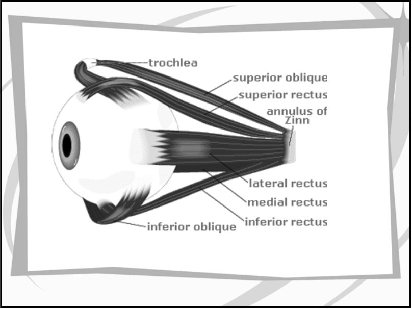
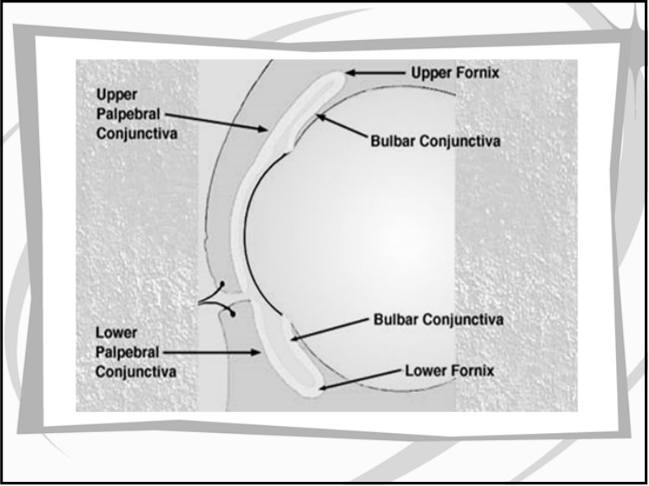
Both return in detail: muscles in chapter 9, conjunctiva in chapters 2 and 3.
6 · Directions and planes
| Term | Also called | Means |
|---|---|---|
| Anterior | ventral | toward the front |
| Posterior | dorsal | toward the back |
| Superior | rostral Lecture · cranial TB | toward the head |
| Inferior | caudal | away from the head your mnemonic: caudal → "cuddle, foot massage" (toward the feet) |
| Medial / lateral | toward / away from the midline | |
| Proximal / distal | near / away from the point of origin |
Handout 1 · p. 5 · TB 1 · p. 1 · Fig. 1.2 (Slides 1 · #5). The handout says rostral and the textbook cranial for superior: know both.


| Plane | Runs | Divides into |
|---|---|---|
| Sagittal | vertical, front to back | right and left sides |
| Midsagittal | sagittal, through the midline | right and left halves |
| Coronal (frontal) | vertical, side to side | anterior and posterior parts |
| Axial (transverse, horizontal) | horizontal | superior and inferior parts |
TB 1 · p. 2. Fig. 1.1 is a horizontal (axial) section.
Directions on the globe
- Anterior / posterior are measured from the anterior pole, the centre of the cornea: the pupil is anterior to the ciliary body.
- Inner / outer are measured from the centre of the globe, which lies in the vitreous: the retina is inner to the sclera.
- Vitread = toward the vitreous (inward) · sclerad = toward the sclera (outward).
Handout 1 · p. 5 · TB 1 · p. 2
The textbook's chapter 1 goes on to refractive errors, eye instruments, basic histology, cell physiology and cell junctions. Lecture 1 does not cover them, so they are left out here. Where a later lecture needs a piece of them (e.g. junctions for the blood–retinal barrier), that chapter brings it in.
Key facts
3 coats: fibrous (cornea + sclera) · vascular (uvea = iris + ciliary body + choroid) · neural (retina)
3 spaces: anterior chamber · posterior chamber (both aqueous, joined at the pupil) · vitreous chamber (gel)
6 extraocular muscles: 4 recti + 2 obliques
Reference points: anterior pole for front/back, centre of the globe for inner/outer
Self-check
Name the three coats of the globe and what each is made of.
Which structure produces the aqueous humour, and which structures does the aqueous nourish?
What are the boundaries of the anterior chamber? Of the posterior chamber?
Which part of the retina does the choroid feed?
"The retina is ___ to the sclera." Fill in inner or outer, and say what the reference point is.
What do vitread and sclerad mean?
A coronal plane divides the body into which parts? An axial plane?
Give two other words for "superior" and one for "inferior".
Sources for this chapter: Handout 1 "Building an Eye" (with your notes) · Slides 1 "Introduction" · Textbook ch. 1, Introduction to the Visual System, pp. 1–3.
Eyelids and lacrimal system
What the lids are made of, which muscle moves them, which gland makes which tear layer, and the route the tears take to the nose.
Prof. Goodwin's guideline objectives for "Ocular Adnexa", word for word: Review · p. 1
- Exam "Be able to identify the external features of the eyelids" → §1 (label Fig. 2.2)
- Exam "Describe the functions of each structures that make up the eyelids" → §2
- Exam "Describe the function of each of the muscles of the eyelids" → §3
- Exam "Describe the difference of ptosis appearance depending on the muscle involved" → §3, Ptosis
- Exam "Describe how the glands of the eyelid contribute to the different tear layers" → §4 and §5
- Exam "Describe how the tears drain from the orbit" → §6
Your typed notes beside these objectives: "picture / tarsal plate / orbital plate / levator muller helps keep eye up / aquaous and acessory / goblet cells, muzin / ablauf von tränendrüse bis nase" Your notes. Read as hints: identify from a picture; tarsal plate; orbital septum (probably meant by "orbital plate"); levator and Müller hold the lid up; aqueous layer from the lacrimal and accessory glands; goblet cells make the mucin; and the route from the lacrimal gland to the nose ("Ablauf von Tränendrüse bis Nase"), so learn §6 as a sequence.
1 · External features of the eyelids
The eyelids (palpebrae) are folds of skin and tissue that cover the globe when closed. Four jobs: (1) cover and protect the globe, (2) hold the structures that make the tear film, (3) spread the tears over the eye on opening, (4) push the tears toward the drainage at the medial canthus on closing. On closure the upper lid moves down over the cornea; the lower lid rises only slightly. TB 2 · p. 10
| Feature | What and where | Function / fact | Your notes |
|---|---|---|---|
| Palpebral fissure | the opening between the open lids; about 11 mm high in Caucasians, 8.5 mm in Asians TB 2 · p. 10 | the upper lid covers the superior limbus by 1.5–2 mm; the lower lid lies within 1 mm of the inferior limbus TB 2 · p. 10 | sketch: upper lid over the cornea "1,5–2 mm" |
| Lateral canthus | lateral corner where the lids meet, 5–7 mm medial to the bony orbital rim | in contact with the globe TB 2 · p. 10 | |
| Medial canthus | medial corner, at the medial orbital rim | separated from the globe by the lacrimal lake, a pool of tears TB 2 · p. 10 | |
| Plica semilunaris | narrow crescent fold of conjunctiva in the medial canthus, the floor of the lacrimal lake | lets the eye move laterally without stretching the bulbar conjunctiva TB 2 · p. 10 | "raised tissue"; "it enlarged when we look lateral" Your notes |
| Caruncle | small pink mass of modified skin just medial to the plica | epithelium with goblet cells, fine hairs, sweat and sebaceous glands TB 2 · p. 10 | "pink tissue", in the middle (of the canthus) |
| Eyelid margin | rests against the globe; holds the lashes and the meibomian pores TB 2 · p. 11 | medial 1/6 = lacrimal portion (no lashes, no pores) · lateral 5/6 = ciliary portion; they divide at the lacrimal papilla with the punctum TB 2 · p. 12 | "part / cili portion" |
| Cilia (lashes) | double or triple row; about 150 upper, 75 lower; curl up on the upper lid, down on the lower | richly innervated: the slightest touch triggers a protective blink TB 2 · p. 11 | = eyelashes |
| Pores of the meibomian glands | a row on the margin posterior to the cilia; the gray line runs between lashes and pores | release the lipid for the outermost tear layer TB 2 · p. 11–12, 16 | "outermost tear" |
Handout 2 · p. 1 · Slides 2 · #2, #3, #11
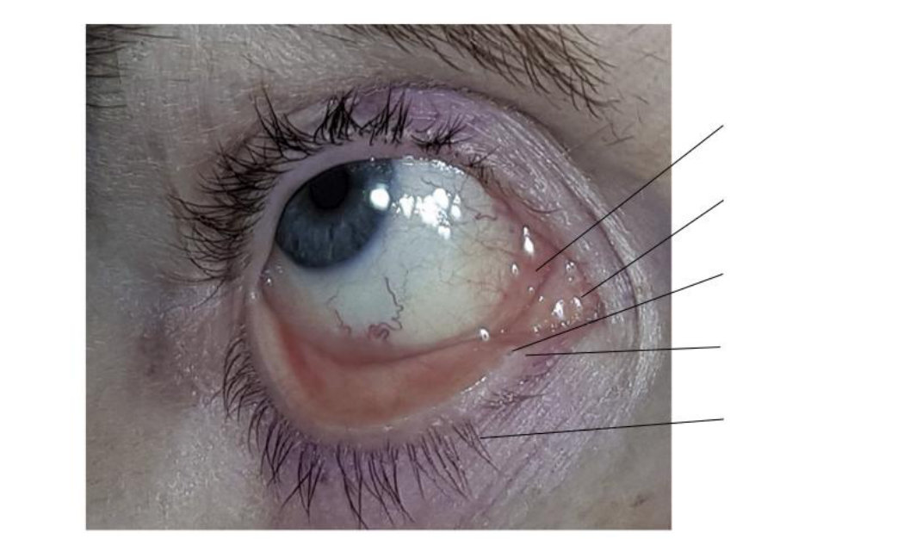
Answer: Fig. 2.2 with labels
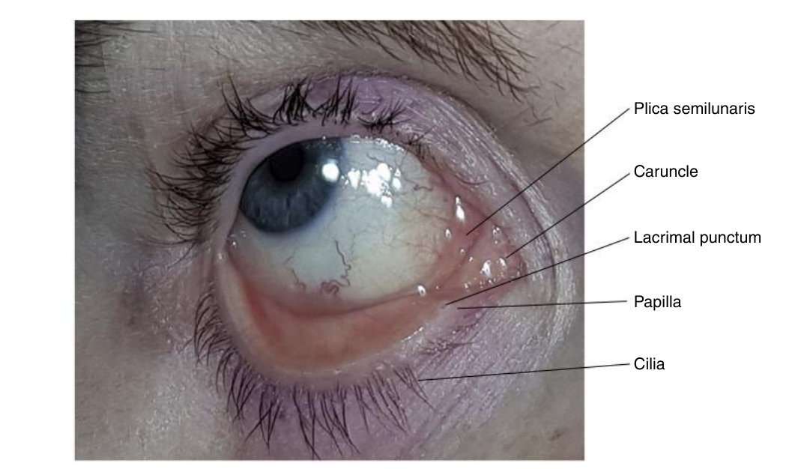
Top to bottom: plica semilunaris · caruncle · lacrimal punctum · (lacrimal) papilla · cilia.
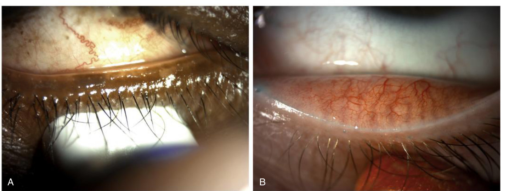
2 · The structures that make up the eyelid
The handout's list, front to back where it applies. Fig. 2.10 below shows them in a sagittal section.
| Structure | What and where | Function | Clinical / your notes |
|---|---|---|---|
| Skin | the thinnest skin in the body; fine hairs, sebaceous and sweat glands; no fat beneath it in the tarsal part TB 2 · p. 16 | covers the lid; folds easily | loose tissue under it fills with blood or oedema (black eye) TB 2 · p. 18 |
| Palpebral conjunctiva | lines the inner surface of the lid; at the fornix it turns into the bulbar conjunctiva, which covers the sclera TB 2 · p. 18 | its goblet cells make the innermost, mucin layer of the tears; most numerous in the plica semilunaris, then inferonasal tarsal conjunctiva TB 2 · p. 19 | "goblet cells: innermost tear layer"; "fornix: bulbar conjunctiva is continuous" Your notes · pale conjunctiva can be a sign of anaemia TB 2 · p. 19 |
| Fornix | the fold where palpebral meets bulbar conjunctiva, upper and lower TB 2 · p. 18 · Slides 1 · #4 | holds the accessory lacrimal glands of Krause; the main lacrimal gland's ducts open into the upper fornix TB 2 · p. 16, 24 | |
| Mucocutaneous junction | on the lid margin, just behind the meibomian pores (line of Marx): skin epithelium becomes conjunctival epithelium TB 2 · p. 11–12, 18 | the granular and keratinised layers of the skin stop and a stratified columnar mucous epithelium begins; may hold stem cells for the palpebral conjunctiva TB 2 · p. 18 | |
| Tarsal plate (tarsus) | dense connective tissue in each lid; upper 10 mm high in Caucasians, 8 mm in Asians; lower 5 mm. Front: against the submuscular tissue; back: stuck to the palpebral conjunctiva Handout 2 · p. 3 · TB 2 · p. 16 | gives the lid rigidity and structure and shapes it to the globe; holds the meibomian glands; the canthal tendons tie it to the orbital rim TB 2 · p. 16 | "can't bend" · clinical: eyelid eversion (box below) |
| Orbital septum | sheet of connective tissue from the orbital rim to the levator aponeurosis above the upper tarsus (3.7–4.4 mm above it), and to the lower tarsal plate Handout 2 · p. 3 · TB 2 · p. 16 | (a) separates the lid structures from the orbital contents · (b) a barrier: keeps eyelid infections out of the orbit, and so away from a direct route to the brain Handout 2 · p. 3 Exam | "People can die if it comes in!" · "Thick" (see the notes box) Your notes |
The muscles and glands, also part of the lid, follow in §3 and §4.
To evert the upper lid, place the cotton-tipped applicator or fingertip above the superior edge of the tarsal plate; pressing on the middle of the plate does not work, because the plate is rigid. Once everted, the meibomian glands can show as yellow vertical streaks and the lacrimal gland may be seen above the tarsus. TB 2 · p. 16, 24 · Handout 2 · p. 3
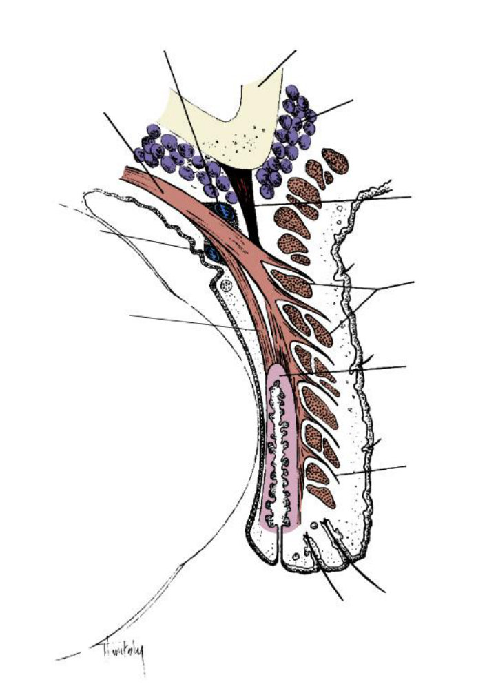
Answer: Fig. 2.10 with labels
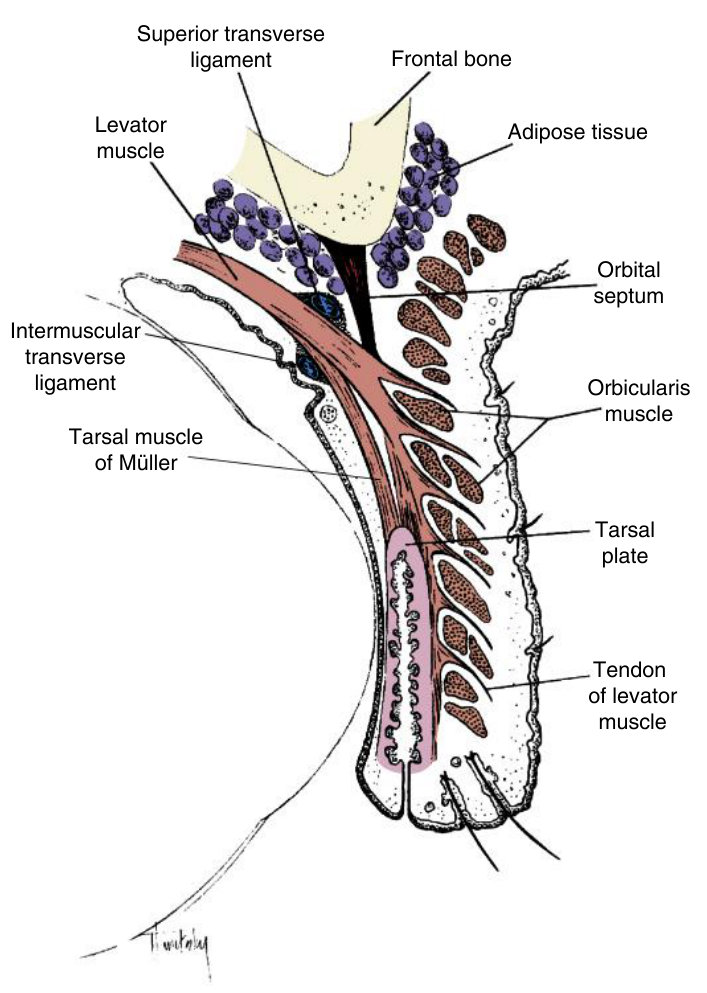
Left side, top to bottom: superior transverse ligament · levator muscle · intermuscular transverse ligament · tarsal muscle of Müller. Right side, top to bottom: frontal bone · adipose tissue · orbital septum · orbicularis muscle · tarsal plate · tendon of the levator muscle (aponeurosis).
3 · The eyelid muscles
| Muscle | Type · course | Function | Innervation |
|---|---|---|---|
| Orbicularis oculi | striated; encircles the palpebral fissure, under the skin, from the lid margin out onto the orbital rim TB 2 · p. 12–13 | (1) closes the lids · (2) protects the eye · (3) renews the tear film · (4) keeps the lid margin near the globe · (5) helps meibomian secretion Handout 2 · p. 4 | CN VII, facial (temporal and zygomatic branches) TB 2 · p. 13, 22 |
| Superior palpebral levator | striated; starts in the posterior orbit (lesser wing of the sphenoid, above the optic foramen); runs forward with the superior rectus, its sheath joined to the rectus sheath; ends as the levator aponeurosis Handout 2 · p. 5 · TB 2 · p. 14 | elevates the upper lid; the link to the superior rectus raises the lid further when the eye looks up Handout 2 · p. 5 · TB 2 · p. 14 | CN III, oculomotor (superior division) TB 2 · p. 14 |
| Müller muscle (superior tarsal) | smooth muscle; arises from the underside of the levator where it turns into aponeurosis; inserts into the upper edge of the tarsal plate Handout 2 · p. 5 · TB 2 · p. 15 | additional elevation, about 2 mm; widens the fissure in fear or surprise TB 2 · p. 15 | sympathetic (from the superior cervical ganglion) Handout 2 · p. 5 · TB 2 · p. 22 |
Levator aponeurosis = the tendinous, fan-shaped expansion of the levator Handout 2 · p. 5. It pierces the orbital septum and spreads across the whole lid: posterior fibres into the lower third of the front of the tarsal plate, anterior fibres between the orbicularis bundles into the skin, which makes the upper lid crease. Its lateral horn divides the lacrimal gland into orbital and palpebral lobes. TB 2 · p. 14 Your notes: "not a m(uscle)", "spread out through the whole lid".
A smaller inferior tarsal muscle (smooth, sympathetic) lies in the lower lid; the lower lid's retractor is the capsulopalpebral fascia from the inferior rectus sheath. TB 2 · p. 14–15
The orbicularis in parts
| Part | Where | Does |
|---|---|---|
| Palpebral portion | the part of the lid on the globe, nearest the margin (pretarsal + preseptal) | gentle closure, the involuntary blink, the voluntary wink; blinking renews the precorneal tear film TB 2 · p. 13–14 |
| · Horner muscle | deep palpebral fibres from the posterior lacrimal crest, around the canaliculi | moves tears through the canaliculi into the drainage system (§6) TB 2 · p. 13 |
| · Riolan muscle | at the lid margin, on both sides of the meibomian openings | keeps the margin against the globe; compresses the tarsus in a blink to express meibum TB 2 · p. 13, 20 |
| Orbital portion | concentric outer ring on the orbital rim | tight closure (forehead, temple, cheek join in): protection against pain or injury, reflex blepharospasm TB 2 · p. 13–14 |
Antagonists: palpebral orbicularis ↔ levator · orbital orbicularis ↔ frontalis (the forehead muscle that raises the brow; Fig. 2.1, Slides 2 · #5). TB 2 · p. 10, 14 The lid is held open by levator tone with the orbicularis relaxed; in a blink levator tone stops and the orbicularis fires. TB 2 · p. 14
Your notes on the orbicularis: "in circle, help us blink · closes the eyelid → protects the eye · moves tear film through the eye".
| Ectropion | Entropion | |
|---|---|---|
| Margin | turns outward, away from the globe (Fig. 2.8) | turns inward (Fig. 2.9) |
| Cause | loss of orbicularis tone, normal in ageing | spasm of the orbicularis; or scarring after trauma or disease |
| Result | the punctum leaves the lacrimal lake → tears cannot drain → epiphora (tears overflow onto the cheek) | lashes rub the cornea → irritation, corneal abrasion |
Both are more common in the lower lid and can be repaired surgically. TB 2 · p. 13 · Handout 2 · p. 4 · Slides 2 · #6 Your notes: "outward: weakness of orbicularis m. · inwards (scarring): over-action of orbicularis m." — matches the textbook.
Ptosis: what it looks like depends on the muscle
Ptosis = drooping of the upper eyelid, from weakness or paralysis of the levator or of Müller muscle. Handout 2 · p. 6 · TB 2 · p. 15 Exam
| Muscle affected | Appearance | Example (Fig. 2.12) |
|---|---|---|
| Müller alone (sympathetic) | mild, less noticeable ptosis (Müller adds only ~2 mm) | A: Horner syndrome |
| Levator (CN III) | severe, obvious ptosis | B: cranial nerve III palsy |
| Both cases | the patient raises the lid with the frontalis: the brow on that side is raised and the forehead wrinkled | |
TB 2 · p. 15 · Slides 2 · #8. Your notes: "Müller → subtle / levator → dramatic".
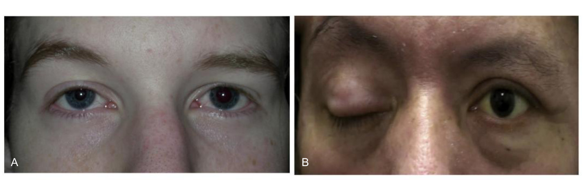
4 · The glands of the eyelids
Groundwork: three ways a gland secretes
| Mode | What leaves the cell | Eyelid example |
|---|---|---|
| Holocrine | the whole cell, filled with secretion, breaks down | meibomian glands TB 2 · p. 20 |
| Apocrine | part of the cytoplasm is pinched off | glands of Moll TB 2 · p. 21 |
| Merocrine | only the product; the cell stays intact | accessory lacrimal glands (and the main lacrimal gland, which has the same make-up) TB 2 · p. 22 |
TB 1 · p. 5, Fig. 1.6. Glands are also named by what they secrete: mucous, serous or sebaceous (oily).
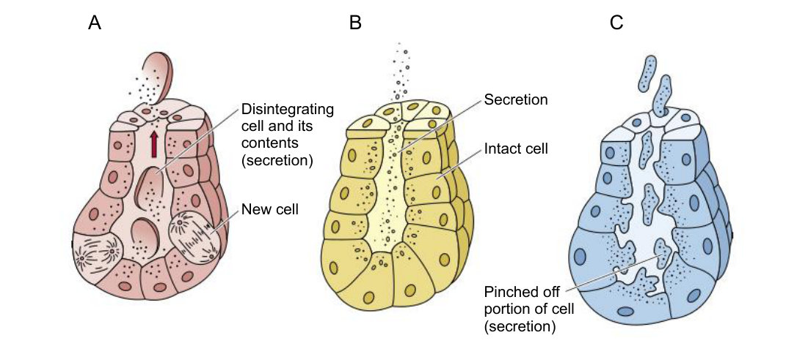
The glands, and the tear layer each makes
| Gland | Where | Kind | Secretes → for |
|---|---|---|---|
| Meibomian (tarsal) glands | embedded in the tarsal plate, vertical, pores on the margin behind the lashes; 25–40 upper, 20–30 lower TB 2 · p. 16 | sebaceous, holocrine TB 2 · p. 20 | meibum → the outer lipid layer of the tear film Handout 2 · p. 6 · TB 2 · p. 16 |
| Zeis glands | at the lash follicle, about two per follicle TB 2 · p. 20 | sebaceous, built like the meibomian glands but with only 1–2 acini TB 2 · p. 20 | sebum into the hair follicle → keeps the lash from becoming brittle; not a tear layer Handout 2 · p. 6 · TB 2 · p. 16 |
| Moll glands TB | near the lash follicle; open into the follicle, a Zeis duct or the margin | apocrine | antimicrobial proteins, defence of the lash and ocular surface; not a tear layer TB 2 · p. 16, 20–21 |
| Accessory lacrimal glands | upper and lower conjunctival fornix (glands of Krause: 20–40 upper, 6–8 lower) and the orbital border of the tarsal plate (glands of Wolfring, fewer) Handout 2 · p. 6 · TB 2 · p. 16 | merocrine TB 2 · p. 22 | → the aqueous layer Handout 2 · p. 6 |
| Main lacrimal gland | in the lacrimal fossa of the frontal bone, superotemporal orbit; split by the levator aponeurosis into a larger orbital and a smaller palpebral lobe; ~12 ducts into the upper fornix TB 2 · p. 24 | merocrine (same make-up as the accessory glands) TB 2 · p. 22, 24 | water, electrolytes, antibacterial agents → the aqueous layer Handout 2 · p. 7 · TB 2 · p. 24 |
| Goblet cells | in the conjunctival epithelium (not a gland of the lid itself) | the cell swells with mucin and its surface ruptures | → the innermost mucin layer TB 2 · p. 19 |
Your notes: meibomian "in tarsal plate", "important in dry eye"; accessory lacrimal "to do with tears"; main lacrimal gland "lateral & superior, help to produce tears".

Answer: Fig. 2.13 with labels

Left, top to bottom: accessory lacrimal gland (of Krause) · superior tarsal muscle (of Müller) · accessory lacrimal gland (of Wolfring) · palpebral conjunctiva · tarsal plate · meibomian glands · Riolan muscle. Bottom: pore of meibomian gland. Right, top to bottom: orbicularis oculi muscle · subcutaneous connective tissue · epidermis of skin · aponeurosis of levator muscle · submuscular areolar layer · gland of Moll · Zeis gland · hair follicle.
5 · The tear film
Functions
| Handout | Textbook adds | Your notes |
|---|---|---|
| a · lubricant between globe and eyelids | keeps the surface moist | |
| b · helps remove debris | traps debris and sloughed epithelial cells | (dirt …) |
| c · source of oxygen | the primary source of atmospheric oxygen for the cornea | (cornea! no vessels) |
| d · antibacterial substances | lysozyme, beta-lysin, lactoferrin, immunoglobulins | (protect from bacteria) |
| e · maintains corneal hydration | through changes in tonicity as tears evaporate | |
| f · regulates ocular-surface wound repair | growth factors and peptides | |
| not in the handout | a smooth refractive surface for good optics |
Handout 2 · p. 7 · TB 2 · p. 23. Handout: six functions; textbook: seven. Learn the handout's six and know the seventh.
Three layers, three sources
| Layer | Made by | Contains | Function |
|---|---|---|---|
| Lipid · outermost | meibomian glands | waxy esters, cholesterol, free fatty acids; ~53 nm thick | (i) retards evaporation · (ii) lubricates lid movement · (iii) stabilises the film by lowering surface tension, so tears do not overflow onto the cheeks |
| Aqueous · middle | main and accessory lacrimal glands (Krause, Wolfring) | salts, glucose, urea, enzymes, proteins, antibacterial substances; ~90% of the film | the watery bulk: moisture, oxygen, antibacterial defence |
| Mucin · innermost | goblet cells + the glycocalyx of the corneal and conjunctival surface cells | hydrophilic glycocalyx on the cells' microvilli, plus goblet-cell mucin | (i) makes the aqueous adhere to the ocular surface · (ii) lets it spread evenly; also reduces lid friction and traps microbes |
Handout 2 · p. 7–8 · TB 2 · p. 23–24. Whole film 4–8 µm. The textbook adds that the aqueous and mucin layers have no sharp border. Your notes: "watery layer"; mucin "closest to the cornea, tracks the water and sticks it to cornea".
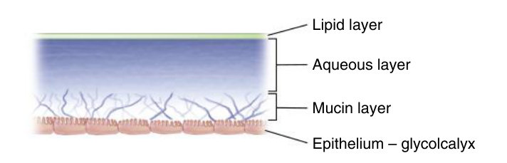
Gland → layer, as one chain each
Handout 2 · p. 6–8 · TB 2 · p. 16, 19, 24
A deficit in any layer can cause dry eye: aqueous (ageing, Sjögren syndrome and other autoimmune disease affecting the lacrimal gland) · lipid (meibomian gland dysfunction → faster evaporation: evaporative dry eye) · mucin (loss of goblet cells, e.g. chemical burns). TB 2 · p. 25 This is why you noted the meibomian glands as "important in dry eye". Contact lens wear is linked to a loss of meibomian glands (Fig. 2.14). TB 2 · p. 16 · Slides 2 · #9
6 · How the tears drain
About 75% of the tears leave through the nasolacrimal drainage system; the rest evaporate or are absorbed by the conjunctiva. TB 2 · p. 25
From the lacrimal gland to the nose
TB 2 · p. 24–26 · Handout 2 · p. 8 · Slides 2 · #10. The handout lists the five drainage parts (puncta → canaliculi → lacrimal sac → nasolacrimal duct → valve of Hasner); the first boxes are how the tears get there. Exam your hint "Ablauf von Tränendrüse bis Nase".
| Part | Where · size | Fact to know |
|---|---|---|
| Puncta | one per lid, on the lacrimal papilla at the junction of the lacrimal and ciliary portions of the margin; lower punctum 0.1–0.9 mm wide | face the globe: seen only if the lid edge is turned out slightly TB 2 · p. 25 |
| Canaliculi | in each lid: vertical ~2 mm (with a dilation, the ampulla), then horizontal ~8 mm along the margin; join as the common canaliculus, which enters the side of the sac | elastic walls, wrapped by Horner muscle; the angle of entry into the sac is a valve against reflux TB 2 · p. 25–26 |
| Lacrimal sac | in the lacrimal fossa of the medial orbital wall (frontal process of the maxilla + lacrimal bone); ~10 mm (Fig. 2.31) | medial canthal tendon in front, Horner muscle behind TB 2 · p. 26 |
| Nasolacrimal duct | in the nasolacrimal canal of the maxilla; ends in the inferior meatus of the nose | the textbook text says ~15 mm, its Fig. 2.31 says 12 mm: know both. Most tears are absorbed by its lining before the nose TB 2 · p. 25–26 |
| Valve of Hasner | at the end of the nasolacrimal duct Handout 2 · p. 8 | a mucosal fold that stops fluid flowing back up from the nose TB 2 · p. 26 |
What moves the tears
- The blink: the lids close from the lateral canthus toward the medial, pushing the menisci to the lacrimal lake and the puncta. TB 2 · p. 10, 26
- Capillary attraction draws tears into the puncta and canaliculi between blinks. TB 2 · p. 26
- Horner muscle pump (one theory): lid closure contracts it, shortening the canaliculi and expanding the sac, which pulls tears in; opening relaxes it and pushes them on into the duct. The mechanism is not fully known. TB 2 · p. 26
Your notes: puncta "where the tears drain, upper and lower lid"; your sketch marks the canaliculi "2 mm" and "8 mm", as in Fig. 2.31.

Answer: Fig. 2.31 with labels

Canaliculus, horizontal part (8 mm) · nasolacrimal sac (10 mm) · nasolacrimal duct (12 mm) · valve of Hasner · canaliculus, vertical part (2 mm) · common canaliculus.
- Orbital septum "Thick" Your notes: the textbook calls it a thin sheet of fibrous connective tissue; the handout just says "a sheet". Go with the textbook unless the lecturer said otherwise. TB 2 · p. 16 · Handout 2 · p. 3
- Fornix: "bulbar conjunctiva is continuous (so tears won't go to the brain)" Your notes: the textbook confirms that palpebral and bulbar conjunctiva are continuous at the fornix, but gives no such reason. The barrier to the orbit and brain that the handout names is the orbital septum. TB 2 · p. 18 · Handout 2 · p. 3
- Plica "enlarged when we look lateral" Your notes: the textbook says only that the fold lets the eye move laterally without stretching the bulbar conjunctiva. TB 2 · p. 10
The handout and the guidelines do not cover these, so they are left out: the eyebrows and the forehead muscles beyond the frontalis; lid topography (sulci, creases), epicanthus, lagophthalmos; lash disorders and prostaglandin lash growth; the lower-lid retractors and canthal tendons in detail; the microscopic layers of skin and conjunctival stroma, crypts of Henle, the lid wiper; hordeolum, chalazion, blepharitis, concretions; the sensory nerves and the blood supply of the lids (palpebral arcades); the nerve pathway of reflex tearing; tear break-up time and dry-eye treatment; the rival theories of tear drainage; ageing changes; references.
Key facts
11 mm (Caucasian) / 8.5 mm (Asian): palpebral fissure height · upper lid covers the limbus by 1.5–2 mm
10 mm (Caucasian) / 8 mm (Asian): upper tarsal plate · 5 mm: lower tarsal plate
~2 mm: extra lift from Müller muscle
~150 / 75 lashes upper / lower · 25–40 / 20–30 meibomian glands upper / lower
Innervation: orbicularis CN VII · levator CN III · Müller sympathetic
3 tear layers: lipid (meibomian) · aqueous (lacrimal + accessory) · mucin (goblet cells + glycocalyx) · film 4–8 µm, aqueous 90%
75% of tears drain via the nasolacrimal system · canaliculus 2 + 8 mm · sac 10 mm · duct 12–15 mm
Margin: lacrimal portion = medial 1/6, ciliary portion = lateral 5/6
Self-check
Name the structures you see in the medial canthus, from the globe outward.
Where on the lid margin are the meibomian pores, the mucocutaneous junction and the lashes, front to back?
What does the tarsal plate do, and how high is it?
Where does the orbital septum run, and what are its two functions?
Give the five functions of the orbicularis oculi and its nerve.
Levator vs Müller: type of muscle, insertion, function, innervation.
A patient has a slight droop of one upper lid; another has a lid that almost closes the eye. Which muscle is involved in each, and what else do both show?
Ectropion and entropion: direction, cause and consequence.
Which gland makes which tear layer? Name the secretion mode where the textbook gives it.
What are the three functions of the lipid layer, and the two of the mucin layer?
Trace a tear from the lacrimal gland to the nose.
What does Horner muscle do, and what does the valve of Hasner do?
Sources for this chapter: Review slide "Ocular Adnexa" objectives (with your typed notes) · Handout 2 "Ocular Adnexa" (with your notes) · Slides 2 "Ocular Adnexa" · Textbook ch. 2, Ocular Adnexa and Lacrimal System, pp. 10–26 · Textbook ch. 1, p. 5 (modes of secretion).
Cornea, conjunctiva, sclera & limbus
The outer coat of the globe: five corneal layers, how the cornea is fed and kept clear, and the tissues that wrap the sclera.
Prof. Goodwin's objectives for "Cornea, Conjunctiva and Sclera": Review 14 · p. 1
- Exam "Describe the average central corneal thickness" → §1. Your review note: "535–555 im Zentrum". Your notes
- Exam "Describe the clinical significance of the five corneal layers" → §1 table, last column.
- Exam "Describe the layers and structures involved with a recurrent corneal erosion" → §2.
- Exam "Describe where the cornea obtains oxygen and nutrients" → §4.
- Exam "Describe the functions of the sclera, episclera, Tenon capsule, and conjunctiva" → §5–7.
The handout adds innervation (§3) and the limbus (§8). Its four named clinical correlates are in the green boxes: fluorescein dye, recurrent corneal erosion, corneal opacification, corneal neovascularization. Handout 3 · p. 1–6
1 · Five corneal layers
The cornea is the main refracting part of the eye. It is transparent and has no blood vessels. In front of it is the tear film; behind it is the aqueous of the anterior chamber. Central corneal thickness: 535–555 µm. The periphery is thicker: 640–670 µm. TB 3 · p. 30
From front to back: epithelium · Bowman layer · stroma · Descemet membrane · endothelium. TB 3 · p. 30 · Handout 3 · p. 1–3
| Layer | Structure | Clinical significance |
|---|---|---|
| 1 · Epithelium | Stratified, 5–7 cells thick, about 50 µm. Three cell types: surface squamous cells (2 cells thick), wing cells (2–3 layers), basal columnar cells (1 layer). Surface cells secrete a glycocalyx that adjoins the mucin layer of the tear film. Their microvilli and microplicae enlarge the surface and make the tear film more stable. Tight junctions (zonula occludens) join the lateral walls of the surface cells, near the apex. Basal cells secrete the basement membrane and are attached to it by hemidesmosomes. TB 3 · p. 30–31 · Handout 3 · p. 1–2 | The tight junctions are a barrier: substances pass through the cells, not between them, and the cornea takes up no excess fluid from the tears. This is why fluorescein stains only where the epithelium is damaged. Weak hemidesmosomes cause recurrent corneal erosion (§2). Superficial wounds heal quickly and without a scar. TB 3 · p. 30, 46 Your notes: "keep the water out" Your notes |
| 2 · Bowman layer | 8–19 µm. A dense sheet of randomly interwoven collagen fibrils. Acellular. It is a transition into the stroma rather than a true membrane. It ends at the corneal periphery. TB 3 · p. 32–33 · Handout 3 · p. 2 | Made before birth by the epithelium; it does not regenerate. If injured, it is replaced by epithelial cells or by stromal scar tissue. It is very resistant to shearing, penetration and infection. TB 3 · p. 33, 46 Your notes: "hard to see, so thin" · "never comes back … → scar" Your notes |
| 3 · Stroma | 450–500 µm, about 90% of the corneal thickness. Made of collagen fibrils, keratocytes and extracellular ground substance. The fibrils have a uniform diameter (25–35 nm) and lie parallel in 200–300 lamellae parallel to the surface; each lamella runs from limbus to limbus. Keratocytes (corneal fibroblasts) lie between the lamellae and maintain them. TB 3 · p. 33, 35 · Handout 3 · p. 2 | Transparency comes from the very regular fibril arrangement and diameter and the restricted distance between fibrils. Fibrils closer than half a wavelength of light cancel each other's scatter (destructive interference), so less than 1% of light is scattered. If the spacing is disturbed (edema) or the fibrils are disordered (scar), the cornea becomes opaque: corneal opacification. Repaired stroma has thicker, less ordered fibrils, so stromal wounds scar. TB 3 · p. 37, 46 Your notes: "if not, it will be a white scar; fibers not regular" Your notes |
| 4 · Descemet membrane | The basement membrane of the endothelium. It is produced throughout life, so it thickens with age: about 5 µm in children, about 15 µm over a lifetime, doubled by age 40. Elastic: if torn, it curls into the anterior chamber. TB 3 · p. 37–38 · Handout 3 · p. 3 | Very resistant to trauma and enzymes, and it can be regenerated if damaged (by keratocytes and endothelium). Its end at the limbus is a thickened ring, the Schwalbe line, a landmark of the angle (chapter 6). Mounds of extra basement membrane: Hassall–Henle bodies in the periphery (common with age), guttata in the centre (a sign of endothelial dysfunction). TB 3 · p. 38–39, 47 |
| 5 · Endothelium | A single layer of flattened cells, 5 µm thick; 70–80% are hexagonal (the "endothelial mosaic"). Their junctions are a slightly leaky barrier that lets nutrients in from the aqueous. Ionic pumps move ions, and water follows, out of the stroma into the aqueous: this keeps the cornea at its right hydration. TB 3 · p. 38–39, 44 · Handout 3 · p. 3 | The cells do not divide. When cells are lost, the neighbours enlarge and spread out to cover the gap, so cell density falls with age: 3000–4000 cells/mm² in children, 1000–2000 at 80. Below about 400–500 cells/mm² the layer fails and the stroma swells (corneal edema); in Fuchs dystrophy the pumps fail. TB 3 · p. 39, 45 Your notes: "pump water out of cornea into [the aqueous]" · "they spread out and get bigger to fill empty space" Your notes |

Answer: Fig. 3.3 with labels

Left, top to bottom: corneal epithelium · corneal stroma · corneal endothelium · anterior chamber. Right: Bowman layer (under the epithelium) · Descemet membrane (above the endothelium).
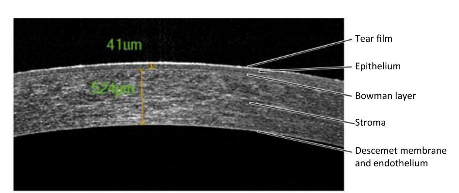
Fluorescein in the tear film does not enter the epithelium while the zonula occludens are intact. Where the tight junctions are broken, the dye passes through Bowman layer into the anterior stroma. Through the slit lamp's cobalt blue filter the defect glows bright green (Fig. 3.5). TB 3 · p. 30 · Handout 3 · p. 1 · Slides 3 · #4
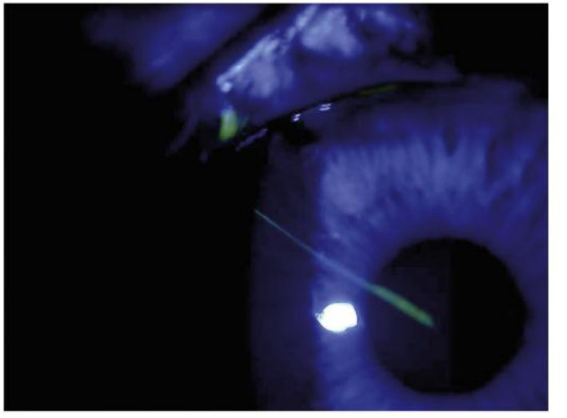
The cornea loses transparency when the stromal order is lost. Edema changes the refractive index and disturbs the fibril spacing, so destructive interference no longer cancels the scatter. A scar forms when fibrils are rebuilt wide and disordered. Active keratocytes during wound healing can cause a temporary haze. TB 3 · p. 37 · Handout 3 · p. 2
Stromal swelling goes backward, because the anterior stroma is stiffer and Bowman layer is fixed. Descemet membrane then folds (striae). Endothelial failure causes much more edema than a damaged epithelium. TB 3 · p. 34, 45
2 · Recurrent corneal erosion
Groundwork from chapter 1: a hemidesmosome is a strong junction that joins the basal side of a cell to its basement membrane and the connective tissue beneath. It is built like half a desmosome: a plaque inside the cell, with filaments running from it into the underlying connective tissue. TB 1 · p. 8–9 (Fig. 1.9)
What holds the epithelium on
TB 3 · p. 31 (the basal cells secrete the basement membrane and attach to it by hemidesmosomes; anchoring fibrils run from the hemidesmosomes through Bowman layer into the anterior stroma) · Handout 3 · p. 2
What fails: the hemidesmosomes or anchoring fibrils are abnormal. The epithelium is poorly attached to its basement membrane, or the basement membrane to the stroma beneath, so the epithelium sloughs off again and again. TB 3 · p. 31 · Handout 3 · p. 2
- Layers involved: epithelium (basal cells) · its basement membrane · Bowman layer, crossed by the anchoring fibrils · anterior stroma.
- Causes: a superficial abrasion that did not heal completely, or an epithelial basement membrane dystrophy.
- Age: the basement membrane doubles in thickness by age 60. When it becomes thicker than the anchoring fibrils are long, the epithelium can slough.
- Pain: very painful, because the dense nerve endings in the epithelium are torn (§3).
TB 3 · p. 31
Healing: a minor abrasion heals in 24–48 h with the hemidesmosomes rebuilt. If the basement membrane is damaged, healing takes much longer. The textbook says "up to 6 weeks" on p. 31 and "months" on p. 46: know that it is slow. TB 3 · p. 31, 46
Your notes: "after an abrasion the epithelium grows back, but the hemidesmosomes do NOT grow back correctly" · review: "hemidesmosome problem in dystrophy". Your notes
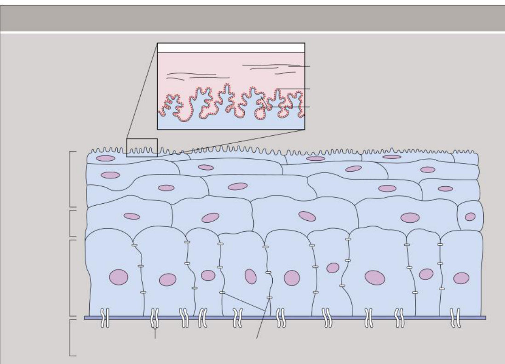
Answer: Fig. 3.4 with labels
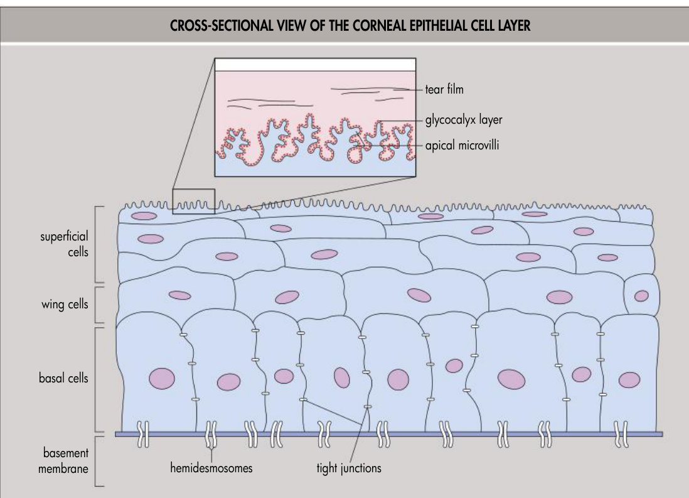
Inset: tear film · glycocalyx layer · apical microvilli. Left: superficial cells · wing cells · basal cells · basement membrane. Bottom: hemidesmosomes · tight junctions. Recurrent erosion: the hemidesmosomes (and the anchoring fibrils beneath the basement membrane) fail.
3 · Corneal innervation
TB 3 · p. 42 · Handout 3 · p. 4
- Some 70–80 large nerves enter the peripheral stroma. About 1 mm in, they lose their myelin and branch into three plexuses (midstromal, subepithelial, subbasal). Passing through Bowman layer, they lose their Schwann cell covering. TB 3 · p. 42
- The epithelium has about 400 times the nerve-ending density of skin, about 7000 nociceptors/mm². Even a light touch is felt as pain. Descemet membrane and endothelium have no nerve endings. TB 3 · p. 42
- Role in structure and function: the nerves are neurotrophic; they help maintain the tissue. Without them the epithelium becomes more permeable, divides less, adheres less and heals poorly (neurotrophic keratitis; one cause is diabetes). TB 3 · p. 42–43 · Handout 3 · p. 4
Your notes: "highly sensitive, one of the most [one word unreadable] in the body" · "diabetes damages the nerve → staining in the eye". The textbook confirms both. Your notes
4 · Where the cornea gets oxygen and nutrients
The cornea is avascular; it is fed by diffusion. Having no vessels is an important part of its transparency. TB 3 · p. 43
| Need | Main source | Smaller sources |
|---|---|---|
| Oxygen | Atmospheric oxygen dissolved in the tear film | aqueous humour · limbal capillaries. With the eye closed, about two-thirds comes from capillaries and the rest from the aqueous. |
| Nutrients (glucose, amino acids, vitamins) | Aqueous humour, through the leaky endothelium | conjunctival and episcleral capillaries in the limbus |
TB 3 · p. 43, 45 · Handout 3 · p. 4. (The textbook says the closed-eye oxygen comes from "capillaries"; it does not name which ones.)
If oxygen falls (e.g. a tight contact lens with poor tear exchange), the cornea switches to anaerobic glycolysis. Lactate builds up, draws water into the stroma, and the cornea swells. TB 3 · p. 45
When the cornea is short of oxygen, new vessels sprout from the perilimbal capillaries and grow into the cornea (Fig. 3.20A, B). In a contact lens wearer it usually means the cornea is not getting enough oxygen: a poorly fitting or poorly moving lens, or a lens with low oxygen permeability. It is more common with soft lenses than rigid gas-permeable lenses, and with extended wear. Infection, inflammation, sutures and wounds can also cause it. TB 3 · p. 43 · Handout 3 · p. 4 · Slides 3 · #7
If the cause is removed and oxygen returns, the vessels empty but remain as ghost vessels: fine white lines (Fig. 3.20C). Normally the healthy limbus is a barrier to vessel growth. TB 3 · p. 43
Your notes: "we do NOT want vessels in the cornea at all" · "approx. 1 mm in the limbus OK" · your sketch: a vessel loop at the limbus is "normal"; one reaching into the cornea is "NOT normal". Your notes
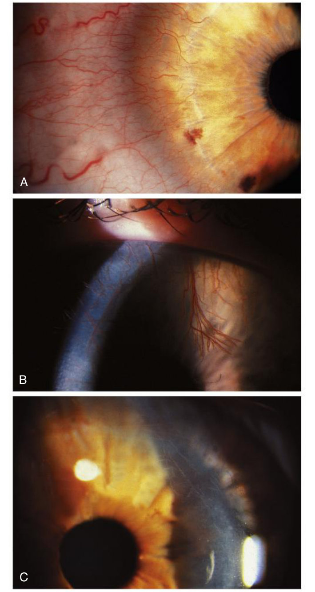
"Corneal neovascularization → posterior embryotoxon, arcus" Your notes. The textbook's cornea chapter does not mention posterior embryotoxon; ask in class or check chapter 6. It describes corneal arcus only as an aging change, not a vessel change: a yellow-white ring of cholesterol deposits in the peripheral stroma, separated from the limbus by clear cornea. Under age 40, suspect raised blood lipids. TB 3 · p. 48
Review note: "2 und 3 resistant to damage" Your notes. The textbook calls Bowman layer (2) and Descemet membrane (4) very resistant, not the stroma (3). TB 3 · p. 33, 38
5 · Sclera
The sclera is the posterior five-sixths of the outer connective tissue coat. TB 4 · p. 53
| Feature | What it is | Your notes |
|---|---|---|
| Functions | Maintains the shape of the globe · resists internal and external forces · attachment for the extraocular muscles (the tendon collagen merges with scleral fibrils). TB 4 · p. 53 · Handout 3 · p. 5 Exam | review: "sclera forms the eyeball" |
| Tissue | Thick, dense connective tissue. Collagen fibrils vary in diameter (25–230 nm) and lie in irregular, branching, interlacing bundles; this gives strength and flexibility. Thickness: 1 mm at the posterior pole, 0.3 mm just behind the rectus insertions. TB 4 · p. 53 | "irregular → gives the white colour / opaque" |
| Why opaque | Fewer glycosaminoglycans (one quarter of the cornea's), so less water (68%). Varied fibril sizes and irregular spacing scatter light. TB 4 · p. 53–54 | |
| Continuity | Continuous with the corneal stroma at the limbus. The innermost sclera merges with the choroid (suprachoroid). TB 4 · p. 53 · Handout 3 · p. 5 | |
| Scleral spur | A ring of circularly oriented collagen on the inner, anterior sclera; wedge-shaped in cross-section. Its posterior part is the origin of the ciliary muscle fibres. Most trabecular meshwork sheets attach to its anterior side. TB 4 · p. 53 · Handout 3 · p. 5 | |
| Lamina cribrosa | A sieve of scleral tissue that bridges the posterior scleral foramen; the optic nerve bundles pass through its holes. It is the weakest part of the outer coat, so high eye pressure can push it back: optic nerve cupping in glaucoma (Fig. 4.3). TB 4 · p. 54 · Handout 3 · p. 5 · Slides 3 · #9 | "see it in the optic nerve → bright" |
| Blood supply | Minimal; the sclera has no capillary beds, so it counts as avascular. Vessels only pass through it. It is nourished by small branches of the episcleral and choroidal vessels and of the long posterior ciliary arteries. TB 4 · p. 54 · Handout 3 · p. 5 | "avascular" · "episclera and choroidal blood vessels" |
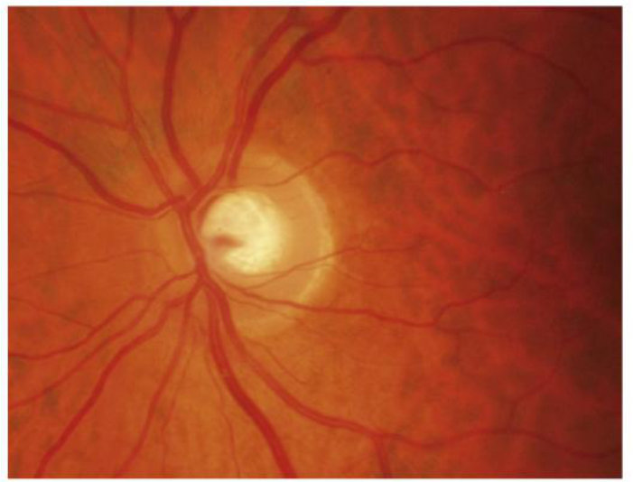
6 · Episclera and Tenon capsule
Near the limbus, from outside in: TB 4 · p. 53, 59
| Layer | Structure | Function | Your notes |
|---|---|---|---|
| Episclera | Loose, vascularized connective tissue just outer to the sclera. Its vessels come from the anterior ciliary arteries; the larger ones show through the conjunctiva. Joined to Tenon capsule by strands; thinner toward the back. TB 4 · p. 55 | Blood supply to the sclera and the peripheral cornea: capillary networks lie in front of the rectus insertions and around the peripheral cornea. TB 4 · p. 55 · Handout 3 · p. 6 | "very vascularized" · review: "blood supply, sending vessels to c…" (cut off) |
| Tenon capsule (fascia bulbi) | A thin, fibrous sheet of connective tissue outer to the episclera. Runs back from the limbus and fuses with the sclera at the optic nerve. TB 4 · p. 56 · Handout 3 · p. 6 | Protects and supports the globe and attaches it to the orbital connective tissue. The potential space between it and the episclera is a cavity in which the globe moves. TB 4 · p. 56 | "so thin; between episclera and conjunctiva" · "protects the globe – main purpose!" |
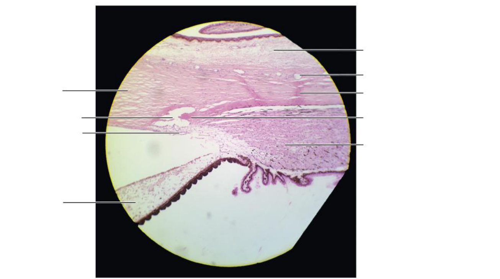
Answer: Fig. 4.1 with labels
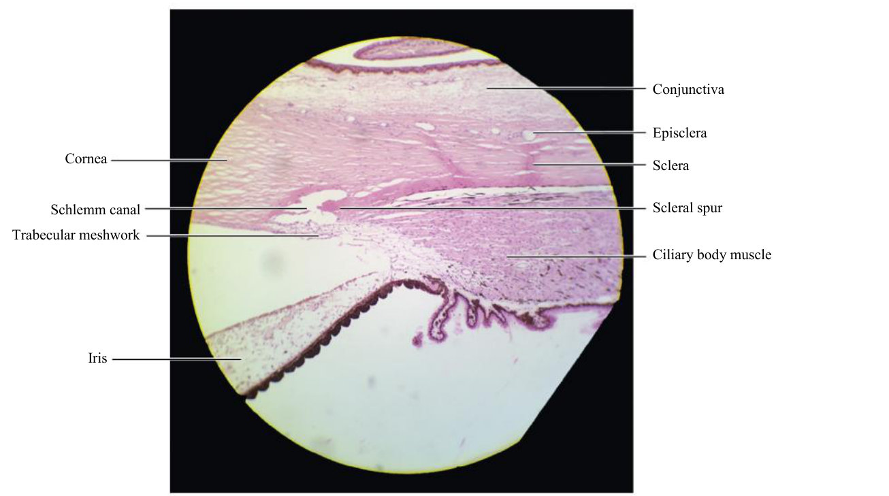
Left: cornea · Schlemm canal · trabecular meshwork · iris. Right, top to bottom: conjunctiva · episclera · sclera · scleral spur · ciliary body muscle. Schlemm canal and the meshwork return in chapter 6.
7 · Conjunctiva
A thin, translucent mucous membrane. It runs from the limbus over the anterior sclera, folds at the fornices, and lines the eyelids. Function: it lets the lids and the globe move smoothly over each other. It has two layers: a stratified epithelium with goblet cells, which make the mucous layer of the tear film, and a connective tissue stroma (submucosa) with vessels, lymphatics and nerves. TB 4 · p. 56–57
| Part | Where | Notes |
|---|---|---|
| Bulbar conjunctiva | covers the sclera | Translucent: the white sclera shows through. Loosely attached, except in the last 3 mm before the cornea, where it is tightly attached and merges with Tenon capsule and episclera. TB 4 · p. 56 |
| Fornix | the cul-de-sac joining bulbar and palpebral parts, superior and inferior | Loosely attached to the fascia of the levator, tarsal plate and extraocular muscles, so the conjunctiva moves with the globe and lids without stretching. TB 4 · p. 56–57 |
| Palpebral (tarsal) conjunctiva | lines the eyelids | Bright pink when the lid is everted. TB 4 · p. 57 |
Handout 3 · p. 6 · TB 4 · p. 56–57 (Fig. 4.5). Your notes: bulbar "– sclera", palpebral "– lids"; review: "conj. smooth eye movement" Your notes. The picture of the three parts is in chapter 1, §5.
8 · Limbus
The corneoscleral junction: a band about 1.5–2 mm wide around the cornea. TB 4 · p. 59 · Handout 3 · p. 6
- Anterior boundary: a plane joining the end of Bowman layer and the end of Descemet membrane. The handout says simply: "where Bowman layer and Descemet membrane end".
- Posterior boundary: a plane perpendicular to the globe surface through the posterior edge of the scleral spur.
TB 4 · p. 59 · Handout 3 · p. 6
| Cornea | at the limbus becomes |
|---|---|
| Corneal epithelium (5 cells) | thicker conjunctival epithelium (10–15 cells) |
| Regular corneal stroma | irregular scleral stroma, gradually, with no visible line |
| Bowman layer · Descemet membrane | end at the anterior border (Descemet's end = Schwalbe line) |
| Endothelium | breaks up to cover the strands of the trabecular meshwork |
| (nothing) | conjunctival stroma, Tenon capsule and episclera begin here |
TB 4 · p. 59
Also in the limbus: capillary loops of conjunctival and episcleral vessels that feed the cornea (§4), and the limbal stem cells that renew the corneal basal cells. TB 4 · p. 60 · TB 3 · p. 46
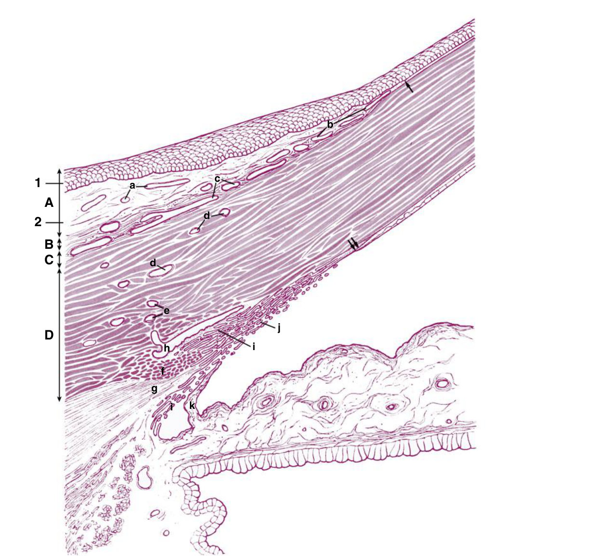
Lecture 3 and the objectives do not cover these, so they are left out: corneal curvature, diameters and astigmatism; the named proteoglycans; keratoconus; aquaporins and the details of ion transport; glucose metabolism; the biochemistry of wound repair; UV absorption and photokeratitis; keratoplasty and refractive surgery; contact-lens effects on the endothelium; corneal aging lines; testing corneal sensitivity; treatments of recurrent erosion. From chapter 4: myopia and scleral ectasia, scleral colour, the scleral canals, scleral innervation and aging, scleritis/episcleritis, plica and caruncle, conjunctival vessels, lymphatics and nerves, pinguecula, pterygium, conjunctivitis, palisades of Vogt and limbal stem cell deficiency. Schlemm canal and the trabecular meshwork belong to chapter 6.
Key facts
535–555 µm central corneal thickness · 640–670 µm peripheral
5 layers: epithelium (5–7 cells, ~50 µm) · Bowman (8–19 µm) · stroma (450–500 µm, ~90%) · Descemet (5 → ~15 µm, doubles by 40) · endothelium (1 layer, 5 µm, 70–80% hexagonal)
Do not regenerate: Bowman layer and endothelium (cells spread instead) · Regenerates: Descemet membrane
Endothelial density: 3000–4000 cells/mm² (child) → 1000–2000 (age 80) · fails below ~400–500
<1% of light scattered by the cornea · stroma clearest at 75–80% water · sclera 68% water
Minor abrasion heals in 24–48 h · basement membrane doubles by 60
O₂: tears (main) · aqueous + limbal capillaries (minor) · Nutrients: aqueous (main) · limbal vessels (minor)
Nerves: V1 → nasociliary → long + short ciliary · 70–80 nerves · ~7000 nociceptors/mm²
Sclera: 1 mm (posterior pole) → 0.3 mm (behind rectus insertions) · limbus 1.5–2 mm wide
Self-check
What is the average central corneal thickness, and how does the periphery compare?
Why does fluorescein stain an abrasion but not a healthy cornea?
Which layers and structures are involved in recurrent corneal erosion, and what are two causes?
What happens when Bowman layer is injured? When Descemet membrane is?
What three features of the stroma keep it transparent, and what causes it to opacify?
How does the endothelium keep the cornea clear, and what happens when endothelial cells are lost?
Where does the cornea get its oxygen and its nutrients?
What is corneal neovascularization, and what does it suggest in a contact lens wearer?
Which nerves supply the cornea, and why do they matter beyond pain?
Give the functions of the sclera, episclera, Tenon capsule and conjunctiva.
What are the scleral spur and the lamina cribrosa, and why is the lamina cribrosa clinically important?
Where are the boundaries of the limbus?
Sources for this chapter: Handout 3 "Cornea, Conjunctiva, and Sclera Anatomy" (with your notes; its "Images used" line lists chapter-2 figures by mistake) · Slides 3 (Figs. 3.3, 3.4, 3.5, 3.9, 3.20, 4.2, 4.3; slide 5 is an uncaptioned photo) · Review 14 · p. 1 (objectives and your typed notes) · Textbook ch. 3, Cornea, pp. 30–48 · ch. 4, Sclera, Conjunctiva, and Limbus, pp. 53–60 · ch. 1, pp. 8–9 (hemidesmosomes).
The crystalline lens
How the lens is built from the inside out, and how its layers tell you where a cataract sits.
Prof. Goodwin's four objectives for the lens: Guidelines · p. 2
- Exam "Describe how the embryonic nucleus forms." → section 2
- Exam "Describe how the lens fibers form around the embryonic nucleus." → section 3
- Exam "Describe how the Y sutures can be used to determine in which nucleus a cataract is located." → sections 4 and 6
- Exam "Identify the lens capsule, Y sutures, and embryonic nucleus." → the label drills in sections 4 and 7
Your typed notes beside them: posterior epithelium grows forward into the space · fibres start at the equator, go to the middle and form sutures · anterior Y, posterior inverted · between them = embryonic nucleus, along the suture = fetal · "just have a look at the picture what the parts look like". Your notes
Words. The lecture is titled "Intraocular Lens Anatomy", but in the textbook an intraocular lens (IOL) is the artificial lens put in after cataract surgery. This script says crystalline lens (or just "lens") for the eye's own lens, and IOL only for the implant. Handout 4 · p. 1 · TB 7 · p. 108
1 · Terms and optics
The lens is avascular and transparent. It sits in the posterior chamber: behind the iris, in front of the vitreous, hung from the ciliary body by the zonules. TB 7 · p. 97
| Term | Means | Numbers |
|---|---|---|
| Poles | the centres of the anterior and posterior surfaces; lens thickness = anterior pole to posterior pole | 3.6–4.5 mm (mean 4 mm) unaccommodated; grows 0.02 mm a year all life |
| Equator | the largest circumference: the ring where the anterior and posterior parts meet | diameter 6.5 mm (infant) → 9.0 mm horizontal × 9.7 mm vertical (adult, reached in the teens) |
| Biconvex | both surfaces curve outward; the posterior is steeper | radius of curvature: anterior 8–14 mm · posterior 5–8 mm |
TB 7 · p. 97 · Handout 4 · p. 1. You wrote "360° all around the lens!?" beside the equator: yes, it is a ring, not a point.
Optical properties
- Lecture Refractive power of the unaccommodated lens ≈ 20 D. Handout 4 · p. 1 · TB 7 · p. 97
- Power depends on surface curvature, refractive index, the index change to the surrounding fluids, and thickness. TB 7 · p. 97
- Gradient index: protein concentration rises toward the centre, so the index rises from cortex (1.38) to nucleus (1.41). TB 7 · p. 97
- Accommodation amplitude: maximum 14 D at age 8–12, near zero after 50 (presbyopia). TB 7 · p. 97, 103 You wrote "around 50 you lose accommodation".
2 · How the embryonic nucleus forms
Exam The lens comes from surface ectoderm. Its first fibres are made from the vesicle's posterior wall: TB 9 · p. 140, 142–145 · TB 7 · p. 97–98
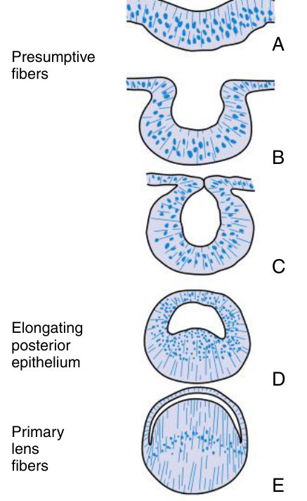
| Consequence | Why |
|---|---|
| No posterior epithelium in the adult lens | it was used up to make the primary fibres TB 7 · p. 97 · TB 9 · p. 145 |
| Embryonic nucleus has no sutures | primary fibres simply fill the vesicle from back to front; sutures appear only with the secondary fibres TB 9 · p. 145 |
| Embryonic nucleus = the centre of the lens | every later fibre is laid down outside it TB 7 · p. 100 |
| Capsule present from the start | the vesicle's basal lamina becomes the lens capsule (evident at 5 weeks) TB 9 · p. 144–145 |
Cell orientation in the vesicle: apical surfaces face the lumen, basal surfaces face outward. This is why, later, the anterior suture is made of apical fibre ends and the posterior suture of basal ends. TB 7 · p. 97, 100
3 · Epithelium, germinative zone and secondary fibres
| Part | Structure | Job |
|---|---|---|
| Anterior lens epithelium | a single layer of cuboidal cells under the anterior capsule only; basal side on the capsule, apical side facing the lens centre; joined by desmosomes and gap junctions, few if any tight junctions | secretes the anterior capsule all life · metabolic transport (Na⁺/K⁺-ATPase pumps) TB 7 · p. 98, 103 |
| Germinative zone | the band of epithelium in the preequatorial region, just anterior to the equator | the site of mitosis, which continues throughout life TB 7 · p. 98 |
| Secondary lens fibres | every fibre made from germinative-zone cells; in cross-section a flattened hexagon (3 × 9 µm); an outer fibre is up to 1 cm long; full of crystallins; interlocking (ball-and-socket) lateral membranes let fibres slide in accommodation | transparency and refraction TB 7 · p. 98–99 |
How a secondary fibre forms around the embryonic nucleus
Exam
TB 7 · p. 98, 104 · TB 9 · p. 145
- This happens all around the equator, so each layer is a complete shell: the lens grows like an onion, youngest fibres outside, oldest in the centre. TB 7 · p. 98 You wrote "through whole life they become fatter because they are like an onion".
- Lens bow: the fibre nuclei of one layer, joined by a line, form an arc bowed toward the front. TB 7 · p. 98
- Timing: first layer of secondary fibres complete by week 7; Y sutures visible in the third month. TB 9 · p. 145
4 · The nuclei and the Y sutures
The fibres are grouped by when they were made, so the zones are nested shells: TB 7 · p. 100 · Fig. 7.7C
| Zone (inside → out) | Contains the fibres made | Sutures |
|---|---|---|
| Embryonic nucleus | primary fibres (from the posterior epithelium); the very centre; highest refractive index | none |
| Fetal nucleus | embryonic nucleus + secondary fibres formed before birth | Y sutures: anterior upright Y, posterior inverted Y |
| Adult nucleus | embryonic + fetal nuclei + fibres formed from birth to sexual maturation | more stellate, branching |
| Cortex | fibres formed after sexual maturation; lowest refractive index | complex stars |
TB 7 · p. 100 · TB 9 · p. 145. The textbook adds a second scheme: fibres before sexual maturation = juvenile nucleus, then adult nucleus to middle age, the rest = cortex. Use the table's version unless asked.
Sutures
- A suture is where the fibre ends of one layer meet at a pole. Anterior suture = apical ends; posterior suture = basal ends. TB 7 · p. 100
- The secondary fibres made in the embryo meet in three branches: the Y sutures. Anterior: upright Y. Posterior: inverted Y. TB 7 · p. 100 Lecture Handout 4 · p. 3–4
- A fibre that starts at the tip of a Y branch at one pole ends in a fork of the Y at the other pole: this conserves the lens shape (Fig. 7.7A). TB 7 · p. 101
- Later sutures get more complex: after birth more stellate; early adulthood 6–9 branches; middle to old age 9–15 complex branching stars. Their offset, complex pattern helps transparency. TB 7 · p. 100
Label the lens zones and sutures
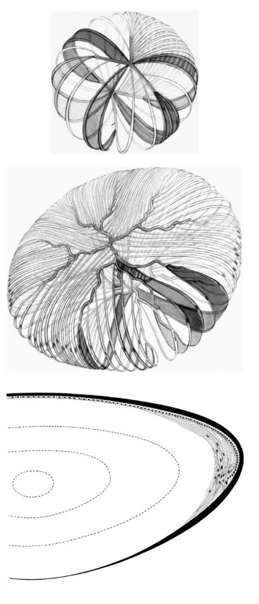
Answer: Fig. 7.7 with labels
A: (a) anterior Y suture · (b) posterior Y suture (inverted). B: the adult cortex sutures, branching stars. C: anterior capsule · cortex · adult nucleus · fetal nucleus · embryonic nucleus ("embryonal n.") · posterior capsule. The capsule is drawn thicker in front than behind.
5 · Lens capsule
| Feature | Detail |
|---|---|
| What it is | a transparent basement membrane enclosing the whole lens; with time the thickest basement membrane in the body TB 7 · p. 97 |
| Made of | mainly collagen; no elastic fibres, yet highly elastic thanks to its lamellar arrangement TB 7 · p. 98 |
| Barrier | semipermeable: keeps out large molecules (albumin, haemoglobin), lets nutrients and antioxidants in; sealing the lens off early gives it immune privilege TB 7 · p. 97, 103 |
| Thickness | anterior capsule made by the anterior epithelium and thickens with age (anterior pole ~11 → 15 µm; the ring around it is thickest, ~13.5 → 16 µm) · equator ~7 µm · posterior pole thinnest, ~3.5 µm, barely changes TB 7 · p. 98 |
| Shape | the capsule would take a more spherical shape; the pull of the zonules, which insert into it (the zonular lamella), counteracts this. That is the basis of accommodation TB 7 · p. 98 |
| In cataract surgery | the anterior capsule is opened, epithelium and fibres removed, the rest of the capsule is left in place and the IOL goes inside it TB 7 · p. 108 (you wrote "by cataract surgery they leave it") |
6 · Clinical correlate: cataracts
Any lens opacity is a cataract; they are named by location or cause. Age is the major risk factor; others include disease (diabetes), genetics, trauma, radiation, nutrition and congenital factors. Cataracts are the leading cause of blindness worldwide. TB 7 · p. 105–106 · Handout 4 · p. 3
| Type | Where | Looks like | Clinical note |
|---|---|---|---|
| Nuclear | embryonic, fetal or adult nucleus | central opacity, yellow to brown (brunescence), Fig. 7.12 | raises lens power: a myopic shift (a hyperope may briefly see better) TB 7 · p. 106 |
| Cortical | cortex | spokes, thick at the periphery, tapering inward, following the fibres, Fig. 7.13 | starts near the equator, progresses slowly; hurts vision only when it reaches the pupil area TB 7 · p. 106–107 |
| Posterior subcapsular | just under the posterior capsule | seen in retroillumination, Fig. 7.14 | affects vision early (on the visual axis, near the nodal point) · risk: long-term high-dose steroids, radiation TB 7 · p. 106–108 |
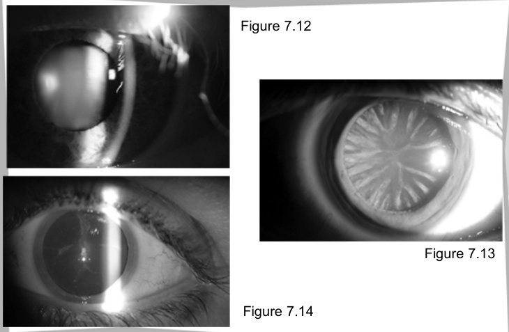
You wrote "1. yellowish – age related" under cataracts: that is the nuclear type's brunescence. TB 7 · p. 106
Using the Y sutures to place a cataract
Exam The Y sutures belong to the fetal nucleus, and the embryonic nucleus (no sutures) lies between the anterior Y and the posterior inverted Y. Everything formed after birth lies outside them. So, at the slit lamp: TB 7 · p. 100 · TB 9 · p. 145 · Handout 4 · p. 4
- Find the anterior upright Y and the posterior inverted Y. Where is the opacity?
- Between the two Ys, in the centre → embryonic nucleus (formed before the sutures existed)
- On or along a Y suture → fetal nucleus (the Y sutures are part of it)
- Anterior to the anterior Y or posterior to the posterior Y → adult nucleus or cortex (later shells; spokes = cortical)
The first two branches are exactly your lecture drawing ("red dot between the Ys = cataract in embryonic nucleus; purple dot on the Y = fetal nucleus; both you are born with it") and your typed review note. Your notes The third branch follows from the layering in TB 7 · p. 100.
Both the embryonic and fetal nuclei are formed before birth, so an opacity there points to a developmental cause. If the primary fibres fail to elongate and pack in order, the result is a cataract of the primary fibres (embryonic nucleus); interference with the secondary fibres gives a sutural cataract along the Ys. Rubella in the mother hits the lens between weeks 4 and 7, while the primary fibres form. TB 9 · p. 145
7 · Slit-lamp appearance
An optic section shows the lens biconvex, crossed by bright and dark zones of discontinuity (changes in light scatter). In front the zones are convex forward; behind the centre they are concave forward. In the handout's order, front to back: Handout 4 · p. 4 · TB 7 · p. 100
| # | Zone | Appearance | What it is |
|---|---|---|---|
| 1 | Anterior lens capsule | first bright line, convex forward | the capsule |
| 2 | Subcapsular clear zone | dark line | newly synthesised fibres |
| 3 | Remodelling zone (zone of disjunction) | next bright line | cortex losing transparency at an abrupt change in cell differentiation |
| 4 | Cortex and nuclei | grey zones | rest of the cortex, adult, fetal and embryonic nuclei |
| 5 | Anterior Y suture | upright Y, may be visible | belongs to the fetal nucleus |
| 6 | Embryonic nucleus | the centre | primary fibres |
| 7 | Posterior inverted Y suture | upside-down Y (Fig. 7.9) | in the posterior fetal nucleus |
| 8 | Posterior cortex | zones concave forward | cortex behind the nucleus |
| 9 | Posterior capsule | final zone | the capsule |
TB 7 · p. 100, 102. Your notes for zones 1–3 ("in the picture" with a red, yellow and blue dot) match the dots on Fig. 7.8 below.
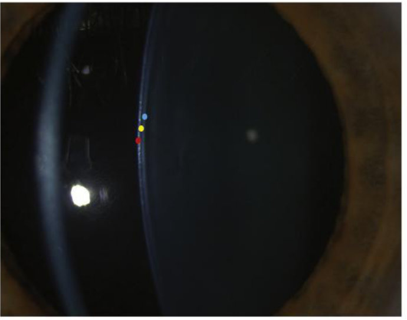
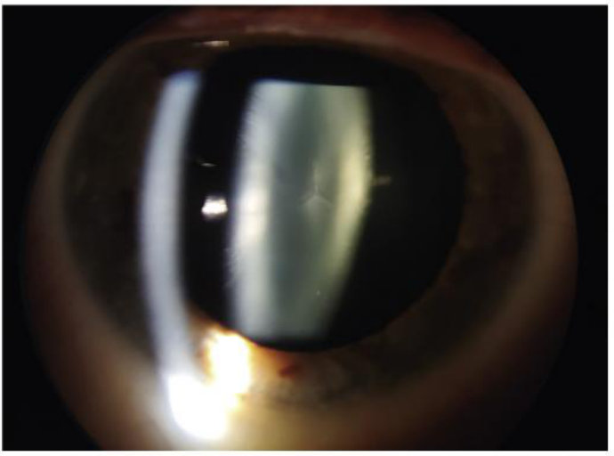
Answer: Figs. 7.8 and 7.9
Red = anterior capsule (bright) · yellow = subcapsular clear zone, newly synthesised cortex (dark) · blue = remodelling zone (bright); behind them the grey zones of the rest of the cortex and the nuclei. Fig. 7.9: the posterior Y suture, seen as an upside-down Y, in the posterior part of the fetal nucleus. TB 7 · p. 100, 102
8 · Zonules
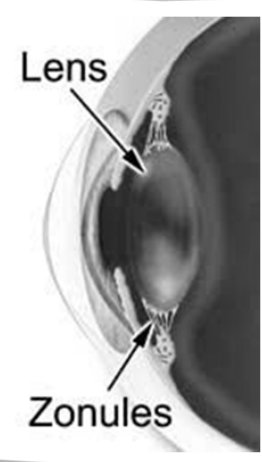
| Feature | Detail |
|---|---|
| Names | zonules (of Zinn) = suspensory ligament of the lens |
| Made of | threadlike microfibrils of extracellular matrix with fibrillin; very extensible, but no true elastic fibres |
| Origin | basement membrane of the nonpigmented ciliary epithelium in the pars plana, and the valleys between the ciliary processes in the pars plicata |
| Insertion | the lens capsule: most at the preequatorial and postequatorial regions, few directly at the equator; they merge with the capsule from the equator to near both poles (zonular lamella) |
| Job | hold the lens in place and transmit the ciliary muscle's pull: their tension keeps the lens flat (unaccommodated) |
TB 7 · p. 98, 102. Your note "attach to the lens at the equator area, some go all the way to the poles · from the ciliary body to the lens capsule" fits; the textbook's refinement is that most fibres attach just in front of and just behind the equator.
9 · Accommodation
Distance (emmetropic eye): ciliary muscle relaxed → ciliary ring wide → zonules stretched → tension on the capsule holds the lens flat, ≈ 20 D. TB 7 · p. 102
Near (classic Helmholtz theory): TB 7 · p. 102–103
| In accommodation | Change |
|---|---|
| Thickness (pole to pole) | increases, in the nucleus; cortex thickness unchanged |
| Equatorial diameter | decreases |
| Anterior surface | curves much more steeply; anterior pole moves forward → anterior chamber shallower |
| Posterior surface | steepens only slightly (and stays steeper than the anterior) |
TB 7 · p. 103. Relaxation reverses it: the ciliary body is pulled back by Bruch membrane's elastic tissue, the ring widens, zonular tension flattens the lens again. Your drawing (thin lens for "emmetrop", round lens for "accommodation") shows the same.
Presbyopia: accommodation nears zero by about 50. The main cause is the lens itself: older fibres resist deformation, the capsule becomes thicker and less elastic, and the growing lens changes the zonules' angle of pull; the ciliary muscle's force does not decrease. TB 7 · p. 103
Beside "posterior cortex" you wrote "fibers that have been already developed". Your notes The textbook says only that the zones behind the nucleus are concave forward and end at the posterior capsule (TB 7 · p. 100). Each fibre runs from the anterior suture to the posterior one (TB 7 · p. 98, 104), so the posterior cortex is made of the same fibres as the anterior cortex and is not older. Treat the note as "already-formed fibres of the cortex", not as a separate fibre type.
Left out because no lecture point or objective asks for them: lens physiology (crystallin chemistry, gap-junction and epithelium–fibre interface details, metabolism, the lens's ionic current), ultraviolet absorption and oxidative stress (glutathione, ascorbate), the lens paradox, the molecular mechanisms of each cataract type (diabetic sorbitol, the cortex–nucleus barrier), the cataract grading system (Fig. 7.11), lens shagreen, vitreous attachments (hyaloid capsular ligament, Wieger ligament, retrolental space), minor zonule types, and from chapter 9 the induction signals, PAX6 and the hyaloid vessels around the fetal lens.
Key facts
≈ 20 D unaccommodated lens power · max accommodation 14 D at 8–12 y → near 0 after 50 y
Thickness 3.6–4.5 mm (mean 4), +0.02 mm/year · diameter 6.5 mm (infant) → 9.0 × 9.7 mm (adult)
Radius of curvature: anterior 8–14 mm · posterior 5–8 mm (posterior steeper)
Refractive index: cortex 1.38 · nucleus 1.41
Capsule: anterior pole 11 → 15 µm · equator ~7 µm · posterior pole ~3.5 µm (thinnest)
Lens placode ~day 27 · lens vesicle ~day 33 · first secondary-fibre layer by week 7 · Y sutures visible month 3
Sutures: 3 branches (fetal Y) → 6–9 (early adulthood) → 9–15 (middle to old age)
Fibre cross-section: hexagon 3 × 9 µm; outer fibre up to 1 cm long
Self-check
Describe, step by step, how the embryonic nucleus forms.
Why does the adult lens have no posterior epithelium?
Where are new lens fibres made, and how does a new fibre take its place around the embryonic nucleus?
Which fibre ends form the anterior suture, and which the posterior?
Name the four lens zones from the centre out, with the fibres each contains.
A patient has an opacity between the anterior upright Y and the posterior inverted Y. Which nucleus is involved? And if it lies along a Y?
Where is the lens capsule thickest and thinnest, and what is it made of?
Compare nuclear, cortical and posterior subcapsular cataracts: location and one clinical feature each.
List, front to back, the slit-lamp zones of the lens.
Where do the zonules arise and insert?
What happens to the ciliary muscle, the zonules and the lens when you look at a near object?
Sources for this chapter: Handout 4 "Intraocular Lens Anatomy" (with your notes) · Slides 4 "Intraocular Lens Anatomy" · Exam guidelines (Review, p. 2, with your typed notes) · Textbook ch. 7, Crystalline Lens, pp. 97–108 · Textbook ch. 9, Ocular Embryology (lens), pp. 140–145.
Uvea: iris, ciliary body and choroid
The vascular middle coat: its landmarks, its vessels, its muscles, and the barrier that keeps the aqueous clear.
The guidelines' objectives for this lecture, word for word. Review 14 · p. 2, 5
- Exam "Identify and describe the landmarks present on the iris" → §2
- Exam "Name the iris and ciliary blood vessels" → §3
- Exam "Discuss how the iris and ciliary blood vessels and the ciliary body epithelium contribute to the blood aqueous barrier and uveitis" → §7
- Exam "Discuss the functions and innervation of the iris and ciliary body muscles" → §4, §6
- Exam "Name and recognize the location and characteristics of the two main parts of the ciliary body" → §5
- Exam "Discuss the vascular patterns of the arteries of the choroid and choriocapillaris" → §8
- Exam "Describe the location of vortex veins draining blood from the choroid" → §8
- Exam "Discuss how Bruch's membrane is involved in age-related macular degeneration" → §9
- Exam Circulation: "Describe the anastomosis that occurs to form the major circle of the iris" → §3 (only the part this lecture covers; the rest of the blood supply is the Circulation topic)
1 · Three regions, front to back
| Region | Where | Main job |
|---|---|---|
| Iris | in front of the lens; its centre opening is the pupil | diaphragm: regulates how much light reaches the retina |
| Ciliary body | ring from the iris root back to the ora serrata | makes the aqueous, part of the blood–aqueous barrier, accommodation |
| Choroid | ora serrata to the optic nerve, between sclera and retina | blood supply to the outer retina |
The uvea is called the vascular layer because its largest part, the choroid, is mostly blood vessels. Handout 5 · p. 1 · TB 5 · p. 62, 68, 75
2 · Iris landmarks
The handout's iris outline runs 1 root · 2 vessels · 4 pupil · 5 posterior epithelium; there is no point 3 in it. The landmarks the guidelines ask for come from the textbook. Handout 5 · p. 1–4
| Landmark | Where / what | Why it matters |
|---|---|---|
| Iris root | peripheral end of the iris, joining it to the front of the ciliary body; goes all the way round (360°). Thinnest part of the iris. Handout 5 · p. 1 · TB 5 · p. 62 | tears away in blunt trauma: iridodialysis (box below) |
| Collarette | circular, jagged, slightly raised ridge ~1.5 mm from the pupil margin; the thickest part of the iris. Attachment site of the fetal pupillary membrane. TB 5 · p. 62 | divides the iris into two zones; the minor circle lies behind it |
| Pupillary zone | from the pupil out to the collarette; holds the sphincter. TB 5 · p. 62, 64 | colour often differs from the ciliary zone |
| Ciliary zone | from the collarette out to the iris root. TB 5 · p. 62 | shows the circular contraction folds |
| Trabeculae | radial columns of collagen; white fibres in light irises. TB 5 · p. 63, 65 | hidden by pigment in brown irises |
| Crypts | oval openings where the anterior border layer is missing: Fuchs crypts either side of the collarette, peripheral crypts near the root. TB 5 · p. 62, 65–66 | let aqueous move quickly in and out of the stroma as the iris changes volume |
| Contraction folds | circular folds on the ciliary zone, made as tissue moves toward the root in dilation. TB 5 · p. 66 | |
| Pupillary ruff (frill) | the pigmented posterior epithelium curls round the pupil margin onto the front; dark serrated ring. Handout 5 · p. 4 · TB 5 · p. 65 | darker than the rest of the iris |
| Posterior surface | fairly smooth: radial contraction furrows (pupillary zone), structural folds of Schwalbe (ciliary zone, continuing as the valleys between ciliary processes), circular folds. TB 5 · p. 66–67 |
Pupil: slightly nasal and inferior to the iris centre. The iris is ~12 mm across and lies like a truncated cone: the pupil margin rests on the lens, in front of the root. TB 5 · p. 62
Four layers, front to back: anterior border layer · stroma + sphincter · anterior epithelium + dilator · posterior epithelium. TB 5 · p. 62

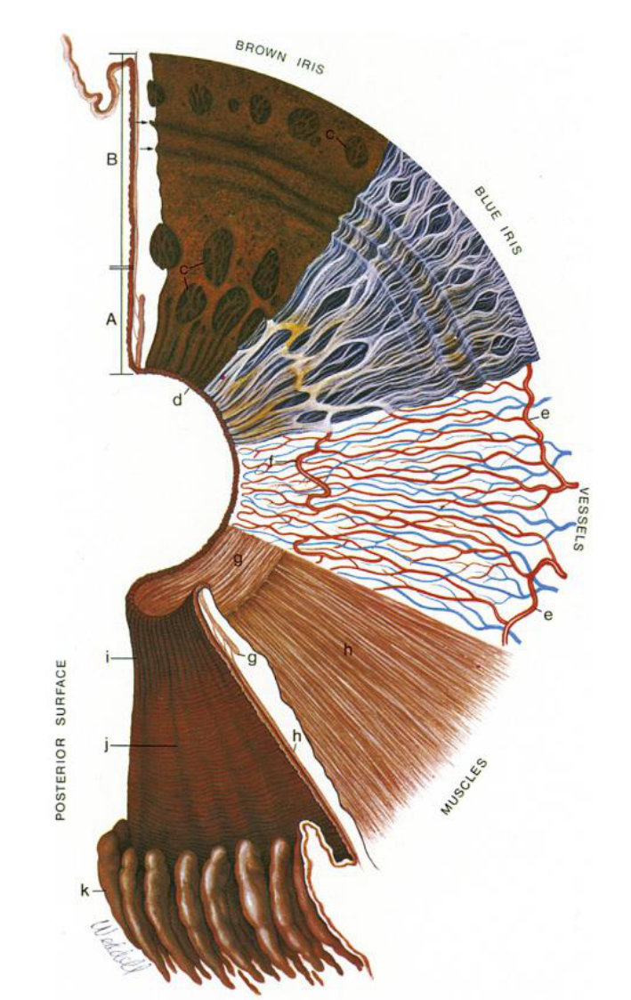
Answer: Fig. 5.1 and Fig. 5.17
Fig. 5.1: the yellowish jagged ring about a third of the way out is the collarette; inside it the pupillary zone, outside it the ciliary zone; the white radial strands are trabeculae; the dark oval holes beside the collarette are crypts.
Fig. 5.17: A pupillary portion · B ciliary portion · arrows: circular contraction furrows · c Fuchs crypts · d pigment ruff · e major arterial circle (in the ciliary body) · f incomplete minor arterial circle · g sphincter muscle · h dilator muscle · i radial contraction furrows · j structural folds of Schwalbe · k pars plicata. Brown iris: dense, matted anterior border layer; blue iris: thinner border layer, trabeculae stand out. TB 5 · p. 69
Iridodialysis: a blow to the eye or head tears the thin iris root from the ciliary body (Fig. 5.5). Vessels and nerves can be damaged: bleeding into the anterior and/or posterior chamber, sector paralysis of the iris muscles. Handout 5 · p. 1 · TB 5 · p. 62
Hyphema: the torn branches from the major circle bleed into the anterior chamber; the blood settles inferiorly (Fig. 5.27). TB 5 · p. 75 · Slides 5 · #3
"So we have to look at the edges of the iris" after trauma. Your notes
3 · Iris and ciliary blood vessels
| Vessel | Where | Characteristics |
|---|---|---|
| Major (arterial) circle of the iris | in the ciliary body stroma, in front of the circular ciliary muscle, near the iris root (pars plicata) TB 5 · p. 63, 70 · TB 12 · p. 197 | formed by the long posterior ciliary arteries + anterior ciliary arteries; supplies the iris and the ciliary body |
| Radial iris vessels | iris stroma, from the root to the pupil margin Handout 5 · p. 2 · TB 5 · p. 63 | branches of the major circle; wrapped in collagen so they do not kink as the iris moves |
| Minor circle of the iris | iris stroma, behind the collarette Handout 5 · p. 2 · TB 5 · p. 64 | incomplete circle, an embryological remnant; capillary arcades run from it toward the pupil |
| Iris capillaries | iris stroma | not fenestrated; endothelium joined by zonula occludens → part of the blood–aqueous barrier Handout 5 · p. 2 · TB 5 · p. 64, 74 |
| Ciliary body capillaries | ciliary stroma, mostly in the ciliary processes, near the pigmented epithelium | fenestrated, large, with wide lumens: leaky, for aqueous production Handout 5 · p. 6 · TB 5 · p. 70 |
How the major circle forms
TB 5 · p. 70, 79 · TB 12 · p. 198 · Fig. 12.8. The branches anastomose with each other and with the anterior ciliary arteries. From the circle: radial vessels → iris; branches → ciliary body.
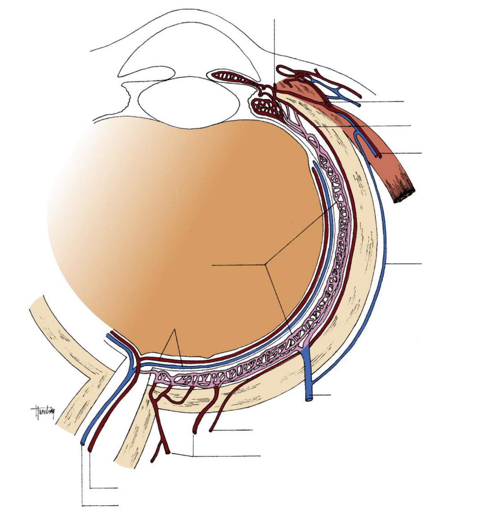
Answer: Fig. 12.8 with labels
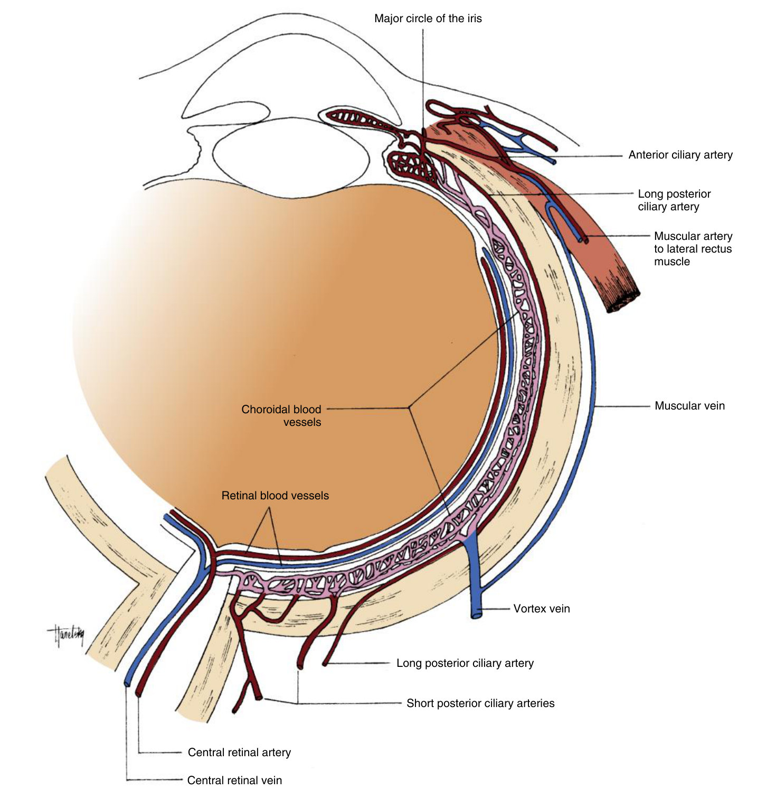
Top, then clockwise: major circle of the iris · anterior ciliary artery · long posterior ciliary artery · muscular artery to lateral rectus muscle · muscular vein · vortex vein · long posterior ciliary artery · short posterior ciliary arteries · central retinal vein · central retinal artery · retinal blood vessels · choroidal blood vessels.
4 · Pupil and iris muscles
The pupil regulates retinal illumination; its diameter is 1–9 mm depending on the light: miotic (very small) in bright light, mydriatic (large) in dim light. Handout 5 · p. 3 · TB 5 · p. 62
| Muscle | Location and fibres | Innervation | Action |
|---|---|---|---|
| Sphincter | smooth muscle, a circular band 0.75–1 mm wide round the pupil, in the stroma of the pupillary zone; cells joined by tight junctions. Keeps working even if cut radially. TB 5 · p. 64 | parasympathetic | constricts the pupil: miosis |
| Dilator | smooth-muscle processes of the anterior iris epithelium (myoepithelial cells), 3–5 layers, radial, from the iris root to below the middle of the sphincter. TB 5 · p. 64 | sympathetic | pulls the pupillary portion toward the root: mydriasis |
Handout 5 · p. 3 · TB 5 · p. 64, 68. In accommodation the sphincter also contracts, cutting spherical aberration (TB 5 · p. 72). The pupillary pathways themselves are chapter 11.
Posterior iris epithelium
A single layer of heavily pigmented columnar cells joined by tight junctions and desmosomes, lining the posterior chamber. The two iris epithelia lie apex to apex. Peripherally it loses its pigment and continues as the inner, nonpigmented ciliary epithelium; the anterior iris epithelium continues as the outer, pigmented one. Handout 5 · p. 4 · TB 5 · p. 64–65, 68
Pupillary ruff: the posterior epithelium seen at the pupil margin as a dark serrated ring (§2). Handout 5 · p. 4 · TB 5 · p. 65
Pigmentary dispersion syndrome: the iris bows backward and its posterior surface rubs on the zonules → pigment is shed into the anterior chamber → deposits on the iris, lens, corneal endothelium (Krukenberg spindle, Fig. 5.18A) or in the trabecular meshwork, where it can block aqueous outflow. On transillumination the red fundus reflex shows through the depigmented spots (Fig. 5.18B). Handout 5 · p. 4 · TB 5 · p. 67, 70 · Slides 5 · #6
"This can cause glaucoma." Your notes (the textbook says only that outflow may be compromised; glaucoma is chapter 6)
5 · Ciliary body: shape and two parts
A ring from the iris root to the ora serrata (≈5.9 mm wide nasally, 6.7 mm temporally). In sagittal section a triangle: base anterior (one corner at the scleral spur, the iris root from its middle), outer side against the sclera, inner side lining the posterior chamber and a little of the vitreous chamber, apex at the ora serrata. Handout 5 · p. 5 · TB 5 · p. 68–69
| Pars plicata (corona ciliaris) | Pars plana (orbicularis ciliaris) | |
|---|---|---|
| Location | anterior | posterior, from the pars plicata to the ora serrata |
| Surface | wider; 70–80 ciliary processes project into the posterior chamber; the valleys between them are the valleys of Kuhnt. A process ≈ 2 mm long, 0.5 mm wide, 1 mm high. | flat |
| Zonules | some attach in the valleys | most arise here (internal limiting membrane) and run forward through the valleys to the lens |
| Other | dense fenestrated capillaries in each process: the big surface for aqueous secretion | the vitreous base reaches ~2 mm over its posterior part |
Handout 5 · p. 5 · TB 5 · p. 69, 73 · Slides 5 · #7–8 (Fig. 5.21A)
Ora serrata: the scalloped border between ciliary body and retina; forward-pointing dentate processes (teeth) with oral bays between. Here the pigmented ciliary epithelium becomes the RPE and the nonpigmented one becomes neural retina. TB 5 · p. 69, 71
Layers, outer to inner: supraciliaris (lets the ciliary body slide on the sclera; fluid or trauma here → ciliary body detachment, Fig. 5.22) · ciliary muscle · ciliary stroma (holds the major circle) · outer pigmented epithelium · inner nonpigmented epithelium. TB 5 · p. 69–70 · Slides 5 · #9

Answer: Fig. 5.20 with labels

Top to bottom on the left: ciliary stroma · ciliary muscle · supraciliaris · pigmented epithelium · nonpigmented epithelium. Brackets: pars plana (flat, posterior) · pars plicata (the processes, anterior).
6 · Ciliary muscle, accommodation and innervation
Smooth muscle in three fibre directions: longitudinal (outer, along the sclera; from the scleral spur to the anterior choroid), radial, and circular (innermost, sphincter-like, near the major circle). Handout 5 · p. 6 · TB 5 · p. 70
Accommodation (near focus)
TB 5 · p. 71–72 · Handout 5 · p. 7. Muscle relaxed → zonules taut, lens thinner → distance vision (the eye "at rest"). Your notes: "zonule more loose, thicker lens" / "lens thinner".
Innervation of the uveal muscles
| Fibres | Route | Supply |
|---|---|---|
| Parasympathetic | from the ciliary ganglion | ciliary muscle, iris sphincter, choroidal vessels |
| Sympathetic | superior cervical ganglion → long ciliary nerves | iris dilator and ciliary muscle |
| Sympathetic | superior cervical ganglion → ophthalmic and short ciliary nerves | choroidal vessels |
| Sensory | nasociliary nerve (ophthalmic division of V) | the whole uvea |
TB 5 · p. 79
Sympathetic effect on the ciliary muscle: the sources differ. The handout: "no clinically significant effect on the ciliary body" Lecture. The textbook: it "likely has an inhibitory effect" TB. Know both; in the exam, lead with the handout's line. Handout 5 · p. 6 · TB 5 · p. 70
7 · Blood–aqueous barrier and uveitis
Zonula occludens is a belt of tight junctions round the apex of each cell; rows of ridges seal the space between cells. A substance cannot pass between such cells; it must go through them. These junctions help form the blood–aqueous and blood–retinal barriers, and disease can break them. TB 1 · p. 8
The ciliary body epithelium produces and secretes the aqueous: diffusion, ultrafiltration and mainly (80–90%) active secretion, chiefly by the nonpigmented layer; ≈2.3 µL per minute. Aqueous outflow is chapter 6. Handout 5 · p. 6–7 · TB 5 · p. 73–74
The barrier, step by step
TB 5 · p. 71, 74 · Handout 5 · p. 6
| Site | Vessels | Seal |
|---|---|---|
| Ciliary body | capillaries fenestrated: leaky | the seal is the inner nonpigmented epithelium, its cells joined by zonula occludens |
| Iris | capillaries not fenestrated; aqueous freely enters the iris stroma through the crypts | the seal is the capillary endothelium, joined by zonula occludens |
Result: plasma has ~200× more protein than aqueous. Low protein = little light scatter = maximum transmission. TB 5 · p. 74
Inflammation breaks the zonula occludens of the nonpigmented ciliary epithelium, so the blood–aqueous barrier fails: immune factors and white cells enter the aqueous → cells and flare in the anterior chamber (Fig. 5.26). With the slit lamp a conical beam in normal aqueous is invisible ("optically empty"); particles scatter the light and make it visible: the Tyndall phenomenon. A lot of whitish material settles inferiorly as a hypopyon. Handout 5 · p. 7 · TB 5 · p. 74 · Slides 5 · #10
Your notes: "protein in the aqueous, like dust in a cinema beam: it shouldn't be there"; uveitis is a painful, red, light-sensitive eye Your notes (the symptoms are not in the textbook chapter).
8 · Choroid: vessels, choriocapillaris, vortex veins
From the ora serrata to the optic nerve, between sclera and retina; mostly blood vessels; feeds the outer retina and takes its waste; ~300 µm thick under the fovea, its thickest point. Handout 5 · p. 8 · TB 5 · p. 75, 77
| Layer (outer → inner) | What it is |
|---|---|
| Suprachoroid lamina (lamina fusca) | thin pigmented bands of connective tissue over the suprachoroidal space, which carries the long posterior ciliary arteries and nerves forward (and drains some aqueous) |
| Choroidal stroma | pigmented, vascular loose connective tissue: the large and medium vessels |
| Choriocapillaris | the capillary bed (below) |
| Bruch membrane | innermost, acellular, fused to the RPE (§9) |
TB 5 · p. 75, 77
Vascular pattern of the arteries
Handout 5 · p. 8 · TB 5 · p. 76, 79. The vessels get smaller as they branch and come closer to the retina.
The handout says the choroidal arteries are branches of the short posterior ciliary arteries. The textbook adds that the short ones supply the posterior pole, while branches of the long posterior ciliary arteries supply the anterior choroid and wedge-shaped nasal and temporal zones; the border between two supplies is a watershed zone, prone to ischaemia. Handout 5 · p. 8 · TB 5 · p. 75, 77, 79
| Choriocapillaris | |
|---|---|
| Structure | single layer of anastomosing, fenestrated capillaries; fenestrations mostly face the retina |
| Lumen | 3–4× an ordinary capillary: 2–3 red cells side by side |
| Arrangement | lobules, each fed from the Sattler layer; the whole choroid fills at once |
| Macula | densest here, and the sole blood supply of the macular area |
| Limit | only in the choroid; it does not continue into the ciliary body |
Handout 5 · p. 8 · TB 5 · p. 76–77
Vortex veins: where the choroid drains
One vortex vein per quadrant at least; they exit the globe ~6 mm posterior to the equator and can be seen with a dilated pupil (Fig. 12.15, 5.32). Choroidal veins have no valves. They drain most of the uvea. Handout 5 · p. 8 · TB 5 · p. 76, 79 · TB 12 · p. 204 · Slides 5 · #14–15

Answer: Fig. 5.29 with labels

Left: retinal pigment epithelium · stroma (bracket). Right, top to bottom: Bruch membrane · choriocapillaris · medium vessels (Sattler) · large vessels (Haller) · suprachoroid · sclera.
9 · Bruch membrane and age-related macular degeneration
Bruch membrane (the basal lamina) is the innermost layer of the choroid, from the optic nerve to the ora serrata. Five layers, outer to inner: basement membrane of the choriocapillaris · outer collagenous zone · elastic layer · inner collagenous zone · basement membrane of the RPE. Filaments of the RPE basement membrane merge with the inner collagenous zone: a tight adhesion of RPE to choroid. Everything going from choroid to retina, and waste going back, must cross it. Handout 5 · p. 9 · TB 5 · p. 77–78
From drusen to vision loss
TB 5 · p. 77–79 · Fig. 5.38
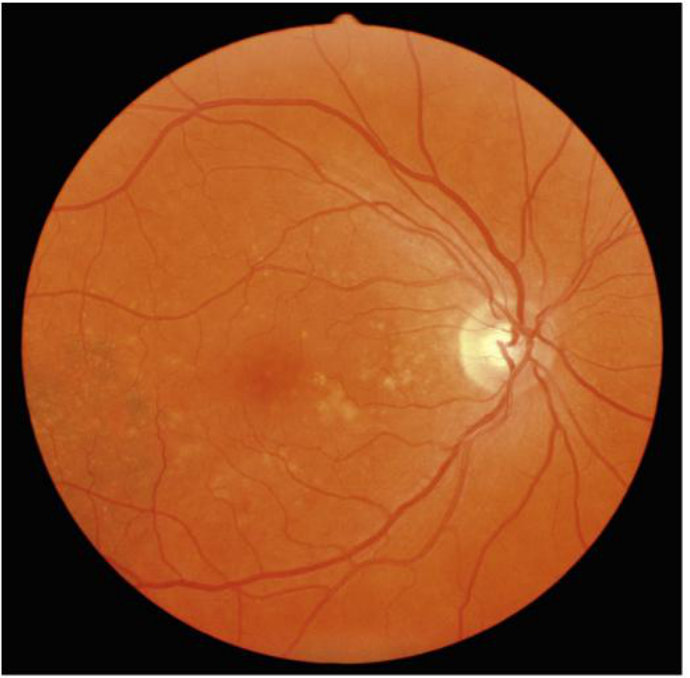
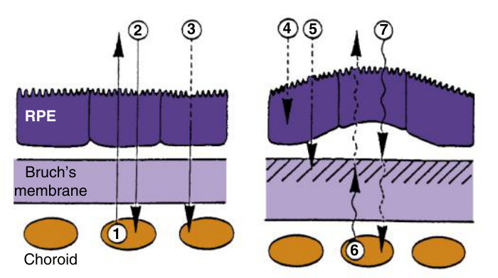
Degeneration of the choroid–retina interface in the macula; the most common cause of blindness in Western countries. Risks: age, genetics, smoking, diet low in antioxidants, Caucasian ethnicity, oxidative damage. TB 5 · p. 78
- Early: drusen and RPE changes.
- Advanced: either geographic atrophy of choroid, RPE and photoreceptors, or neovascularization: drusen keep RPE-made VEGF from reaching the choriocapillaris → ischaemia → more VEGF → fragile new vessels from the choriocapillaris grow under the RPE or through Bruch membrane into the retina, leak and bleed.
- No cure; intravitreal anti-VEGF injections can prevent vision loss from neovascular membranes. No treatment for atrophy yet.
Handout 5 · p. 9 · TB 5 · p. 78–79. The macula depends on the choriocapillaris alone (§8), which is why this is where it shows.
- "Supply sphincter and Müller's: parasympathetic" Your notes: "Müller's" here means the circular ciliary muscle. The textbook chapter does not use that name; it just says the ciliary muscle and sphincter are parasympathetic.
- Vortex veins "minimum 4, up to 10–12" Your notes: the textbook says only "four or more".
- Drusen are "phospholipid build-up" Your notes: the textbook says lipids, cholesterol and proteins. One word on the drusen slide ("build up ___ lipids") cannot be read.
- Fig. 12.15: choroidal vessels show in the first (lightly pigmented) fundus, not in the second (darker) one Your notes. You wrote "cortex vessel" next to it; the figure shows vortex veins, so read it as "vortex".
Left out because neither the handout nor the guidelines ask for it: iris colour and melanocyte studies, clump cells and the cells of the anterior border layer, Michel and Fuchs spurs, synechiae and iris bombé, iridectomy and iridotomy, heterochromia, iris and choroidal nevi, the fine structure of the ciliary muscle (V-shaped bundles, muscle stars), the ion-transport model of aqueous secretion (carbonic anhydrase, aquaporins) and its circadian rhythm, presbyopia research, choroidal lymphatics, AMD supplement trials, ageing changes of the uvea, and the reference list. Aqueous outflow and IOP are chapter 6; the full orbital blood supply is the Circulation topic.
Key facts
3 uveal regions: iris · ciliary body · choroid (front to back)
Pupil 1–9 mm · iris ≈ 12 mm across · collarette ≈ 1.5 mm from the pupil margin · iris root = thinnest, collarette = thickest
Sphincter 0.75–1 mm wide, circular, parasympathetic → miosis · dilator 3–5 layers, radial, sympathetic → mydriasis
70–80 ciliary processes (pars plicata) · valleys of Kuhnt between them · pars plana flat, ends at the ora serrata
Major circle = long posterior ciliary aa. + anterior ciliary aa., in the ciliary body stroma · minor circle incomplete, behind the collarette
Iris capillaries not fenestrated · ciliary and choriocapillaris capillaries fenestrated
Aqueous: active secretion 80–90% · ≈ 2.3 µL/min · plasma protein ≈ 200× aqueous
Choroid ≈ 300 µm under the fovea · Haller (large) → Sattler (medium) → choriocapillaris (single layer, lumen 3–4×)
≥ 4 vortex veins, one per quadrant, exit ≈ 6 mm behind the equator · Bruch membrane: 5 layers
Self-check
Name the iris landmarks from the pupil to the root, and say which is the thinnest and which the thickest part.
What is iridodialysis, why does it happen at that site, and what can follow?
Which arteries form the major circle of the iris, where does it lie, and what does it supply?
Where is the minor circle of the iris, and how is it different from the major circle?
Give the location, fibre direction, innervation and action of the sphincter and the dilator.
How does the blood–aqueous barrier work in the ciliary body, and how in the iris?
What happens to the barrier in uveitis, and what do you see at the slit lamp?
The ciliary muscle contracts. What happens to the zonules, the lens and the focus? Which nerves drive it?
Compare the pars plicata and the pars plana: position, surface, and what attaches.
Describe the arterial pattern of the choroid from the short posterior ciliary arteries inward, and the choriocapillaris.
Where are the vortex veins?
How is Bruch membrane involved in AMD?
Sources for this chapter: Handout 5 "Uveal Tract (Uvea)" (with your notes) · Slides 5 "Uvea: Iris, Ciliary Body, and Choroid" (with your notes) · Exam guidelines (Review 14 · p. 2, 5) · Textbook ch. 5, Uvea, pp. 62–79; ch. 12, pp. 197–199, 204 (major circle, Fig. 12.8, vortex veins); ch. 1, p. 8 (tight junctions).
IOP and the aqueous chambers
Three chambers, the drainage angle, and the two ways aqueous leaves the eye.
- Exam "Compare the three chambers of the globe" → section 1. Review 14 · p. 3
- Exam "Identify the anatomical appearance of the anterior chamber angle structures with gonioscopy" → sections 2 and 3, label drill. Review 14 · p. 3
- Exam "Describe ways that aqueous exits the anterior chamber" → section 5. Your note beside it: conventional and unconventional flow "will be a flow chart!" Be able to draw both routes box by box. Review 14 · p. 3
1 · The three chambers compared
The anterior and posterior chambers hold aqueous humour; the vitreous chamber holds the vitreous gel. TB 6 · p. 82
| Anterior chamber | Posterior chamber | Vitreous chamber | |
|---|---|---|---|
| Contains | aqueous | aqueous; zonule fibres cross it | vitreous body: transparent gel, 98.5–99.7% water, collagen + hyaluronic acid |
| In front | corneal endothelium | posterior iris surface | posterior lens surface and the retrozonular part of the posterior chamber |
| Behind | anterior iris surface + pupillary area of the anterior lens | anterior face of the vitreous | retina and optic disc |
| Periphery | trabecular meshwork, part of the ciliary body, iris root (= the angle) | ciliary body (ciliary processes project into it) and the equatorial lens | pars plana of the ciliary body, then retina |
| Shape · size | centre deeper than periphery | annular (ring) space behind the iris | largest: about 80% of the eye's volume |
| Special parts | the anterior chamber angle, where aqueous leaves | canal of Hannover (among the zonules) · canal of Petit (behind the last zonules, a potential space) | patellar fossa (the dip the lens sits in) · strongest attachment: vitreous base at the ora serrata |
| Job | route of aqueous to the exit | receives the aqueous as it is secreted | holds the retina against the choroid, stores metabolites, absorbs shocks, transmits and refracts light |
TB 6 · p. 82 (anterior) · p. 89 (posterior, Fig. 6.12) · p. 90–92 (vitreous) · Handout 6 · p. 1. Your notes for the boundaries match: corneal endothelium · iris + anterior lens · corneoscleral junction (TM, CB, iris root).
The anterior chamber angle lies at the periphery of the anterior chamber, where corneoscleral and uveal tissue meet. Aqueous exits through it. TB 6 · p. 82 · Handout 6 · p. 2
2 · The angle structures
The aqueous exits through the filtration apparatus: trabecular meshwork + Schlemm canal. With the scleral spur they fill the internal scleral sulcus, a groove at the inner corneoscleral junction. TB 6 · p. 82
| Structure | Location | Made of · features | Function |
|---|---|---|---|
| Scleral spur | posterior edge of the internal scleral sulcus | dense, coarse collagen fibres Handout 6 · p. 2 · TB 6 · p. 83 | posterior part: attachment for the ciliary muscle (longitudinal fibres' tendon); anterior part: TM sheets attach, which widens the trabecular spaces and keeps Schlemm canal open TB 6 · p. 82 |
| Trabecular meshwork (TM) | encircles the anterior chamber, on the inner side of the internal scleral sulcus | avascular; triangular in cross-section: apex at Schwalbe line, base at the scleral spur. Perforated sheets: 3–5 at the apex, branching to 15–20 at the spur. Covered by endothelium continuous with the corneal endothelium; these cells phagocytose debris. | filters aqueous toward Schlemm canal. Its cells are contractile, like smooth muscle; ciliary muscle contraction widens its spaces and lowers outflow resistance TB 6 · p. 82–83 |
| · Uveal meshwork | inner part, facing the anterior chamber | cordlike; attaches to ciliary stroma and longitudinal ciliary muscle, some to the iris root; largest pores | first filter; entry to both outflow routes TB 6 · p. 82, 86 |
| · Corneoscleral meshwork | outer part, toward Schlemm canal | sheetlike; attaches to the scleral spur; pores smaller nearer the canal | narrower filter of the conventional route TB 6 · p. 82, 86 |
| Juxtacanalicular tissue | between the last TM sheet and the endothelium of Schlemm canal | also called the cribriform layer: cells in a matrix of collagen, elastic-like fibres, ground substance | with the canal's inner wall, the site of highest outflow resistance TB 6 · p. 83, 87 |
| Schlemm canal | outer to the TM, anterior to the scleral spur; outer wall against limbal sclera | circular vessel, a venous channel that normally holds aqueous, not blood. Endothelium with tight junctions (like a blood vessel), incomplete basement membrane (like a lymph channel). Internal collector channels (of Sondermann) are blind pouches toward the TM. | lets aqueous pass out of the anterior chamber; aqueous crosses the inner-wall endothelium, mostly by passive diffusion, also through pores and giant vacuoles Handout 6 · p. 3 · TB 6 · p. 83–84, 86–87 |
| External collector channels | around the outer wall of Schlemm canal, about 25–37 | branch from the canal: these vessels are not Schlemm canal itself | empty into the deep scleral plexus, then the intrascleral plexus, then the episcleral veins TB 6 · p. 87 |
| Schwalbe line | anterior end of the TM | the termination of Descemet membrane | anterior landmark of the angle TB 6 · p. 82 |
Where the collector channels drain: the handout says the deep scleral or intrascleral plexus "and then go to the episcleral or conjunctival veins" (Handout 6 · p. 3); the textbook gives the sequence deep scleral plexus → intrascleral plexus → episcleral veins (TB 6 · p. 87). Know both wordings.
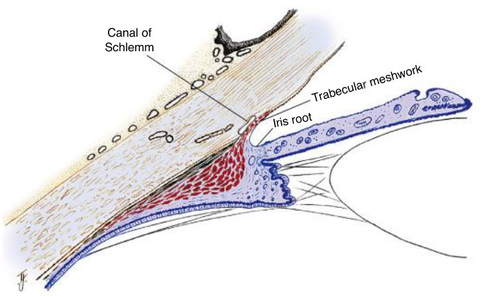
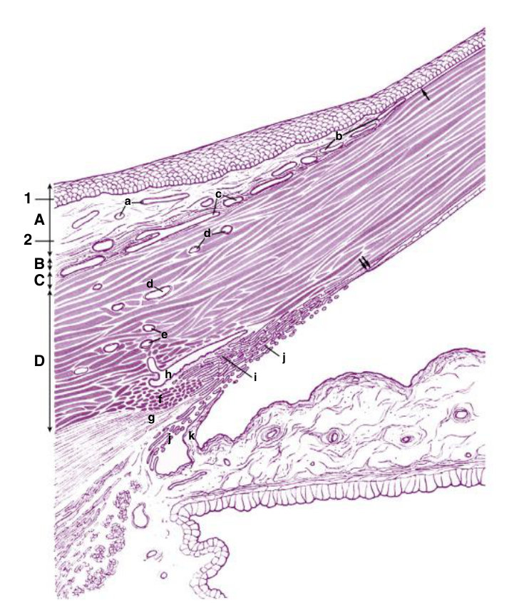
Label the angle in histology

Answer: Fig. 6.3 with labels

Top to bottom: trabecular meshwork · canal of Schlemm · scleral spur · ciliary muscle. The iris is the tissue at lower right with the dark pigmented edge; the cornea runs to the upper right.
3 · Gonioscopy: seeing the angle
The angle cannot be seen directly: the limbus is opaque, and light from the angle does not leave the cornea because of total internal reflection. A gonioscopy lens overcomes it with mirrors (Fig. 6.7), so the examiner can view the angle structures. The view is as if you stood on the lens and looked across the iris to the angle. Angle width is first estimated with the biomicroscope; gonioscopy follows if it looks narrow or outflow is in doubt. Handout 6 · p. 3 · TB 6 · p. 84–85 · Slides 6 · #6–8
Seen with gonioscopy, from posterior (near the pupil) to anterior (toward the cornea). The letters are those of Figs. 6.8 and 6.9, in the same order: TB 6 · p. 85–86
| Structure | How it looks | Your notes |
|---|---|---|
| Iris root | most posterior; peripheral iris running into the angle | "once you find the pupil, then you can follow out" Your notes |
| Ciliary body | band just anterior to the iris root | darker than the iris Your notes |
| Scleral spur | line anterior to the ciliary body | the white line you see is the scleral spur Your notes |
| Trabecular meshwork | its posterior part, where most aqueous is filtered, is mildly pigmented TB 6 · p. 86 | "has fluid in it", more posterior part |
| Schwalbe line | most anterior: the end of Descemet membrane | hard to see Your notes |
| Schlemm canal | lies behind the TM and is generally not visible. If blood backs up into it, a thin red line appears in the TM area (Fig. 6.9). This happens when pressure on the gonioscopy lens compresses the episcleral veins so that episcleral venous pressure exceeds IOP. TB 6 · p. 85–86 | "we do not see" |
In a wide-open angle the whole TM is visible. As peripheral iris approaches the TM the angle narrows and access to the trabecular openings decreases. Pigment or debris clogging the meshwork is visible with gonioscopy. TB 6 · p. 85
Label the angle seen through the gonioscope

Answer: Fig. 6.8 with letters
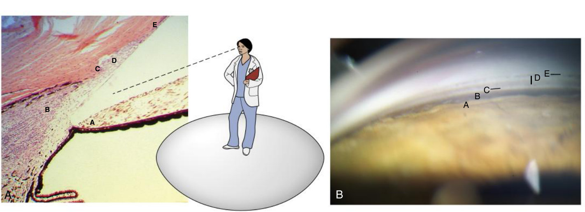
A iris root · B ciliary body · C scleral spur · D trabecular meshwork · E Schwalbe line. The dashed line is the examiner's line of sight across the iris to the angle.

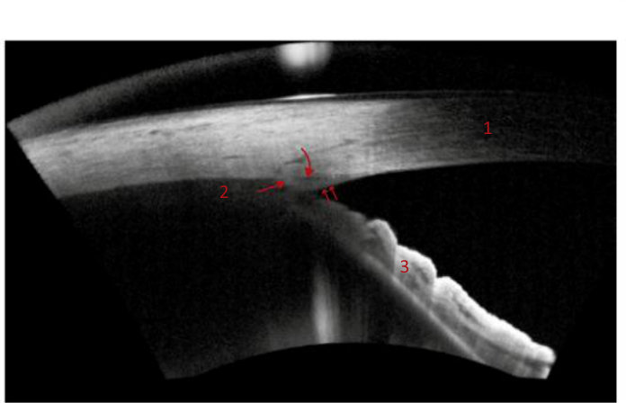
4 · Aqueous: what it does and where it is made
| Point | What the sources say |
|---|---|
| Function | supplies metabolites, mainly oxygen and glucose, to the avascular cornea and lens; carries waste away; its constant volume maintains IOP. TB 6 · p. 85, 87 |
| Production site | pars plicata of the ciliary body: secreted through the epithelium covering the ciliary processes into the posterior chamber. TB 6 · p. 85 |
| Mechanisms | diffusion, ultrafiltration and active secretion (80–90% of production, mostly by the nonpigmented ciliary epithelium). Detail in chapter 5. TB 5 · p. 73 |
| Circulation | between iris and lens, through the pupil into the anterior chamber. There it circulates in convection currents: down along the cooler cornea, up along the warmer iris, out at the periphery. TB 6 · p. 85 |
Handout 6 · p. 4 (II A–B). Your notes agree: "to provide nutrients to the cornea and lens · removes/reduces waste products" · "by pars plicata (hills and valleys) in posterior chamber".
From production to the angle
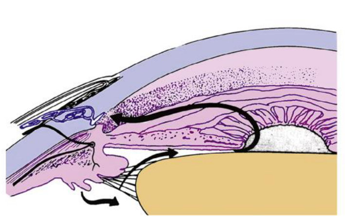
5 · How aqueous exits the anterior chamber: the two routes
There are two routes; both start in the uveal meshwork. TB 6 · p. 86 · Handout 6 · p. 4
Conventional outflow = trabecular flow
TB 6 · p. 86–87 · Handout 6 · p. 3–4. Your note: uveal TM → corneal TM → Schlemm's canal → external collector channels → episclera. Handout end point: episcleral or conjunctival veins.
Unconventional outflow = uveoscleral flow
From the suprachoroidal space, three exits: TB 6 · p. 86
- Supraciliary / suprachoroidal space
- through the sclera → absorbed into the orbital vessels
- into the choroid → anterior ciliary veins and vortex veins
- lymphatic channels in the ciliary stroma
TB 6 · p. 86–87. Slides 6 · #12 shows the route as arrows out through the ciliary body and sclera. Your notes list four exits (sclera · anterior ciliary veins · suprachoroidal collector channel · lymphatic channels); the textbook names three and does not mention a "suprachoroidal collector channel".
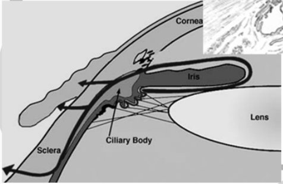
The two routes side by side
| Conventional (trabecular) | Unconventional (uveoscleral) | |
|---|---|---|
| Path | TM → Schlemm canal → collector channels → episcleral veins | uveal TM → ciliary muscle → suprachoroidal space → sclera / choroid / lymphatics |
| Share | the rest | 5–60% of total outflow; decreases with age |
| Pressure | pressure-driven; keeps IOP steady; more variable | fairly constant, not affected by IOP |
| Resistance | mainly at the juxtacanalicular tissue + inner wall of Schlemm canal; rises with pigment or debris in the pores, fewer TM cells, collapse of the canal | little: no continuous epithelium covers the ciliary body where it borders the anterior chamber |
| Ciliary muscle contraction | increases outflow (spaces widen, canal enlarges) | decreases outflow (cycloplegics increase it) |
TB 6 · p. 83, 86–88
6 · Intraocular pressure: the balance
- IOP stays in a narrow range because production = exit (Fin = Fout). TB 6 · p. 87–88
- Production stays fairly constant, so most raised IOP comes from decreased outflow, i.e. raised resistance in the conventional route. TB 6 · p. 87–88
- For understanding only: Fin = (Pciliary capillaries − IOP)·Cin + S (active secretion) and Fout = (IOP − Pepiscleral veins)·Cout + U (uveoscleral). C is facility, the reciprocal of resistance. TB 6 · p. 88
- Normal IOP 10–21 mm Hg; low to mid 20s suspect; upper 20s or higher need close monitoring. Measured with a tonometer (non-contact or Goldmann applanation). TB 6 · p. 88
Raised IOP can damage the retinal nerve fibre layer, mechanically or by reducing perfusion; the loss shows at the optic disc as an enlarged, deeper cup. In glaucoma the raised IOP usually comes from resistance in the conventional route (juxtacanalicular tissue, inner wall of Schlemm canal). Normal-tension glaucoma damages the nerve fibres at normal IOP. TB 6 · p. 88
- Less production: beta-blockers, alpha2 agonists (brimonidine), carbonic anhydrase inhibitors. TB 6 · p. 88
- More conventional outflow: pilocarpine (contracts the ciliary muscle, opens the TM sheets), Rho kinase inhibitors. TB 6 · p. 88–89
- More uveoscleral outflow: prostaglandins, the most effective drugs (remodel the matrix between ciliary muscle bundles); brimonidine also. TB 6 · p. 88–89
Your notes: "we have to understand it pretty well, because of glaucoma" · "different medication for different flow". Your notes
- Unconventional outflow is a "more recent discovery" and "goes backwards" Your notes: the textbook does not say either.
- Handout p. 1, next to the anterior chamber: "space that holds vitreous". The anterior chamber holds aqueous; the vitreous chamber holds the vitreous. TB 6 · p. 82
- Handout p. 3, next to Schlemm canal: "doesn't have blood in it, but vitreous". It holds aqueous, not vitreous. TB 6 · p. 83
Left out because no objective or handout point needs them: TM stem cells; the fine structure of Schlemm canal pores and giant vacuoles; aqueous veins of Ascher; nasal–temporal differences; the Krukenberg spindle; steroid-induced IOP rise; glaucoma surgery; tonometry technique; age and ethnic changes in IOP and the angle. Also most of the vitreous: attachments other than the vitreous base, its zones, Cloquet canal, hyalocytes, collagen and hyaluronic acid distribution, ascorbate and oxygen, liquefaction, posterior vitreous detachment and vitreomacular traction.
Key facts
3 chambers: anterior + posterior (aqueous, joined at the pupil) · vitreous (gel, about 80% of the eye's volume)
Angle order, posterior → anterior: iris root · ciliary body · scleral spur · TM · Schwalbe line
TM: triangle, apex Schwalbe line, base scleral spur · 3–5 sheets at the apex → 15–20 at the spur · uveal = inner, cordlike · corneoscleral = outer, sheetlike
25–37 external collector channels
2 outflow routes · uveoscleral = 5–60% of outflow, pressure-independent
Unconventional exits: 3 (sclera · choroid → anterior ciliary + vortex veins · lymphatics)
Normal IOP 10–21 mm Hg · highest resistance: juxtacanalicular tissue + inner wall of Schlemm canal
Self-check
Give the anterior, posterior and peripheral boundaries of the anterior chamber.
Compare the posterior and vitreous chambers: boundaries and contents.
What is the scleral spur made of, and what attaches to it?
Name the two divisions of the trabecular meshwork and how they differ.
What is Schwalbe line?
Why is a gonioscopy lens needed to see the angle?
List the angle structures seen with gonioscopy, from posterior to anterior. Which one is usually not visible?
Why can a red line appear in the TM during gonioscopy?
Draw the conventional outflow route as a flow chart.
Draw the unconventional outflow route, with its exits.
Where is outflow resistance highest, and why does IOP usually rise?
Where is aqueous made, what does it do, and what is normal IOP?
Sources for this chapter: Handout 6 "Intraocular Pressure (IOP) and Aqueous Chambers" (with your notes) · Slides 6 "IOP and Aqueous Chambers" (with your notes) · Review 14 · p. 3 (objectives and your typed notes) · Textbook ch. 6, Aqueous and Vitreous Humors, pp. 82–92 · TB 5 · p. 73 (aqueous production).
Retina
The neural coat: its cells, its ten layers as the microscope and the OCT show them, its regions, its two blood supplies and its barrier.
The guidelines' objectives for this lecture, word for word. Review 14 · p. 3–4
- Exam "Describe the functions of the RPE" → §2
- Exam "Contrast the types of photoreceptors and under what conditions they are stimulated" → §3
- Exam "Describe the portions of and functions the photoreceptor" → §3
- Exam "Identify the types, functions, and synapses of ganglion cells" → §4
- Exam "Identify each of the ten retinal layers on an OCT" → §5, §6
- Exam "Identify the photoreceptor parts on an OCT" → §6
- Exam "Describe the structures and/or connections found in each of the 10 retinal layers" → §5
- Exam "Describe the position of the macula relative to the disc" → §7
- Exam "Describe the anatomic differences between the fovea and the remainder of the retina, including the relative concentration of photoreceptors and blood vessels" → §7
- Exam "Describe the location, patterns, and structures supplied by the retinal and choroidal blood vessels" → §8
- Exam "Describe how the anatomy contributes to the blood retinal barrier" → §9
- Exam Circulation: "Describe the blood vessels that supply the anterior and posterior choroid (outer retina) and differentiate this from the blood vessels that supply the inner retina" → §8 (only the retinal-versus-choroidal part; the rest of the blood supply is the Circulation topic)
Your typed review notes stress "picture OCT": expect an OCT image to label. Your notes
1 · General retinal anatomy
The retina is the innermost coat, between the choroid and the vitreous, from the edge of the optic disc to the ora serrata. It has two parts from the two layers of the optic cup: the outer retinal pigment epithelium (RPE), stuck firmly to the choroid everywhere, and the neural retina, attached to the RPE only in a ring round the disc and at the ora serrata. It holds the first three neurons of the visual pathway. TB 8 · p. 111
Terms
| Term | Textbook / handout | Your notes |
|---|---|---|
| Macula and fovea | Macula: darker area at the posterior pole for sharpest acuity and colour vision. Fovea: the depression at its centre. Histologists and clinicians use the words differently (§7). TB 8 · p. 111, 128 | central vision |
| Posterior pole | A clinical term for part of the fundus; "no universal agreement" on its definition. TB 8 · p. 128 | posterior portion of the eyeball: retinal blood vessels, macula and optic nerve Your notes |
| Peripheral retina | Most of the retinal area; rods dominate; made for gross form and motion. Central retina: rich in cones and ganglion cells, small, made for acuity. TB 8 · p. 128 | anterior |
| Fundus | The textbook uses the word (the fundus as seen with the ophthalmoscope) but does not define it. | = retina Your notes |
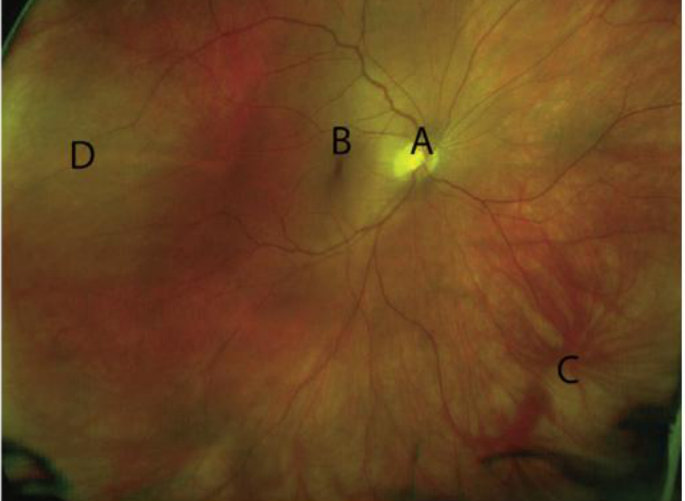
Overview of the retinal pathway
TB 8 · p. 111, 121. Light crosses almost the whole retina before it reaches the outer segments; the neural signal then runs back the opposite way. Horizontal and amacrine cells modify the signal sideways before it leaves the eye.
2 · Retinal pigment epithelium (RPE)
| Feature | Detail |
|---|---|
| Layer | Outermost retinal layer, one cell thick, hexagonal pigmented cells; columnar at the posterior pole, longer, narrower and more densely pigmented in the macula (one reason the macula looks dark); cuboidal toward the ora serrata, where it continues as the pigmented ciliary epithelium. Handout 7 · p. 2 · TB 8 · p. 111 |
| Basal side | Faces the choroid; infolded; its basement membrane is part of Bruch membrane, so the RPE–choroid bond is strong. TB 8 · p. 111 |
| Apical side | Microvilli extend into the photoreceptor layer and envelop the outer segment tips (Fig. 8.2). No junctions join RPE and photoreceptors: only the subretinal (potential) space and the interphotoreceptor matrix hold them together. Handout 7 · p. 2 · TB 8 · p. 111–112 · Slides 7 · #4 |
| Between RPE cells | Zonula occludens + zonula adherens near the apex (terminal bars); desmosomes; gap junctions. TB 8 · p. 111 |
| Clinical | Retinal detachment separates the neural retina from the RPE, the weak, junction-free interface; subretinal fluid cuts the photoreceptors off from the choroid's nutrients. TB 8 · p. 112 |
Functions of the RPE
| Function | How | Your notes |
|---|---|---|
| Blood–retinal barrier | Zonula occludens join the RPE cells; the RPE selectively moves nutrients from the choriocapillaris into the retina (glucose transporters on both sides) and waste (lactate, water) back out. Handout 7 · p. 3 · TB 8 · p. 121–122 Exam | zonula occludens: very tight junction · glucose into the retina, lactic acid + water out |
| Phagocytosis of photoreceptor discs | Shed outer-segment discs are engulfed; many lysosomes; up to 2000 discs per cell daily. Undigested remains build up as lipofuscin. Handout 7 · p. 3 · TB 8 · p. 122 | phagocytosis |
| Metabolises and stores vitamin A | Vitamin A is part of the photopigment; the RPE re-isomerises all-trans-retinol back to 11-cis-retinal for the rods. Handout 7 · p. 3 · TB 8 · p. 122, 125 | vitamin A restored in the RPE and taken up by the photoreceptors |
| Produces growth factors | Secretes VEGF, which keeps the choriocapillaris working; balanced by an antiangiogenic factor (PEDF), because too much VEGF causes neovascularisation. Handout 7 · p. 3 · TB 8 · p. 122 | growth factors help the vessels in the choroid |
| Absorbs light | Melanin granules absorb excess light and reduce scatter. Handout 7 · p. 3 · TB 8 · p. 122 | light absorbed by the pigment in the RPE |
| (textbook's sixth) | Helps form the interphotoreceptor matrix. TB 8 · p. 122 |
Your review notes count "5 main purposes", as the handout does. Your notes
3 · Photoreceptors: rods and cones
Both contain photopigments that are activated by light. What makes a cell a rod or a cone is less its shape than the light level in which it works. Handout 7 · p. 4 · TB 8 · p. 111
| Rods | Cones | |
|---|---|---|
| Stimulated in | dim light: scotopic vision; very sensitive, poor detail, no colour (shades of grey) Exam | bright light: photopic vision; sharp acuity and colour Exam |
| Photopigment | rhodopsin in free-floating discs | one of three: S (blue, 420 nm), M (green, 531 nm), L (red, 588 nm); ≥90% are L or M; S only 5–10% |
| Outer segment | long, uniform; discs separate from the plasma membrane; shed mostly early morning | shorter, often tapering; discs continuous with the membrane; shed at the end of the day |
| Inner segment, fibres | inner and outer segment same width; long thin outer fibre | wider ellipsoid with more mitochondria; short or absent outer fibre, so cone nuclei lie just inside the ELM |
| Synaptic terminal | spherule (round) | pedicle (broad, flat) |
| Number · where | 80–110 million; none in the foveola; densest 20–25° from the fovea | 4–5 million; concentrated in the macula, only cones in the foveal centre |
| Convergence | high: many rods → one ganglion cell (sensitivity to light and motion) | low: down to 1 cone : 1 ganglion cell in the fovea (detail) |
TB 8 · p. 114–115, 121, 123–124, 128–129 · Handout 7 · p. 4. Your notes: rods → dim, cones → bright; cones 420 / 531 / 588 nm.
The six portions, outside in
| Portion | Lies in layer | Contains · function | Your notes |
|---|---|---|---|
| 1 Outer segment | photoreceptor layer, tip in RPE microvilli | stack of membranous discs (600–1000 per rod) holding the visual pigment: converts light into a neural signal TB 8 · p. 113–114 | membranous discs · rhodopsin |
| 2 Cilium | photoreceptor layer | connecting stalk (9 pairs of tubules, no central pair) joining outer and inner segment; conduit for new disc material TB 8 · p. 114 | connecting stalk |
| 3 Inner segment · ellipsoid | photoreceptor layer (outer part) | many mitochondria: energy TB 8 · p. 114 | outer → mitochondria |
| 3 Inner segment · myoid | photoreceptor layer (inner part) | ER and Golgi: protein synthesis (not contractile in humans) TB 8 · p. 114 | closer to the body; ER and Golgi |
| 4 Outer fibre | crosses the ELM | links inner segment to cell body TB 8 · p. 114 | |
| 5 Cell body | outer nuclear layer | nucleus TB 8 · p. 114 | nucleus, DNA |
| 6 Inner fibre | outer plexiform layer | axon ending in a spherule or pedicle that synapses with bipolar and horizontal cells; releases glutamate Handout 7 · p. 5 · TB 8 · p. 114–115 | axon → synapse |
How it works: in the dark the photoreceptor is depolarised (≈ −40 mV) and releases glutamate continuously. Light activates the pigment → cGMP falls → Na⁺ channels in the outer segment close → the cell hyperpolarises (≈ −75 mV) → less glutamate. TB 8 · p. 124–125
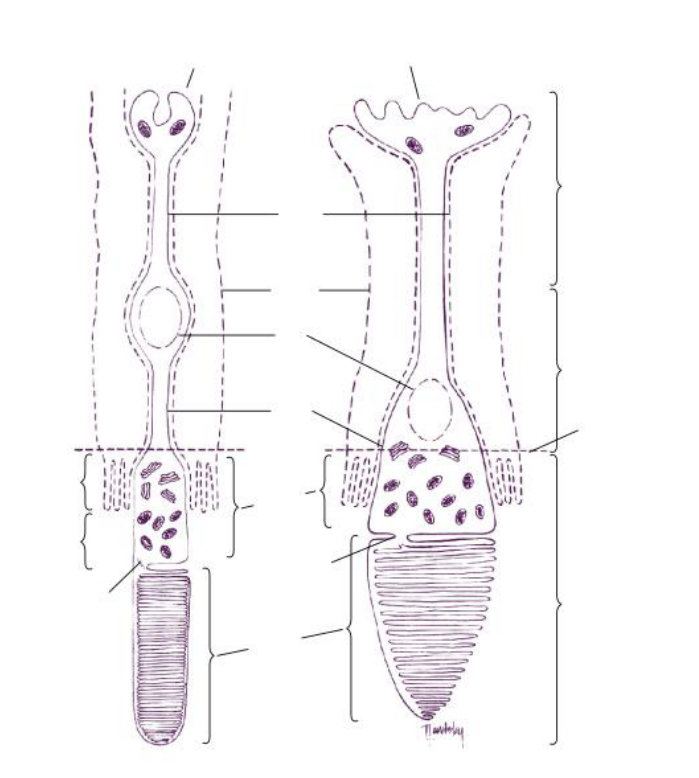
Answer: Fig. 8.4A with labels
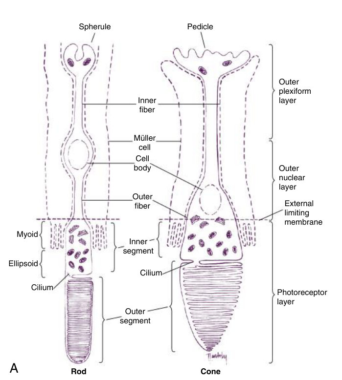
Top down: spherule (rod) · pedicle (cone) · inner fibre · Müller cell (dotted outline) · cell body · outer fibre · external limiting membrane · inner segment: myoid then ellipsoid · cilium · outer segment. Layers, right: outer plexiform · outer nuclear · external limiting membrane · photoreceptor layer.
4 · The other retinal cells
| Cell | Dendrite / input synapses with | Axon / output synapses with | Function · transmitter | Your notes |
|---|---|---|---|---|
| Bipolar (2nd neuron) | photoreceptors + horizontal cells | ganglion + amacrine cells | relays the signal photoreceptor → ganglion; ON and OFF types; glutamate Handout 7 · p. 5 · TB 8 · p. 115, 125–126 | second-order neuron · same synapses |
| Ganglion (3rd neuron) | bipolar + amacrine cells | brain: lateral geniculate nucleus and others (below) | first retinal cell to fire action potentials; axons form the nerve fibre layer and optic nerve; glutamate Handout 7 · p. 6 · TB 8 · p. 117, 126 | third order · bipolar + amacrine |
| Horizontal | photoreceptors, bipolar cells, other horizontal cells (gap junctions); all in the outer plexiform layer | visual integration: inhibitory feedback to photoreceptors, feed-forward to bipolars (centre–surround); modulate cone responses, not rods Handout 7 · p. 7 · TB 8 · p. 118 | photoreceptors, bipolar, horizontal | |
| Amacrine | bipolar axons, ganglion dendrites and cell bodies, other amacrines; all in the inner plexiform layer | modulate the information that reaches the ganglion cells; mostly inhibitory (GABA, glycine); the AII amacrine carries the rod signal to ganglion cells Handout 7 · p. 7 · TB 8 · p. 118, 124, 127 | bipolar, ganglion, amacrine | |
| Müller (glia) | not a signalling cell; spans from the photoreceptor layer (apex) to the inner surface (endfeet = ILM) | structure; absorbs K⁺, neurotransmitters (glutamate, GABA) and metabolic waste; metabolises, synthesises and stores glycogen; wraps vessels and axons Handout 7 · p. 7 · TB 8 · p. 118 | retina wouldn't "work" without them · wraps all blood vessels | |
Two routes through the retina
TB 8 · p. 123, 126–127. Rod bipolars rarely synapse on ganglion cells directly.
Ganglion cell types
| Type | Ends in | Carries |
|---|---|---|
| P cells (P1 = midget) | parvocellular layers of the LGN | cone input, colour, fine detail, high contrast; concentrated centrally; 80% of ganglion cells Handout 7 · p. 6 · TB 8 · p. 116, 123, 126 |
| M cells (parasol) | magnocellular layers of the LGN | movement and flicker; large dendritic trees; poor wavelength sensitivity Handout 7 · p. 6 · TB 8 · p. 116, 123, 126 |
| Intrinsically photosensitive (ipRGC) | hypothalamus (suprachiasmatic nucleus), midbrain (olivary pretectal nucleus), LGN | contain melanopsin: respond to light without photoreceptors (peak ≈480 nm); non-image tasks: circadian rhythm / melatonin, pupillary light response; only 0.3–0.75% of ganglion cells Handout 7 · p. 6 · TB 8 · p. 117 |
The textbook adds a fourth type, koniocellular (blue–yellow), which the handout does not list. TB 8 · p. 116
Where ganglion axons synapse
| Target | Role |
|---|---|
| Lateral geniculate nucleus (≈90%) | vision: parvo (detail, colour) and magno (motion) layers TB 8 · p. 117, 123 |
| Pretectal (olivary) nucleus, midbrain | pupillary reflexes TB 8 · p. 117, 123 |
| Suprachiasmatic nucleus, hypothalamus | circadian rhythm TB 8 · p. 117, 123 |
| Superior colliculus | turning the eyes, head and neck toward a target. The textbook says only "other centres" that drive eye, head and neck movements; the name is in your notes. TB 8 · p. 123 Your notes |
5 · The ten retinal layers
The ten "layers" are really one epithelium plus three layers of cell bodies (nuclear) with their processes and synapses (plexiform) between them. Handout 7 · p. 8 · TB 8 · p. 111, 119
| # | Layer | Structures and connections | Vessels · clinical |
|---|---|---|---|
| 1 | Retinal pigment epithelium (RPE) | one layer of pigmented cells (4–6 million; each serves 30–40 photoreceptors); zonula occludens TB 8 · p. 119 | outer blood–retinal barrier |
| 2 | Photoreceptor layer | outer and inner segments of rods and cones; Müller cell processes between the inner segments TB 8 · p. 119 | avascular |
| 3 | External limiting membrane (ELM) | not a true membrane: zonula adherens between photoreceptors and Müller cells at the inner segments; may restrict large molecules TB 8 · p. 119 | avascular |
| 4 | Outer nuclear layer (ONL) | cell bodies of rods and cones (cone nuclei in one row next to the ELM); thickest in the fovea (~10 rows of cone nuclei) TB 8 · p. 119–120 | avascular |
| 5 | Outer plexiform layer (OPL) | inner fibres of rods and cones; synapses of spherules and pedicles with bipolar dendrites and horizontal cells (cone triads); middle limiting membrane; Henle fibre layer at the fovea TB 8 · p. 120, 129 | fed by both retinal and choroidal circulation; the middle limiting membrane marks the edge of the retinal vessels |
| 6 | Inner nuclear layer (INL) | cell bodies of horizontal, bipolar, amacrine and Müller cells (and displaced ganglion cells) TB 8 · p. 120 | deep (and middle) capillary plexus at its outer and inner edges · dot/blot haemorrhages |
| 7 | Inner plexiform layer (IPL) | synapses of bipolar axons with ganglion dendrites (2nd → 3rd neuron) and with amacrine processes; amacrine–ganglion and amacrine–amacrine synapses TB 8 · p. 120 | |
| 8 | Ganglion cell layer (GCL) | ganglion cell bodies; usually one cell thick, 8–10 near the macula; displaced amacrines, glia TB 8 · p. 120 | superficial capillary plexus |
| 9 | Nerve fibre layer (NFL) | ganglion cell axons running parallel to the surface to the disc (unmyelinated); thickest at the disc margin; papillomacular bundle from the macula (chapter 12) TB 8 · p. 120 | superficial vessels; radial peripapillary capillaries · flame haemorrhages |
| 10 | Internal limiting membrane (ILM) | innermost boundary: Müller cell endfeet + basement membrane; vitreous fibres may fuse with it; astrocytes replace Müller cells at the disc TB 8 · p. 120 | retinal sheen |
Handout 7 · p. 8–9 · Slides 7 · #3, #8, #13–14. Your notes match the table: photoreceptor layer = outer + inner segments, Müller cells · ONL thickest in fovea · INL: horizontal, bipolar, amacrine, Müller, deep vessels · GCL thickest around the fovea · NFL: superficial vessels, ganglion axons, thickest round the disc · ILM: innermost, Müller cells.

Answer: Fig. 8.8 with labels

Left, top down: internal limiting membrane · nerve fibre layer · ganglion cell layer · inner plexiform · inner nuclear · outer plexiform · outer nuclear · external limiting membrane · photoreceptor layer · retinal pigment epithelium. Right: ganglion cell · amacrine cell · horizontal cell · bipolar cell · rod · cone.
Retinal haemorrhages take the shape of the layer they bleed into. In the NFL, blood spreads along the parallel axons: a feathery flame-shaped haemorrhage (from the radial peripapillary or superficial plexus). In the INL, where cells are stacked vertically, it stays round: a dot or blot haemorrhage (middle or deep plexus). Both are seen in diabetic retinopathy (Fig. 8.32). Handout 7 · p. 9 · TB 8 · p. 133–134 · Slides 7 · #11

Retinal sheen: reflections from the ILM, glistening round the macula and vessels in young people (Fig. 8.12), fading with age. Handout 7 · p. 9 · TB 8 · p. 121 · Slides 7 · #12, #19
6 · The layers on OCT
Optical coherence tomography uses light waves to take a non-invasive cross-sectional image of the eye's tissues: a 3-D map of the retina and optic nerve head that can measure the thickness of single retinal layers. OCT angiography detects moving blood and images the retinal and choroidal vessels without dye. TB 1 · p. 4
Reading rule: layers of axons and synapses are hyperreflective (bright); layers of nuclei are hyporeflective (dark). The ILM is a thin line brighter than the NFL. TB 8 · p. 121 Your notes: "synapses = lighter, nucleus = darker". Your notes
| Histological layer | On OCT (Fig. 8.13), vitreous at the top | Bright / dark |
|---|---|---|
| 10 ILM | internal limiting membrane: first thin line under the vitreous | bright |
| 9 NFL | nerve fibre layer, thicker toward the disc | bright |
| 8 GCL | ganglion cell layer | dark |
| 7 IPL | inner plexiform layer | bright |
| 6 INL | inner nuclear layer | dark |
| 5 OPL | outer plexiform layer | bright |
| 4 ONL | outer nuclear layer: the thick dark band, thickest under the fovea | dark |
| 3 ELM | external limiting membrane: the dimmest of the four outer lines | bright (faint) |
| 2 Photoreceptor layer | ellipsoid zone (inner segment mitochondria) and interdigitation zone (outer segment tips meeting RPE microvilli) | bright, bright |
| 1 RPE | RPE/Bruch complex: the most posterior bright band; choroid below | bright |
TB 8 · p. 121 · Slides 7 · #15–16. The textbook says the exact histology of the outer bands is still somewhat uncertain.
Photoreceptor parts on OCT
TB 8 · p. 121. Your review notes: "3 bright lines at the bottom: RPE, outer segment, inner segment (ellipsoid); dim line: external limiting membrane". At the fovea the elongated cone outer segments push the bands down: the fovea externa (TB 8 · p. 129).
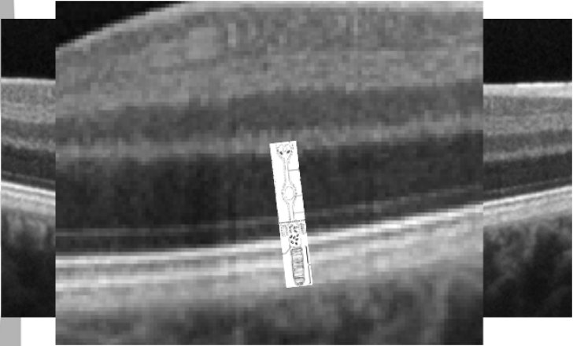

Answer: Fig. 8.13 with labels

Left, top down: vitreous · external limiting membrane · ellipsoid zone · interdigitation zone · RPE/Bruch complex. Right, top down: internal limiting membrane · nerve fibre layer · ganglion cell layer · inner plexiform layer · inner nuclear layer · outer plexiform layer · outer nuclear layer. Bottom: fovea externa.
On the slides the same scan comes back with pathology: the vitreous pulling on the fovea (vitreomacular traction, "pulled away") and macular oedema (Fig. 8.27). Slides 7 · #17–18 · TB 8 · p. 120–121, 129
7 · Retinal regions
| Region | Facts |
|---|---|
| Macula (lutea) | Darker area of the central retina, ~5.5 mm across (includes fovea, parafovea, perifovea). Dark because its RPE cells are taller and more pigmented and the choroid / choroidal capillary bed is thicker under it. Yellow hue from xanthophyll pigments, lutein and zeaxanthin, most concentrated here; they filter short-wavelength light, reducing chromatic aberration, and may be antioxidant. Handout 7 · p. 11 · TB 8 · p. 128 |
| Fovea (centralis) | Shallow depression in the centre of the macula, ~1.5 mm across. Bipolar and ganglion cells displaced laterally; rod-free; capillary-free. Its wall is the clivus, its floor the foveola. Handout 7 · p. 12 · TB 8 · p. 128–129 |
| Ora serrata | Peripheral end of the retina, ~5 mm anterior to the equator, scalloped (bays and dentate processes), ~2 mm wide; reaches further forward medially. Firm retina–vitreous attachment (the vitreous base). Neural retina continues as the nonpigmented, RPE as the pigmented ciliary epithelium. Handout 7 · p. 12 · TB 8 · p. 130 |
| Optic disc (optic nerve head) | Where ganglion axons gather and leave the eye; where the central retinal artery enters (just nasal of centre) and the central retinal vein exits. 1.7 mm horizontal × 1.9 mm vertical (slightly tall). Only NFL + ILM: no photoreceptors, so it is the physiologic blind spot; paler because there is no RPE. The physiologic cup is a central depression that varies a lot in size and depth. Handout 7 · p. 13 · TB 8 · p. 130, 132 |
Where the macula lies relative to the disc
- Textbook: the macula's centre is about 3.5 mm lateral (temporal) to the edge of the disc and about 1 mm inferior to the centre of the disc. TB 8 · p. 128 Exam
- Handout: puts "1 mm inferior to the center of the disc" under the fovea. Same point, since the fovea is the macula's centre: know both wordings. Handout 7 · p. 12
- "A little inferior and temporal, 17°" Your notes: the angle is not in the textbook chapter.
The fovea against the rest of the retina
| Fovea / foveola | Rest of the retina | |
|---|---|---|
| Photoreceptors | cones only in the centre (rod-free zone 0.35–0.7 mm, ≈1° of field); highest cone density, 164,000–300,000 / mm²; thin, elongated, rod-like cone outer segments | rods outnumber cones; rods densest 20–25° out; both fall off toward the ora serrata; periphery rod-dominated |
| Blood vessels | foveal avascular zone, 0.4–0.7 mm: no retinal capillaries, so light reaches the photoreceptors unobstructed; fed from the choroid alone | retinal capillary plexuses in the inner layers; few vessels in the far periphery |
| Inner layers | INL and GCL pushed aside onto the foveal walls; cone axons run obliquely as the Henle fibre layer; foveola has only RPE, photoreceptors, ELM, ONL (~10 rows of cone nuclei), Henle fibres, ILM | all ten layers; parafovea has the most bipolar and ganglion cells (INL up to 12, GCL up to 9 cells thick) |
| Wiring | ≈1 cone : 1 ganglion cell → detail and colour | high rod : ganglion ratio → sensitivity to light and motion, poor form |
| Thickness | foveola 0.13–0.23 mm | 0.18 mm at the equator, 0.11 mm at the ora serrata |
TB 8 · p. 121, 128–130 · Slides 7 · #20–22. Your notes: "only photoreceptors, no bipolar, ganglion or horizontal cells · not any blood vessels · squeezed photoreceptors" (on the OCT of Fig. 8.25).
What the histologist calls the fovea the clinician calls the macula; the histologist's foveola is the clinician's fovea. Clinically the macula is the darker area about the size of the disc, and the fovea its very centre. TB 8 · p. 128
8 · Blood supply: retinal and choroidal
| Inner retina | Outer retina (photoreceptors) | |
|---|---|---|
| Supplied by | central retinal artery (branch of the ophthalmic artery) Handout 7 · p. 14 · TB 8 · p. 132 · TB 12 · p. 195 | choroid (choriocapillaris); nutrients diffuse through Bruch membrane and the RPE Handout 7 · p. 14 · TB 8 · p. 132 |
| Layers | inner layers, ILM to INL; the OPL is fed by both TB 8 · p. 132 | everything outer to the OPL is avascular Handout 7 · p. 14 · TB 8 · p. 132 |
| Pattern | enters at the disc → superior and inferior branches → each nasal and temporal; nasal branches run straight to the ora, temporal ones arch round the macula; end in capillary arcades ~1 mm from the ora TB 8 · p. 132–133 | posterior choriocapillaris from the short posterior ciliary arteries (retina back to the equator); anterior choriocapillaris from recurrent branches of the long posterior ciliary arteries and the anterior ciliary arteries (retina from the equator forward) TB 12 · p. 197 · TB 5 · p. 79 |
| Vessel wall | unfenestrated endothelium with zonula occludens, pericytes; end vessels (no anastomoses); autoregulated, no autonomic control TB 8 · p. 133 | choriocapillaris fenestrated; choroid autonomically innervated TB 8 · p. 133 |
| Flow | ≈60 mL/min/100 g | ≈2000 mL/min/100 g: oxygen must diffuse to the inner segments TB 8 · p. 128 |
| Drains to | central retinal vein, exits at the disc Handout 7 · p. 13 | vortex veins (chapter 5 §8) |
Three capillary networks of the retinal circulation
| Plexus | Layer | Pattern |
|---|---|---|
| Radial peripapillary capillary plexus | nerve fibre layer | radial round the disc, parallel to the axons; densest superotemporal and inferotemporal, where the NFL is thickest |
| Superficial capillary plexus | ganglion cell layer | long vessels from the superior and inferior arcades |
| Deep capillary plexus | edges of the inner nuclear layer (textbook splits it into a middle plexus at the inner edge and a deep one at the outer edge) | lobular vortexes |
Handout 7 · p. 14 · TB 8 · p. 132 · Slides 7 · #21, #25. A capillary-free zone 0.15 mm wide surrounds each retinal vessel (TB 8 · p. 133). Your notes put the superficial plexus in the GCL with "(AI check)": the textbook confirms it.
The two routes from the ophthalmic artery
TB 8 · p. 132 · TB 12 · p. 195, 197 · TB 5 · p. 79
Cilioretinal artery
Enters the retina from the temporal edge of the disc but comes from the choroidal (ciliary) circulation, not the central retinal artery; it supplies the macular area. Present in 15–20% of people (handout and TB ch. 8); TB ch. 12 quotes studies giving 15–50%. Handout 7 · p. 15 · TB 8 · p. 133 · TB 12 · p. 198 · Slides 7 · #23, #26
When the central retinal artery is blocked the inner retina loses its supply. A cilioretinal artery, fed from the choroid, keeps the macula alive, so central vision can be spared. Handout 7 · p. 15 · TB 8 · p. 133 · TB 12 · p. 198
On slide 27 you circled the area between disc and macula and wrote "normal retina"; this is probably the zone a cilioretinal artery kept supplied. The slide has no caption, so check it with your teacher. Your notes Slides 7 · #27
9 · Blood–retinal barrier
Zonula occludens is a belt of tight junctions round the apex of each cell; rows of ridges seal the space between cells. A substance cannot pass between such cells; it must go through them. These junctions help form the blood–retinal and blood–aqueous barriers, and disease can break them. TB 1 · p. 8
The barrier keeps plasma components that would block light out of the retina. TB 8 · p. 133
Outer barrier (choroid side)
Inner barrier (retinal vessels)
TB 8 · p. 133–134 · Handout 7 · p. 3. Supporting players: astrocytes round the retinal vessels are part of the barrier (TB 8 · p. 119); Müller cells wrap the vessels (TB 8 · p. 118). The ELM's zonula adherens is only a possible barrier to large molecules, not a tight seal (TB 8 · p. 119). Your review notes: "choroid vessels are fenestrated · RPE has tight junctions, zonula occludens".
- Ganglion axons synapse with the "optic radiation" Your notes: not right. Ganglion axons end in the lateral geniculate nucleus (and pretectal nucleus, hypothalamus, colliculus); the optic radiation is the next stage, leaving the LGN for the cortex (chapter 12). TB 8 · p. 117
- Fig. 8.20: you labelled the vessel at C "short ciliary nerve" and the area at D "long ciliary nerve" Your notes. The textbook's caption says C is a vortex vein and D a ciliary nerve. TB 8 · p. 128
- "2–80 photoreceptors for 1 horizontal cell" Your notes: the first number is hard to read and the textbook gives no such range for horizontal cells. Its numbers: an HIII horizontal cell contacts 9–12 cones in the macula and 20–25 in the periphery; a rod bipolar cell contacts 15–20 rods centrally and up to 80 peripherally. TB 8 · p. 116, 118
- Cup-to-disc ratios "6/10" and "2/10" on the two discs of slide 23, "have to watch the cup is not getting bigger", "with glaucoma bigger cup" Your notes. The textbook: normal cups vary widely (Fig. 8.29); the cup enlarges with age, which must be considered when assessing the disc for glaucoma. TB 8 · p. 132, 135 · Slides 7 · #23
- "A yellowish macula is normal, not like 'staining', that is not normal" Your notes: the textbook covers only the normal yellow pigment.
- Lamina cribrosa "little holes … just there, not good or bad" Your notes: the textbook says its openings can be seen through the nerve fibres in some people, especially with a deep cup (Fig. 8.28). TB 8 · p. 130–131
- You wrote "(AI check)" beside three points; the textbook confirms all three: the myoid holds ER and Golgi for protein synthesis (TB 8 · p. 114); amacrine cells take bipolar input and pass it to ganglion cells (TB 8 · p. 118); the superficial plexus lies in the GCL (TB 8 · p. 132).
- "Kljukasta arterija" (hook-shaped artery) beside the cilioretinal artery Your notes: fits the textbook's picture of the vessel looping out of the temporal disc edge. TB 12 · p. 198 (Fig. 12.7)
Left out because neither the handout nor the guidelines ask for them: the RPE ion-transport model (Fig. 8.14), the many bipolar subtypes (midget, diffuse, blue, giant), horizontal subtypes HI–HIII, amacrine subtypes (A17, A18), the details of phototransduction, ON/OFF pathways and sublaminae, receptive fields, light and dark adaptation, retinal metabolism, the electroretinogram, inherited degenerations (retinitis pigmentosa, Stargardt), papilledema, parafoveal/perifoveal measurements, aging changes, Alzheimer disease and the reference list.
Key facts
10 layers: RPE · photoreceptor · ELM · ONL · OPL · INL · IPL · GCL · NFL · ILM (1 epithelium + 3 nuclear layers + plexiform layers between)
3-neuron chain: photoreceptor → bipolar → ganglion (rods: 4, via AII amacrine) · transmitter all three: glutamate
5 RPE functions: barrier · phagocytosis · vitamin A · growth factors (VEGF) · light absorption
6 photoreceptor portions: outer segment · cilium · inner segment (ellipsoid + myoid) · outer fibre · cell body · inner fibre
Cones 420 / 531 / 588 nm (S / M / L) · ipRGC ≈480 nm · rods 80–110 million, cones 4–5 million
4 bright outer OCT bands: ELM (dimmest) · ellipsoid · interdigitation · RPE/Bruch
Macula centre 3.5 mm temporal to the disc edge, 1 mm inferior to the disc centre · macula ~5.5 mm · fovea ~1.5 mm · foveola ~0.35 mm · rod-free zone 0.35–0.7 mm · foveal avascular zone 0.4–0.7 mm
Disc 1.7 × 1.9 mm (horizontal × vertical) · ora serrata 5 mm anterior to the equator
3 retinal capillary networks: radial peripapillary (NFL) · superficial (GCL) · deep (INL) · avascular outer to the OPL
Cilioretinal artery: 15–20%, temporal disc edge, choroidal origin · ≈90% of ganglion axons go to the LGN
Self-check
List the functions of the RPE and give one structural fact behind each.
Contrast rods and cones: light level, pigment, terminal, distribution and convergence.
Name the six portions of a photoreceptor from the RPE inward, with the layer each lies in and its job.
What are the three ganglion cell types in the handout, where does each project, and what does each carry?
With what does a ganglion cell's dendrite synapse, and where? Its axon?
Which cell bodies are in the ONL, the INL and the GCL? Which synapses are in the OPL and the IPL?
What are the ELM and the ILM made of?
On an OCT, which layers are bright and which dark, and what are the four bright outer bands from the RPE inward?
Where is the macula relative to the optic disc?
How does the fovea differ from the rest of the retina in photoreceptors, inner cells and blood vessels?
Which vessels supply the inner and the outer retina, and where is the border? Name the three retinal capillary networks.
What is a cilioretinal artery and why does it matter in central retinal artery occlusion?
Explain the two parts of the blood–retinal barrier.
A fundus shows a feathery haemorrhage near the disc and round spots elsewhere. In which layers is the blood?
Sources for this chapter: Handout 7 "Retina" (with your notes) · Slides 7 "Retina" (with your notes) · Exam guidelines (Review 14 · p. 3–4, with your typed notes) · Textbook ch. 8, Retina, pp. 111–135; ch. 12, pp. 195, 197–198 (central retinal artery, Fig. 12.5, cilioretinal artery); ch. 5, p. 79 (choroidal arteries); ch. 1, pp. 4 (OCT) and 8 (tight junctions).
The orbit: bones, walls and openings
Seven bones, four walls, and what passes through each hole between them.
- Exam "Draw and label the bones that contribute to each of the orbital walls." Your note beside it: "pyramide zeichnen können" (be able to draw the pyramid). Your notes Guidelines · p. 4
- Exam "Describe the landmarks associated with each orbital bone, as well as the structures that are associated with each landmark." Guidelines · p. 4
- Exam "List the nerves and blood vessels that travel within each of the canals, foramen, and fissures of the orbit." Guidelines · p. 4
Sections 2–3 answer the first, section 2's landmark table the second, section 4 the third.
1 · A four-sided pyramid of seven bones
- The orbit is a four-sided pyramid: the base is the anterior orbital margin, the apex is posterior, inside the skull. Four walls: roof, floor, medial wall, lateral wall. TB 10 · p. 163
- The two medial walls are roughly parallel; the two lateral walls, extended backwards, meet at about 90° (Fig. 10.6). TB 10 · p. 163 · Slides 8 · #2
- Widest part about 1.5 cm behind the margin ("pear shaped"). The floor reaches only about two-thirds of the depth; the other three walls reach the apex. TB 10 · p. 163
- Seven bones: frontal, maxillary, zygomatic, sphenoid, ethmoid, palatine, lacrimal. The frontal, sphenoid and ethmoid are single bones shared by both orbits. TB 10 · p. 163 · Handout 8 · p. 1

The sphenoid: one bone, three orbital parts
| Part | Where | In which wall | Opening it makes |
|---|---|---|---|
| Body | midline, base of the cranium; holds the sphenoid sinus and the pituitary fossa (sella turcica) | medial wall, at the back | optic canal (with the lesser wing) |
| Lesser wing | from the front of the body; smaller and higher than the greater wing; joined to the body by roots (struts) | roof, at the back | optic canal (gap to the body) · superior orbital fissure (gap to the greater wing) |
| Greater wing | from the sides of the body | lateral wall, at the back | superior orbital fissure · foramen rotundum, ovale, spinosum lie in it |
TB 10 · p. 159, 162, 168–169 · Fig. 10.3, 10.5 (Slides 8 · #3–4). Your note: the sphenoid "looks like a butterfly and the smaller one is the lesser wing". Your notes
How to draw it
The lecture drew the orbit as a pyramid seen from the front (your sketch, handout p. 1): Your notes
- A large rectangle = the orbital margin (base). A small square in the middle = the apex.
- Join the corners: four trapezoids. Top = roof, bottom = floor, outer side = lateral wall, nasal side = medial wall.
- Fill in the bones from front (outer) to back (inner) with the table below; mark the openings: optic canal at the apex, superior orbital fissure between roof and lateral wall, inferior orbital fissure between floor and lateral wall.
Handout 8 · p. 1 · bones and openings from TB 10 · p. 163–166
2 · Wall by wall
| Wall | Shape | Bones, front → back | Landmarks | On the other side |
|---|---|---|---|---|
| Roof | triangle | orbital plate of the frontal bone (most) · lesser wing of the sphenoid (small, posterior) | fossa for the lacrimal gland · trochlea · supraorbital notch · supratrochlear notch | anterior cranial fossa (frontal lobe); the plate is thin here · frontal sinus in front |
| Floor | triangle | orbital plate of the maxilla (largest, medial) · orbital plate of the zygomatic (lateral) · orbital process of the palatine (small, at the very back) | inferior orbital fissure · infraorbital groove → canal → foramen · site of the blow-out fracture | maxillary sinus (its roof is the 0.5–1 mm orbital plate of the maxilla) |
| Lateral wall | roughly triangle | zygomatic bone (front) · greater wing of the sphenoid (back) | superior orbital fissure · inferior orbital fissure · zygomatic foramina · lateral orbital (Whitnall) tubercle | temporal fossa (zygomatic) · middle cranial fossa (greater wing) |
| Medial wall | rectangle | frontal process of the maxilla · lacrimal bone · orbital plate of the ethmoid (most) · body of the sphenoid (back) | fossa for the lacrimal sac (anterior + posterior lacrimal crests) · optic canal at the back · anterior and posterior ethmoidal canals (at the junction with the roof) | ethmoid air cells; the ethmoid plate is "paper thin" (lamina papyracea): the thinnest wall |
TB 10 · p. 163, 165–166, 169 · Handout 8 · p. 3–6. Floor medial/lateral/posterior: your annotations, consistent with Fig. 10.7.
Where the walls meet: roof / lateral wall: superior orbital fissure (back), frontozygomatic and frontosphenoidal sutures (front) · floor / lateral wall: inferior orbital fissure · roof / medial wall: frontoethmoidal suture, with the ethmoidal canals. TB 10 · p. 165–166
Handout vs textbook: the handout lists the optic canal under the medial wall's body of the sphenoid; the textbook describes it in the roof, between the lesser wing and the body. Both are right: it sits at the apex, where the two meet. The handout names the medial-wall bone "maxilla"; the textbook specifies its frontal process. Handout 8 · p. 6 · TB 10 · p. 163, 165
Landmarks: which bone, what is there
| Landmark | Wall · bone | What it is / what it holds | Your notes |
|---|---|---|---|
| Fossa for the lacrimal gland | roof · frontal | indentation behind the lateral part of the superior margin; holds the lacrimal gland TB 10 · p. 163 | "deep on the bone" |
| Trochlea | roof · frontal | U-shaped cartilage (not bone) attached about 2 mm behind the superomedial margin; the tendon of the superior oblique runs through this pulley TB 10 · p. 163 | "super orbital muscle": the textbook says superior oblique |
| Supraorbital notch | roof · frontal (superior margin) | just medial to the centre of the superior margin; supraorbital nerve and vessels; closed into a foramen in 27–52% TB 10 · p. 167 | "supraorbital nerve + vessels" |
| Supratrochlear notch | roof · frontal (superomedial corner) | shallow groove; supratrochlear nerve and vessels TB 10 · p. 167 | "supratrochlear nerve + vessel" |
| Inferior orbital fissure | between floor and lateral wall | gap to the pterygopalatine and temporal fossae (section 4) TB 10 · p. 163, 169 | "separation between floor and lat. wall" |
| Infraorbital groove → canal → foramen | floor · maxilla | groove runs forward from the inferior orbital fissure, is roofed over by a thin plate to become the canal inside the maxilla, and opens on the face as the foramen, 6.3–8.8 mm below the inferior margin; infraorbital nerve and vessels TB 10 · p. 163, 169 | "the thing going from groove to canal to foramen (sensory nerve, upper cheek and lid)" |
| Superior orbital fissure | between roof and lateral wall (lesser / greater wing) | 7–8 mm gap to the middle cranial fossa, widest medially; a small spur on its lower edge (lateral rectus spine) anchors the lateral rectus TB 10 · p. 169 | "between LW + GR, cranial nerve 3, 4, 5, 6" |
| Lateral orbital (Whitnall) tubercle | lateral wall · zygomatic | small bump 2–3 mm inside the lateral rim (in >60%); attachment for the levator aponeurosis, lateral canthal tendon, lateral check ligament, suspensory ligament of Lockwood TB 10 · p. 166 | |
| Fossa for the lacrimal sac | medial · frontal process of maxilla + lacrimal | between the anterior lacrimal crest (maxilla) and the posterior lacrimal crest (lacrimal bone); holds the lacrimal sac; continues down as the nasolacrimal canal TB 10 · p. 165 | lacrimal sac drawn on the medial wall |
| Optic canal | apex · lesser wing + body of sphenoid | oval opening at the apex, formed by the optic strut from the lesser wing to the body; to the middle cranial fossa TB 10 · p. 163, 168 | at the apex in your sketch |
The orbital margin (the base of the pyramid)
| Margin | Formed by | Note |
|---|---|---|
| Superior | frontal bone | supraorbital and supratrochlear notches |
| Lateral | zygomatic process of the frontal + frontal process of the zygomatic | most exposed, so the strongest part of the margin |
| Inferior | maxilla + zygomatic, about equally | zygomaticomaxillary suture can be felt through the skin |
| Medial | frontal process of the maxilla (anterior lacrimal crest) + lacrimal bone (posterior lacrimal crest) | not continuous: it runs as a spiral around the lacrimal sac fossa (Fig. 10.14) |
TB 10 · p. 163, 167. Your note on the lateral wall: "strongest one (trauma, hit)" matches the textbook's lateral margin.
3 · Label the bones

Answer: Fig. 10.7 with labels

Top: strut from lesser wing of sphenoid · supraorbital notch · body of sphenoid. Left, top to bottom: frontal bone · greater wing of sphenoid · zygomaticoorbital foramen · superior orbital fissure · inferior orbital fissure · zygomatic bone. Bottom: palatine bone. Right, top to bottom: frontal process of maxilla · optic canal · ethmoid bone · nasal bone · lacrimal bone · infraorbital foramen · maxilla.

Answer: Fig. 10.11 with labels

Top: posterior and anterior ethmoid foramina (two lines). Left, top to bottom: lesser wing of sphenoid · optic canal · body of sphenoid · foramen rotundum · palatine canal. Bottom: palatine bone · pterygopalatine foramen. Right, top to bottom: frontal bone · ethmoid bone · groove for lacrimal sac · nasal bone · lacrimal bone · maxilla.
Read the medial wall front to back as the textbook lists it: maxilla (frontal process) → lacrimal → ethmoid → body of sphenoid. In your sketch these were the four bones of the medial wall ("4 bones"). TB 10 · p. 165 · Handout 8 · p. 6
4 · What passes through each opening
| Opening | Between / in | Connects orbit with | Nerves | Vessels |
|---|---|---|---|---|
| Optic canal | lesser wing + body of sphenoid (optic strut) | middle cranial fossa | optic nerve (exits) | ophthalmic artery (enters) |
| Superior orbital fissure, above the tendinous ring | lesser + greater wing of sphenoid (roof / lateral wall) | middle cranial fossa | lacrimal, frontal (both V1), trochlear (CN IV) | superior ophthalmic vein (through or above the ring) |
| Superior orbital fissure, within the ring | same | middle cranial fossa | oculomotor (CN III) superior + inferior divisions · nasociliary (V1) · abducens (CN VI) | inferior ophthalmic vein sometimes (more often it drains into the superior one) · middle meningeal artery may enter to join the recurrent meningeal branch of the lacrimal artery |
| Inferior orbital fissure | floor / lateral wall | pterygopalatine and temporal fossae | branches of the maxillary nerve (V2): infraorbital and zygomatic nerves | infraorbital vessels · a branch of the inferior ophthalmic vein may exit here |
| Infraorbital groove · canal · foramen | maxilla (floor → face) | face | infraorbital nerve | infraorbital vessels |
| Supraorbital notch (or foramen) | frontal, superior margin | forehead | supraorbital nerve | supraorbital vessels |
| Supratrochlear notch | frontal, superomedial corner | forehead | supratrochlear nerve | supratrochlear vessels |
| Zygomaticofacial / zygomaticotemporal foramina | zygomatic bone | face, temporal fossa | "nerves and vessels" between orbit and face; the textbook names no more | |
| Anterior / posterior ethmoidal canals | frontoethmoidal suture (roof / medial wall) | ethmoid region | contents not named in textbook ch. 10 | |
| Cranio-orbital (orbitomeningeal) foramen | above and lateral to the superior orbital fissure; in 46–55% | middle cranial fossa | none | where present, the middle meningeal / recurrent meningeal anastomosis runs here instead |
| Nasolacrimal canal | below the lacrimal sac fossa | nasal cavity (inferior meatus) | none | none: carries the nasolacrimal duct |
TB 10 · p. 163, 165–169 · Fig. 10.18. "V1" = ophthalmic division and "V2" = maxillary division of the trigeminal (CN V): the nerves themselves are chapter 10 (cranial nerves).
The common tendinous ring (annulus of Zinn) lies in front of the superior orbital fissure and the optic canal and is the origin of the four recti. Optic nerve + ophthalmic artery pass through the canal and the ring. Memory aid for the three nerves above the ring: L-F-T (lacrimal, frontal, trochlear). TB 10 · p. 168–169

Answer: Fig. 10.18 with labels

In the fissure, top to bottom: lacrimal nerve · frontal nerve · superior ophthalmic vein · trochlear nerve (these above the ring) · oculomotor superior division · nasociliary nerve · abducens nerve · oculomotor inferior division (these within the ring). Also: superior orbital fissure · inferior orbital fissure · common tendinous ring · optic foramen · optic nerve · ophthalmic artery.
The infraorbital route
TB 10 · p. 163, 169. The infraorbital and zygomatic nerves are branches of V2; they join the infraorbital vessels at the fissure.
Through the apex
TB 10 · p. 168: the ophthalmic artery enters this way; the optic nerve travels the opposite direction, out of the orbit. The dura lining the canal sticks to the nerve's dura, so even a small lesion here can compress the nerve.
From the lacrimal sac fossa to the nose
TB 10 · p. 165. The tear drainage itself is chapter 2.
5 · Blow-out fracture
- How: a blow to the orbital rim buckles the walls or suddenly raises the pressure inside the orbit. The rim stays intact; a wall breaks. TB 10 · p. 163
- Where: the floor, in the thin bone along the infraorbital canal; the orbital contents can drop into the maxillary sinus below. TB 10 · p. 163, 165 · Slides 8 · #7
- Signs: orbital swelling · ecchymosis (bruising) · numbness of the area of the infraorbital nerve (cheek) · diplopia (double vision) from restricted eye movement, especially in upward gaze. TB 10 · p. 163, 165
- Why the eye cannot move: bruising or haematoma of the extraocular muscles, or the inferior muscles, fat and connective tissue herniate and get trapped in the fracture. TB 10 · p. 163
Handout 8 · p. 4. Your notes: "Infraorbital canal is where the orbital bone breaks, if it breaks (trauma)" · "double vision".

- Your typed note on the guidelines says the superior orbital fissure carries "C3, 4, 5 nur V1 und V2, 6" and "sympathetic fibres". The textbook: the fissure carries only V1 branches (lacrimal, frontal, nasociliary); V2 leaves through the foramen rotundum and reaches the orbit through the inferior fissure. Sympathetic fibres are not mentioned in textbook ch. 10: check them in chapter 10 (cranial nerves). Your notes TB 10 · p. 162, 169
- "Optic canal: optic nerve, central ophthalmic artery": the textbook says the ophthalmic artery. Your notes TB 10 · p. 168
- Infraorbital nerve to the "lower eyelid" / "upper cheek and lid": the textbook's chapter 10 only says the cheek goes numb when the nerve is hurt; check the lid in chapter 10 (cranial nerves, maxillary branches). Your notes
- "The thinnest bone of our orbita (not the …)" beside the ethmoid: the last word is unreadable. The textbook agrees the ethmoid (medial wall) is thinnest; the lacrimal is the smallest bone, "the size of a thumbnail". Your notes TB 10 · p. 162, 165
- Two typed notes on the guidelines page are unclear: "inferior orbital fissure: same as ?" and "drying the flowsheet and add each of those bv (bild)". Ask whether the lecture wanted a drawn flow sheet of the vessels. Your notes
Left out because lecture 8 and the exam guidelines do not cover them: the cranial bones and sutures in detail (parietal, occipital, temporal, inion, mandible, nasal bones, vomer, conchae), the foramina ovale and spinosum beyond naming them, orbital measurements beyond the key numbers, the paranasal sinuses beyond what borders each wall, the orbital connective tissue (periorbita, orbital septum, Tenon capsule, suspensory ligament of Lockwood, orbital muscle of Müller, septal system, orbital fat), the other clinical comments (inion for VEP, optic nerve damage, orbital and preseptal cellulitis, exophthalmos), aging changes and the reference list. Tenon capsule and the septum return with the eyelids and sclera (chapters 2–3).
Key facts
7 bones: frontal · maxillary · zygomatic · sphenoid · ethmoid · palatine · lacrimal (frontal, sphenoid, ethmoid single)
4 walls: roof 2 bones · floor 3 · lateral 2 · medial 4
90° between the two lateral walls · medial walls parallel
2/3: the floor reaches two-thirds of the depth · widest 1.5 cm behind the margin
7–8 mm: superior orbital fissure · 6.3–8.8 mm: infraorbital foramen below the inferior margin · 2 mm: trochlea behind the superomedial margin
0.5–1 mm: orbital plate of the maxilla over the maxillary sinus
Thinnest wall: medial (lamina papyracea) · strongest margin: lateral · most fractured: floor
Self-check
Name the bones of each orbital wall, front to back.
Which three orbital bones are single, and which wall does not reach the apex?
Which bone holds the fossa for the lacrimal gland, and where exactly?
What is the trochlea made of, where is it, and what passes through it?
Which two bones form the fossa for the lacrimal sac, and which crests bound it?
Between which bones do the optic canal, the superior and the inferior orbital fissures lie?
What passes through the optic canal?
List what passes through the superior orbital fissure above the ring, and what within it.
Trace the infraorbital nerve from the skull to the face. Which nerve is it a branch of?
What passes through the supraorbital and the supratrochlear notches?
A patient was hit in the eye: his cheek is numb and he sees double looking up. What broke, where, and why the symptoms?
Which is the thinnest orbital wall, and which part of the margin is strongest?
Sources for this chapter: Handout 8 "Orbital Bones" (with your notes) · Slides 8 "Orbital Bones" (with your notes) · Exam guidelines (Review 14, p. 4, with your typed notes) · Textbook ch. 10, Bones of the Skull and Orbit, pp. 159–169.
Extraocular muscles
Six muscles, three axes: where each muscle starts and ends, which nerve drives it, how it turns the eye, and which muscles work together.
Two guideline topics, "Extraocular Muscles" and "Extraocular Muscles (cont.)": Review handout 14 · p. 5
- Exam "Describe the location of the origin and insertion of each of the extraocular muscles." → sections 1–3
- Exam "List what nerves innervate each of the extraocular muscles" → section 3
- Exam "List the primary and secondary actions of each extraocular muscle." → section 5
- Exam "Describe muscle movements as the eye moves from a secondary position to a tertiary position, and use this to determine dysfunctional muscle." → sections 6–7
- Exam "Determine which extraocular muscles are agonist and antagonists when moving about each of Fick's axes." → section 8
- Exam "Determine the yoke muscles involved in each secondary and tertiary eye movement" → section 9
The handout also says "Fick's axes DRAW": be able to draw the globe with its three axes (section 4). Your notes beside the objectives ask "which one is dysfunctional? X, Y, Z": expect cases. Handout 9 · p. 7 · Review handout 14 · p. 5
1 · Six muscles and where the recti start
Four recti (medial MR, lateral LR, superior SR, inferior IR) and two obliques (superior SO, inferior IO). They are the extrinsic, voluntary muscles of the globe; the intrinsic ones (ciliary muscle, sphincter, dilator) are inside it. Recti from longest to shortest: SR, MR, LR, IR. Handout 9 · p. 1 · TB 11 · p. 175, 179
Origin and insertion: the origin is the end fixed on bone, the insertion is the end on the globe that moves. Every movement is the insertion pulled toward the origin. TB 11 · p. 183 · your notes, handout p. 1
| Structure | What it is | Clinical note |
|---|---|---|
| Common tendinous ring (annulus of Zinn) | Oval band of connective tissue, continuous with the periorbita, at the orbital apex in front of the optic foramen and the medial part of the superior orbital fissure. Thickened upper and lower parts = upper and lower limbs (tendons). Origin of all four recti. Handout 9 · p. 1 · TB 11 · p. 179 | |
| Which rectus on which limb | MR and LR: both upper and lower limbs · SR: upper limb · IR: lower limb. TB 11 · p. 179 | |
| Dural sheath of the optic nerve | The origins of MR and SR also attach to it. Handout 9 · p. 1 · TB 11 · p. 179 | Why eye movement hurts in retrobulbar optic neuritis (box below) |
| Oculomotor foramen | The opening enclosed by the ring. Through it: optic nerve and ophthalmic artery (from the optic canal); superior and inferior divisions of CN III, CN VI and the nasociliary nerve (from the superior orbital fissure). These lie inside the muscle cone (the space the four recti enclose), so each rectus nerve enters the muscle on its cone-facing surface. TB 11 · p. 180 · Slides 9 · #3 (Fig. 10.18) | CN IV, the frontal and lacrimal nerves and the superior ophthalmic vein pass above the ring, outside the cone. TB 11 · p. 180 |
Inflammation affecting the sheath of the optic nerve behind the globe. Usually no visible fundus change (slide 4 shows a normal-looking optic nerve), but pain on extreme eye movement can be an early sign. Why: the optic nerve sheath has a dense sensory nerve supply, and because the MR and SR origins are joined to it, moving the eye stretches the sheath. Handout 9 · p. 1 · Slides 9 · #4 · TB 11 · p. 179
Your note: "when looking around and it is painful, it means the optic nerve is inflamed". your notes, slides p. 2
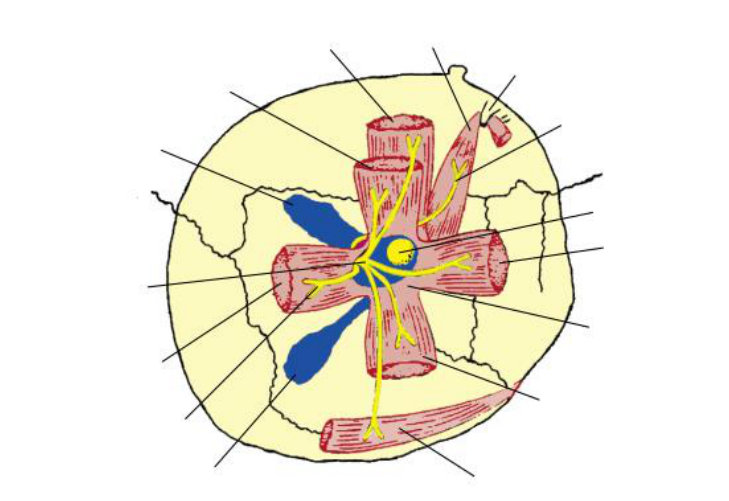
Answer: Fig. 11.11 with labels
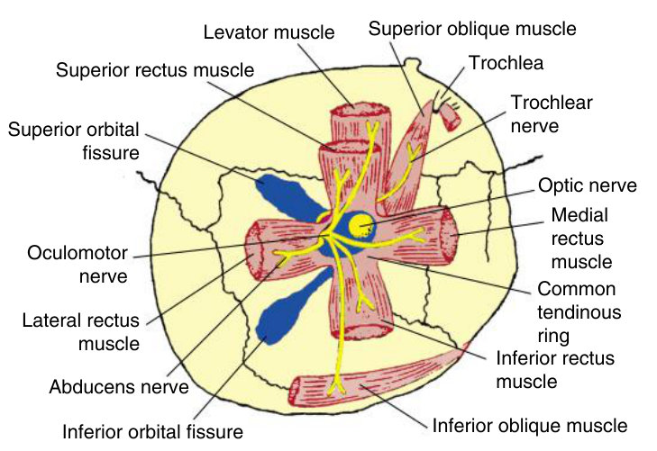
Left side, top to bottom: superior rectus · superior orbital fissure · oculomotor nerve · lateral rectus · abducens nerve · inferior orbital fissure. Top: levator · superior oblique · trochlea · trochlear nerve (above the ring). Right side: optic nerve · medial rectus · common tendinous ring · inferior rectus · inferior oblique (the only muscle not near the apex).
2 · Where the recti insert
- All four recti insert on the anterior globe, in front of the equator. Handout 9 · p. 2 · TB 11 · p. 180
- Their tendons pierce Tenon capsule and merge with the scleral fibres. A sleeve of the capsule covers the tendon for a short way, and the muscle slides freely inside it. Handout 9 · p. 2 · TB 11 · p. 180
- Spiral of Tillaux: the line joining the four insertions is a spiral, starting closest to the limbus and moving away: MR → IR → LR → SR. TB 11 · p. 180 · Fig. 11.12
| Rectus | Insertion from limbus | Tendon length | Tendon width | Shape of insertion line |
|---|---|---|---|---|
| Medial | 5.5 mm (5.2–5.7) | 3.7 mm | 10.3 mm | straight, vertical, bisected by the horizontal plane |
| Inferior | 6.2 mm (6.0–6.3) | 5.5 mm | 9.8 mm | oblique, nasal end nearer the limbus |
| Lateral | 6.6 mm (6.4–6.8) | 8.8 mm | 9.2 mm | parallel to the MR, straight or concave forward |
| Superior | 7.2 mm (6.8–7.5) | 5.8 mm | 10.8 mm | oblique, nasal end nearer the limbus |
TB 11 · p. 181–182, Table 11.1 (first number) and text (range in brackets). The rows are in Tillaux order.
3 · Muscle by muscle: the master table
The handout asks origin, insertion and innervation for each muscle, and a pathway for the two obliques. Cover the right-hand columns and recall them.
| Muscle | Origin | Insertion | Nerve | Primary action | Secondary actions |
|---|---|---|---|---|---|
| Medial rectus | common tendinous ring (both limbs) + optic nerve sheath | anterior globe, medial | CN III, inferior division | adduction | none |
| Lateral rectus | common tendinous ring (both limbs) + spina recti lateralis on the greater wing of the sphenoid | anterior globe, lateral | CN VI (abducens) | abduction | none |
| Superior rectus | common tendinous ring (upper limb) + optic nerve sheath | superior, anterior globe | CN III, superior division | elevation | adduction, intorsion |
| Inferior rectus | common tendinous ring (lower limb) | inferior, anterior globe | CN III, inferior division | depression | adduction, extorsion |
| Superior oblique | anatomic: lesser wing of the sphenoid, medial to the optic canal · physiologic: trochlea | superior, posterior, lateral globe | CN IV (trochlear) | intorsion | depression, abduction |
| Inferior oblique | medial maxillary bone, at the front of the orbital floor | inferior, posterior, lateral globe | CN III, inferior division | extorsion | elevation, abduction |
TB 11 · p. 184, Table 11.5 · TB 11 · p. 182, Table 11.2 · Handout 9 · p. 3–6. Shorthand for the nerves: LR6 · SO4 · all the rest III; of the four CN III muscles, only the SR takes the superior division. TB 11 · p. 190
The details behind each row
| Muscle | Course and features | Nerve enters on | Your notes |
|---|---|---|---|
| MR | Largest EOM (probably from constant use in convergence). Runs along the medial orbital wall, through a connective tissue pulley just behind the equator, then follows the globe's curve. Its sheath forms the medial check ligament. TB 11 · p. 181 | lateral surface | "largest muscle (muscle we use the most)" |
| LR | Runs along the lateral orbital wall, pulley behind the equator. Longest rectus tendon (8.8 mm). Lacrimal artery and nerve on its upper border; ciliary ganglion, CN VI and ophthalmic artery between it and the optic nerve. Its sheath forms the lateral check ligament. TB 11 · p. 181 | medial surface | origin "CTR + greater wing of sphenoid" |
| SR | Runs forward under the levator along the orbital roof. The two sheaths are joined, so the upper lid rises when you look up. Muscle line makes 23° with the sagittal (y) axis. TB 11 · p. 181–182 | inferior face (branches go on to the levator) | "CTR + optic nerve sheath" |
| IR | Runs along the orbital floor, parallel to the SR, also at 23° to the sagittal axis. Its sheath and the IO's join in the suspensory ligament of Lockwood; the capsulopalpebral fascia goes to the lower tarsus, so the lower lid drops when you look down. TB 11 · p. 182 | superior surface | "anterior globe @ 23° angle towards nasal side" |
| SO | Longest and thinnest EOM, because of its 2.5 cm tendon. The tendon begins about 1 cm behind the trochlea (a U-shaped cartilage on the frontal bone), slides through it, turns back and passes under the SR to a fan-shaped insertion 12–18 mm from the limbus. The trochlea is the effective origin: the line from trochlea to insertion makes 55° with the sagittal axis. TB 11 · p. 182 | posterior part (CN IV, from outside the cone) | "longest and thinnest muscle · trochlea · 55°" |
| IO | The only EOM whose anatomic origin is in the anterior orbit: maxillary bone, about 2 mm behind the inferomedial orbital rim, lateral to the nasolacrimal canal. Runs back and laterally below the IR. Shortest tendon (1 mm). Insertion posterior, lateral, mostly inferior, just outside the macula, about 15 mm from the limbus. Muscle line makes 51° with the sagittal axis. TB 11 · p. 182 | upper surface | "51° · maxillary bone (stays still) · posterior lateral inferior globe" |
The two oblique pathways
Handout 9 · p. 5–6 · TB 11 · p. 182 · Fig. 11.9. Both obliques pull from the front-medial corner of the orbit toward the back of the globe; that is why they move the back of the eye and the front goes the other way.
4 · Fick's axes, ductions and positions of gaze
Every eye movement is a rotation about one or more of three axes that cross at the centre of rotation, about 13.5 mm behind the cornea (a little further back in myopia, further forward in hyperopia). The anterior pole is the reference point: when the front moves up, the back moves down. TB 11 · p. 182–183
| Axis | Lies | Runs | Rotation about it (ductions) |
|---|---|---|---|
| X | horizontal (transverse) | nasal → temporal | elevation (supraduction) · depression (infraduction) |
| Y | horizontal (sagittal) | anterior pole → posterior pole | intorsion (incyclorotation): the 12 o'clock limbus point turns nasally · extorsion (excyclorotation): it turns temporally |
| Z | vertical | superior → inferior | adduction (anterior pole medially) · abduction (laterally) |
Handout 9 · p. 7 · TB 11 · p. 183, Fig. 11.14, Fig. 11.15, Table 11.3. A duction moves one eye; movements of both eyes are versions (same direction) or vergences (opposite directions).

Answer: Fig. 11.14 with labels

Vertical line: Z-axis (adduction / abduction). Line through the cornea and the back of the eye: Y-axis (intorsion / extorsion). Side-to-side line: X-axis (elevation / depression).
Positions of gaze
| Position | Definition | Your notes |
|---|---|---|
| Primary | Head erect, eyes focused for infinity, looking at an object where the head's sagittal plane meets the horizontal plane through both centres of rotation. | "looking straight ahead, not accommodated" |
| Secondary | Rotation about either the vertical (z) or the horizontal (x) axis: straight right, left, up or down. | "vertical OR horizontal" |
| Tertiary | Rotation about both the vertical and the horizontal axis: the four oblique directions (up-right, up-left, down-right, down-left). | "vertical AND horizontal" |
Handout 9 · p. 8 · TB 11 · p. 183
| Both eyes move | Term | Both eyes move | Term |
|---|---|---|---|
| right | dextroversion | up and right | dextroelevation |
| left | levoversion | up and left | levoelevation |
| up | supraversion | down and right | dextrodepression |
| down | infraversion | down and left | levodepression |
| both adduct | convergence | both abduct | divergence |
TB 11 · p. 183–184, Table 11.4
5 · Actions from primary position
Each action follows from where the insertion sits relative to the origin. The textbook warns this "one muscle contracts" model is hypothetical: all six muscles are always in some state of contraction. TB 11 · p. 183–184
| Muscle | About X (vertical) | About Z (horizontal) | About Y (torsion) | Why |
|---|---|---|---|---|
| MR | — | adduction | — | lies parallel to the y-axis, perpendicular to x and z: one action only |
| LR | — | abduction | — | same, pulling temporally |
| SR | elevation (primary) | adduction | intorsion | insertion above the origin on the anterior globe → up · insertion lateral to the origin → in · oblique insertion on top of the globe → intorts |
| IR | depression (primary) | adduction | extorsion | insertion below the origin on the anterior globe → down · lateral to the origin → in · oblique insertion underneath → extorts |
| SO | depression | abduction | intorsion (primary) | insertion behind and below the trochlea: pulls the back of the eye up and medially, so the front goes down and out; the oblique pull on the top of the globe intorts |
| IO | elevation | abduction | extorsion (primary) | wraps under the globe; insertion behind and above the origin: pulls the back of the eye down and medially, so the front goes up and out |
Handout 9 · p. 9–10 · TB 11 · p. 184–185 · Slides 9 · #5–15 (Figs. 11.15–11.18)
Memory hooks from the table: the recti adduct (SR, IR, MR), the obliques abduct. Superior muscles intort (SR, SO), inferior muscles extort (IR, IO). Obliques do the opposite vertical job to their name: SO depresses, IO elevates. from TB 11 · p. 184, Table 11.5
Two views on the obliques. The textbook (and the lecture) call torsion the oblique muscles' primary action. Some authors call depression (SO) and elevation (IO) primary and torsion secondary. Know both; answer with torsion as primary. TB 11 · p. 185
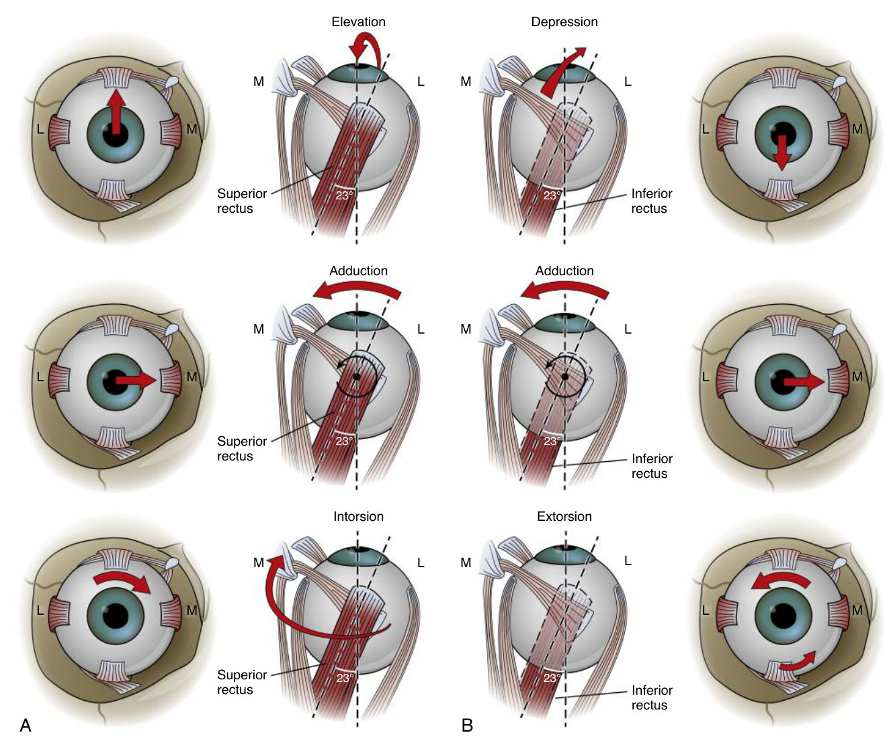
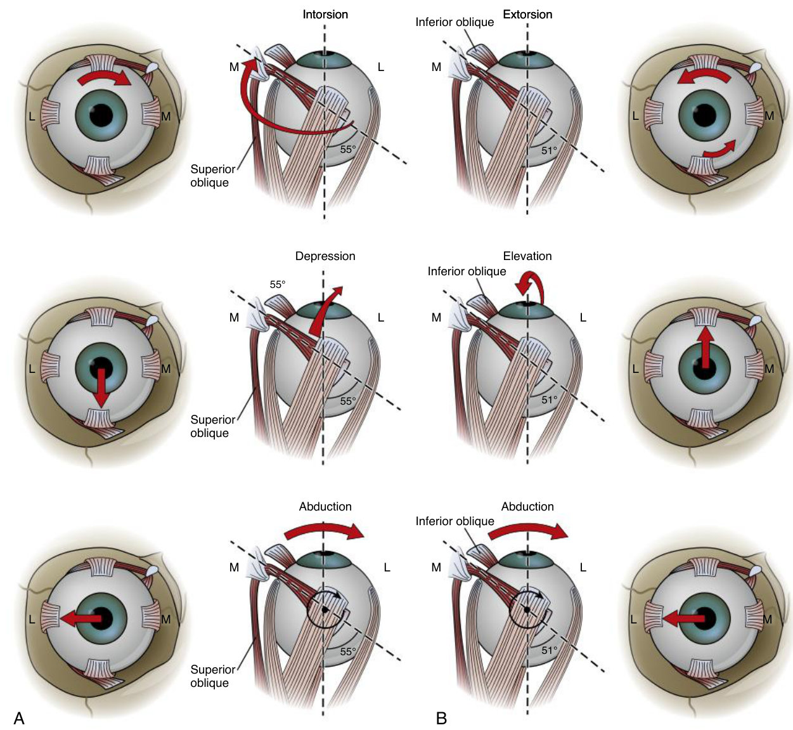
6 · Actions from secondary positions
When the eye turns, the muscle's line of pull changes relative to Fick's axes. A muscle whose plane lies parallel to the y-axis acts purely vertically; one whose plane is perpendicular to the y-axis cannot act vertically at all. TB 11 · p. 185–187 · Slides 9 · #16–17
| Muscles | Eye abducted | Eye adducted |
|---|---|---|
| Vertical recti (SR, IR) | At about 23° abduction their plane is parallel to the y-axis: SR only elevates, IR only depresses, no torsion. Handout 9 · p. 11 · TB 11 · p. 185 · Fig. 11.19A | At about 67° adduction (probably beyond what the orbit allows) their plane is perpendicular to the y-axis: SR and IR cannot elevate or depress. What remains is torsion. TB 11 · p. 187 · Fig. 11.19B Your drawing beside it reads "torsional". Your notes |
| Obliques (SO, IO) | At 35–39° abduction their plane is perpendicular to the y-axis: the obliques cannot elevate or depress. TB 11 · p. 187 · Fig. 11.20B You wrote: SO → intorsion, IO → extorsion. Your notes | At 51–55° adduction their plane is parallel to the y-axis: SO only depresses, IO only elevates. Handout 9 · p. 12 · TB 11 · p. 187 · Fig. 11.20A |
| Horizontal recti (MR, LR) | With the eye elevated they also elevate slightly; with the eye depressed they depress it further. TB 11 · p. 185 | |
The rule the whole clinical test rests on: the more the eye abducts, the more the vertical recti elevate and depress (and the less the obliques do); the more it adducts, the more the obliques elevate and depress. TB 11 · p. 187, 190
From a secondary to a tertiary position
Start in right or left gaze (secondary, about the z-axis), then look up or down (adding the x-axis): the eye is now in a tertiary position. The abducted eye now moves vertically with its vertical rectus, the adducted eye with its oblique. TB 11 · p. 188
| Secondary position | Then | Tertiary position | Right eye (muscle tested) | Left eye (muscle tested) |
|---|---|---|---|---|
| Right gaze | up | up and right | abducted → R SR | adducted → L IO |
| Right gaze | down | down and right | abducted → R IR | adducted → L SO |
| Left gaze | up | up and left | adducted → R IO | abducted → L SR |
| Left gaze | down | down and left | adducted → R SO | abducted → L IR |
TB 11 · p. 188 (ocular motility testing, steps 3–4)
7 · Finding the dysfunctional muscle
1. Look at primary position first. If one muscle is inactive, the eye is pulled in the direction of its antagonist. An eye turned toward the nose → underactive LR, unopposed MR. A paralysed MR → eye turned temporally. TB 11 · p. 188
2. Then test motility with a small target (a bead), putting the eye where one muscle is the main actor:
| The eye cannot… | Position tested | Dysfunctional muscle |
|---|---|---|
| abduct | horizontal | LR |
| adduct | horizontal | MR |
| elevate | adducted | IO |
| depress | adducted | SO |
| elevate | abducted | SR |
| depress | abducted | IR |
Handout 9 · p. 13 · TB 11 · p. 188, Fig. 11.22 · your notes on handout p. 13 match this table exactly

Answer: Fig. 11.22 with labels

A, patient's right eye: IO up-out, SR up-in, LR out, MR in, SO down-out, IR down-in (curved arrows = torsion). The left eye mirrors it. B, the "H" for each eye: temporal side (abducted) SR above, IR below; nasal side (adducted) IO above, SO below.
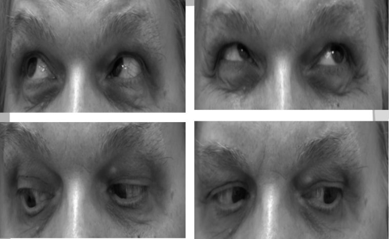
8 · Agonists and antagonists about each axis
- Synergists / agonists work together for the same action. Antagonists work in opposite directions. Handout 9 · p. 14 · TB 11 · p. 188
- Sherrington's law of reciprocal innervation: contraction of a muscle comes with a simultaneous and proportional relaxation of its antagonist. Example: in adduction the MR contracts and the LR relaxes. Handout 9 · p. 14 · TB 11 · p. 188 Exam
| Axis · movement | Agonists (together) | Antagonists (against them) |
|---|---|---|
| Z · adduction | MR (primary) + SR + IR | LR + SO + IO |
| Z · abduction | LR (primary) + SO + IO | MR + SR + IR |
| X · elevation | SR + IO | IR + SO |
| X · depression | IR + SO | SR + IO |
| Y · intorsion | SO (primary) + SR | IO + IR |
| Y · extorsion | IO (primary) + IR | SO + SR |
Built from TB 11 · p. 184, Table 11.5, and the pairs the textbook names on p. 188
The same pair of muscles can be agonists about one axis and antagonists about another. That is the point of the objective:
| Pair | X (up/down) | Y (torsion) | Z (in/out) | Net effect together |
|---|---|---|---|---|
| MR + LR | — | — | antagonists | — |
| SR + IO | agonists (both elevate) | antagonists (in vs ex) | antagonists (in vs out) | torsion and horizontal cancel: pure elevation TB 11 · p. 188 |
| IR + SO | agonists (both depress) | antagonists | antagonists | straight down TB 11 · p. 188 |
| SO + IO | antagonists | antagonists | agonists (both abduct) | TB 11 · p. 188 |
| SR + IR | antagonists | antagonists | agonists (both adduct) | |
| SR + SO | antagonists | agonists (both intort) | antagonists | |
| IR + IO | antagonists | agonists (both extort) | antagonists |
Your notes say the same for SR + IO: "elevate ⇒ x-axis ⇒ agonist · intorsion → extort ⇒ y-axis ⇒ antagonist · adduct → abduct ⇒ z-axis ⇒ antagonist", and "SR, SO agonist in torsional movement". your notes, handout p. 14 · Review handout 14 · p. 5
9 · Yoke muscles
- Yoke muscles: the muscles of the two eyes that work together to make symmetric, binocular movements. Handout 9 · p. 14 · TB 11 · p. 189
- Hering's law of equal innervation: innervation to the muscles of the two eyes is equal and simultaneous, so the two eyes normally move symmetrically. Handout 9 · p. 14 · TB 11 · p. 189 Exam
- Don't mix the two laws up: Sherrington = agonist and antagonist in one eye · Hering = yoke muscles of both eyes.
| Gaze | Kind | Yoke muscles |
|---|---|---|
| Right (dextroversion) | secondary | R LR + L MR TB 11 · p. 189 |
| Left (levoversion) | secondary | L LR + R MR |
| Up (supraversion) | secondary | SR + IO in each eye (the elevating synergists) from TB 11 · p. 188 |
| Down (infraversion) | secondary | IR + SO in each eye (the depressing synergists) from TB 11 · p. 188 |
| Up and right | tertiary | R SR + L IO |
| Up and left | tertiary | L SR + R IO |
| Down and right | tertiary | R IR + L SO |
| Down and left | tertiary | L IR + R SO |
| Convergence | vergence | R MR + L MR TB 11 · p. 189 |
TB 11 · p. 189, Fig. 11.23 (six cardinal positions). How to build any tertiary pair: the eye looking out uses its rectus, the eye looking in uses its oblique, and both do the same vertical job. Your note: "up left: R IO, L SR are yoke muscles". your notes, Review handout 14 · p. 5

Answer: Fig. 11.23 with labels

Patient's right gaze (pairs on the left of the figure): up R SR + L IO · across R LR + L MR · down R IR + L SO. Patient's left gaze (right of the figure): up R IO + L SR · across R MR + L LR · down R SO + L IR.
- Typed note beside the objectives: "IR: 1. depression, extorsion, abduction". The textbook gives IR adduction (its insertion is lateral to its origin), and your own handout note on p. 9 says adduction too. Learn adduction. TB 11 · p. 184
- SO origin written as "Trochlear". The anatomic origin is the lesser wing of the sphenoid; the trochlea is the physiologic (effective) origin. Trochlear is the nerve (CN IV). TB 11 · p. 182
- "IO: posterior lateral??" Confirmed: insertion inferior, posterior, lateral globe, near the macula. TB 11 · p. 182
- "antagonist in lateral??" Depends on the pair: see the pair table in section 8 (SR + IO are antagonists horizontally; SO + IO are agonists, both abduct).
- Your yoke sketch on handout p. 14 labels an oblique in one eye with an MR in the other ("IO (R) / MR (L)", "SO / MR"). That is not a yoke pair in the textbook: yoke pairs are vertical with vertical (R IO + L SR) and horizontal with horizontal (R LR + L MR). Check the sketch against Fig. 11.23.
- SO intorts and IO extorts when the eye is abducted, and SR/IR are "torsional" when it is adducted: the textbook only says these muscles then cannot move the eye vertically. Your notes
Left out because neither the objectives nor the handout ask for them: the microscopic anatomy of striated muscle (sarcomere, actin/myosin, sliding ratchet model), fibre types and the global/orbital layers, motor units, muscle pulleys, intermuscular septa and check-ligament detail, compartmentalization, the controversy over the IO's horizontal action, the muscles' blood supply (ophthalmic artery branches belong with circulation), ageing changes, and the clinical comments on myasthenia gravis, Brown syndrome, strabismus and Graves disease. The pathways of CN III, IV and VI and their palsies are taught in the cranial nerves chapter; here they appear only as the slides' two palsy photos.
Key facts
6 muscles: 4 recti (origin: common tendinous ring) + 2 obliques (SO from the lesser wing via the trochlea, IO from the maxillary bone)
Nerves: LR6 · SO4 · the rest III (SR = superior division, MR/IR/IO = inferior division)
Spiral of Tillaux: MR 5.5 → IR 6.2 → LR 6.6 → SR 7.2 mm from the limbus
Tendons: LR 8.8 mm (longest rectus) · MR 3.7 mm · SO 2.5 cm · IO 1 mm
Angles to the sagittal axis: SR and IR 23° · SO 55° · IO 51°
Pure vertical action: vertical recti at 23° abduction · obliques at 51–55° adduction
No vertical action: vertical recti at 67° adduction · obliques at 35–39° abduction
Centre of rotation 13.5 mm behind the cornea
Self-check
Which muscles arise from the common tendinous ring, and which two also attach to the optic nerve sheath? Why does that matter?
Give the anatomic and the physiologic origin of the superior oblique, and say why the physiologic one is used.
Which extraocular muscle has its origin in the anterior orbit, and where does it insert?
Put the rectus insertions in order from nearest to farthest from the limbus. What is the line called?
List the nerve of each extraocular muscle.
Give the primary and secondary actions of the SR, IR, SO and IO.
Name Fick's three axes, the direction each runs, and the movements about each.
What is the difference between a secondary and a tertiary position of gaze?
The right eye is in right gaze and cannot look up. Which muscle? And if the left eye cannot look up in the same position?
A patient cannot depress the left eye when looking down and to the right. Which muscle and which nerve?
SR and IO: agonists or antagonists? Answer for each of Fick's axes.
Name the yoke muscles for levoelevation and dextrodepression, and the law that governs them.
Sources for this chapter: Handout 9 "Extraocular Muscles" (with your notes) · Slides 9 "Extraocular Muscles" (with your notes) · Review handout 14, p. 5 (objectives and typed notes) · Textbook ch. 11, Extraocular Muscles, pp. 175–190 · Textbook ch. 13, pp. 217–219 (Figs. 13.14, 13.17).
Cranial nerve innervation
The sensory nerves that carry the eye's feeling back to the brainstem, the two autonomic routes into the eye, and the motor nerves that move the eye and close the lids.
Prof. Goodwin's guideline objectives for "Cranial Nerves" and the two "Cranial Nerves (cont.)" slides, word for word: Review · p. 6
- Exam "List the branches, pathways, and functions of each branch of the ophthalmic nerve." → §2
- Exam "List the branches, pathways, and functions of the branches of the maxillary nerve that innervate structures surrounding the orbit" → §3
- Exam "Describe the central, preganglionic, and postganglionic sympathetic pathways to the eye and ocular structures." → §5 (and §7 for the lacrimal gland)
- Exam "Describe how the sympathetic system affects the eye and ocular structures." → §5
- Exam "Describe the central, preganglionic, and postganglionic parasympathetic pathways to the eye or ocular structures." → §6 (and §7)
- Exam "Describe the parasympathetic system affects the eye and ocular structures." → §6
- Exam "Describe the pathways of cranial nerves 3, 4, and 6." → §8–§11
- Exam "Describe the characteristic of a cranial nerve 3, 4, or 6 palsy." → §8–§11
- Exam "List the functions and pathway of the branches of cranial nerve 7 that innervate muscles surrounding the eye." → §12
Your typed notes beside these objectives: "nasociliary nerves, frontal 2 branches, lacrimal 0 branches · maxillary: infraorbital nerve · central: brain stem, superior ganglion · post. internal carotid, cavernous sinus, dilator and Müller · pupils sympathetic: dilate, Müller enlarge eye · hypothalamus, Edinger-Westphal, cranial 3 to ciliary ganglion, then short ciliary nerves · 4 cavernous sinus · 6 is in pons into the sinus cavernosus · CN7 lagophthalmos" Your notes. Read them as the skeleton of the answers: count the branches, learn each autonomic route as a sequence of stations, and link CN VII to lid closure. Every route below is drawn as a flow chart for that reason.
1 · Which cranial nerve does what
Six cranial nerves serve the orbit. CN V carries sensation; CN III, IV, VI and VII are motor to striated muscle; CN II (vision) belongs to the visual pathway chapter. TB 13 · p. 208
| Nerve | Leaves the brainstem at | Supplies | Function |
|---|---|---|---|
| III Oculomotor · superior division | midbrain | superior rectus · levator palpebrae superioris | elevation (with adduction, intorsion) · lifts the upper lid |
| III Oculomotor · inferior division | midbrain | medial rectus · inferior rectus · inferior oblique · ciliary ganglion | adduction · depression · elevation · parasympathetic to sphincter and ciliary muscle (miosis, accommodation) |
| IV Trochlear | midbrain | superior oblique | depression, abduction, intorsion |
| V Trigeminal | pons | skin, eye and orbit | sensation (mainly pain from cornea, iris, conjunctiva, sclera) |
| VI Abducens | pons | lateral rectus | abduction |
| VII Facial | pons | frontalis, procerus, corrugator, orbicularis · pterygopalatine (sphenopalatine) ganglion | facial expression, lid closure · secretomotor to the lacrimal gland |
TB 13 · p. 208–209 (Table 13.1). Memory aid from this table: LR by VI, SO by IV, all the other extraocular muscles by III.
Two building rules you need for every pathway: a somatic motor fibre runs the whole way from the brainstem to the muscle (one neuron); an autonomic route has a synapse in a ganglion outside the CNS (two neurons: preganglionic, then postganglionic). A group of nerve cell bodies is a nucleus inside the CNS, a ganglion outside it. TB 13 · p. 208 · TB 14 · p. 222
2 · Sensory: the ophthalmic division of the trigeminal nerve (V1)
The textbook follows sensory fibres from the tissue back to the brain, the way the signal travels: small nerves join into bigger ones, reach the trigeminal ganglion and then the pons. Learn them in that direction. TB 13 · p. 208
- Trigeminal nerve (CN V) · trigeminal ganglion
- V1 Ophthalmic = nasociliary + frontal + lacrimal
- Nasociliary (5 branches): infratrochlear · anterior ethmoid · posterior ethmoid · long ciliary · short ciliary (via the sensory root of the ciliary ganglion)
- Frontal (2 branches): supratrochlear · supraorbital
- Lacrimal (no named branches)
- V2 Maxillary: infraorbital · zygomatic (= zygomaticotemporal + zygomaticofacial)
- V3 Mandibular (lower face; not an orbital nerve)
- V1 Ophthalmic = nasociliary + frontal + lacrimal
Handout 10 · p. 1–3 · TB 13 · p. 208–212 · your tree drawn on Handout 10 · p. 4 has exactly these names Your notes
The nasociliary nerve and its five branches
| Branch | Innervates | Pathway | Your notes |
|---|---|---|---|
| Infratrochlear | medial canthus: caruncle, canaliculi, lacrimal sac, medial eyelids, skin at the side of the nose | pierces the orbital septum, enters the orbit below the trochlea, runs on the upper border of the medial rectus and becomes the nasociliary nerve | caruncle, canaliculi / lac. sac, med. lids + conj. · "under" (the trochlea) |
| Anterior ethmoid | skin along the centre of the nose (to the tip), nasal mucosa, ethmoid sinuses | enters the orbit with its artery through a foramen in the frontoethmoid suture, joins the nasociliary nerve on the medial wall | skin of medial nose, ethmoid sinus · "lesion on tip of nose" |
| Posterior ethmoid | ethmoid and sphenoid sinuses | same route as the anterior ethmoid, further back | ethmoid + sphenoid sinus |
| Long ciliary (2) | cornea and other anterior segment structures; also carry sympathetic fibres to the iris dilator | one medial, one lateral; run between choroid and sclera to the back of the globe and leave it about 3 mm on each side of the optic nerve; join the nasociliary nerve. Seen with indirect ophthalmoscopy at 3 and 9 o'clock (Fig. 13.4) | ant. segment: ant. sclera, iris, CB, cornea + TM |
| Short ciliary (6–10) | cornea, iris, ciliary body; they also carry sympathetic and parasympathetic fibres | through the choroid to the back of the globe; leave the sclera in a ring around the optic nerve with the short posterior ciliary arteries; enter the ciliary ganglion, pass through without synapsing and leave as its sensory root, which joins the nasociliary nerve | ant. segment: cornea + iris + ciliary body |
Handout 10 · p. 1–2 · TB 13 · p. 208–210 · Slides 10 · #2, #4, #5
TB 13 · p. 210
Herpes zoster is a CNS infection by the varicella-zoster virus: it lies dormant in a sensory ganglion and, when activated, travels down the sensory nerve to the skin, giving pain and a rash in that nerve's area. About 10% of cases involve V1. Hutchinson sign: zoster on the tip of the nose means the eye will often be involved too, because the tip of the nose (anterior ethmoid) and the globe (long and short ciliary nerves) are both nasociliary territory. TB 13 · p. 210 · Handout 10 · p. 1 · Slides 10 · #3
The frontal and lacrimal nerves, and V1 itself
| Nerve | Innervates | Pathway | Your notes |
|---|---|---|---|
| Supratrochlear | skin and muscles of the forehead · medial upper eyelid | supratrochlear notch (or foramen); pierces the superomedial corner of the orbital septum | forehead, medial upper eyelid |
| Supraorbital | forehead, scalp, upper eyelid | supraorbital notch (or foramen) with the supraorbital artery, lateral to the supratrochlear; the two join midway in the orbit → frontal nerve | forehead, central upper eyelid |
| Frontal | (the two above) | back through the orbit between the levator and the periorbita; leaves through the superior orbital fissure above the common tendinous ring | "frontal 2 branches" |
| Lacrimal | lateral upper eyelid, temple area, the lacrimal gland itself | fibres join in the gland; the nerve runs back along the upper border of the lateral rectus; may receive a branch from the zygomatic nerve carrying the gland's autonomic fibres; leaves through the superior orbital fissure above the muscle cone | lacrimal gland, lateral upper eyelid, temple area · "0 branches" |
Handout 10 · p. 3 · TB 13 · p. 211 · Fig. 13.5 (Slides 10 · #6)
Handout 10 · p. 3 ("the nasociliary, frontal, and lacrimal nerves join to form the ophthalmic division") · TB 13 · p. 211–212

Answer: Fig. 13.1 with labels

Left, top to bottom: supratrochlear nerve · superior oblique · infratrochlear nerve · medial rectus · anterior ethmoid nerve · long ciliary nerve · posterior ethmoid nerve · nasociliary nerve · optic nerve · ophthalmic nerve. Right, top to bottom: supraorbital nerves · lateral rectus · zygomaticotemporal nerve · zygomaticofacial nerve · short ciliary nerves · ciliary ganglion · long ciliary nerve · sensory root to the ciliary ganglion · frontal nerve · lacrimal nerve · zygomatic nerve · infraorbital nerve · maxillary nerve · mandibular nerve · trigeminal ganglion.
3 · Sensory: the maxillary division (V2) and the way to the brainstem
| Nerve | Innervates | Pathway | Your notes |
|---|---|---|---|
| Infraorbital | lower eyelid, cheek, upper lip; in its canal it also collects the upper teeth and maxillary sinus | infraorbital foramen → infraorbital canal and groove in the maxilla (with the infraorbital artery) → leaves the orbit through the inferior orbital fissure → maxillary nerve | lower eyelid, upper cheek, upper lip + teeth |
| Zygomatic | zygomaticotemporal: temple · zygomaticofacial: lateral cheek and lower eyelid; also carries the lacrimal gland's autonomic fibres (§7) | each enters the orbit through a foramen in the zygomatic bone; they join, run along the lateral orbital wall, leave through the inferior orbital fissure → maxillary nerve | lateral lower eyelid, lateral cheek, lateral forehead |
Handout 10 · p. 3 · TB 13 · p. 211–212
TB 13 · p. 212. The mandibular nerve (V3) enters through the foramen ovale and lies just below the cavernous sinus.
Pain can be felt far from its source when both areas share a trigeminal network: an abscessed upper tooth (infraorbital nerve) can be described by the patient as eye pain. Suspect it when no orbital cause is found. TB 13 · p. 211
Trigeminal ganglion and nuclei
| Station | Where | What it does |
|---|---|---|
| Trigeminal (gasserian, semilunar) ganglion | lateral to the internal carotid artery and the back of the cavernous sinus | holds the cell bodies of the sensory fibres of all three divisions (no synapse); fibres then enter the lateral pons |
| Principal sensory nucleus | pons | touch and pressure |
| Nucleus of the spinal tract | pons and medulla, down to C2–C4 | pain and temperature |
| Mesencephalic nucleus | pons–midbrain junction | proprioception |
TB 13 · p. 212 · Fig. 13.6 (Slides 10 · #7). From the nuclei the information goes on to the thalamus.
4 · The autonomic plan
The autonomic system supplies smooth muscle, glands and vessels. In the eye: the iris muscles, ciliary muscle, smooth muscle of the lids (Müller), choroidal and conjunctival vessels, and the lacrimal gland. The sympathetic side prepares for an emergency; the parasympathetic side keeps and restores the resting state. TB 14 · p. 222
| Sympathetic | Parasympathetic | |
|---|---|---|
| Preganglionic cell bodies for the eye | spinal cord T1–T3 | midbrain (Edinger-Westphal preganglionic cells) · pons (lacrimal / superior salivatory nucleus) |
| Ganglion | near the spine: superior cervical ganglion | near the target: ciliary ganglion · pterygopalatine ganglion |
| Preganglionic fibre | usually myelinated, ends in the ganglion with a synapse | |
| Postganglionic fibre | usually non-myelinated | to the iris and ciliary muscle: myelinated |
| Transmitter at the target | norepinephrine (adrenergic) | acetylcholine (cholinergic) |
| Eye targets | iris dilator, ciliary muscle, Müller muscle, lacrimal gland, choroidal and conjunctival vessels | iris sphincter, ciliary muscle, lacrimal gland, blood vessels |
TB 14 · p. 222, 224, 227 · Handout 10 · p. 5–7
5 · The sympathetic pathway
Three neurons in a row: central (hypothalamus to spinal cord), preganglionic (spinal cord to superior cervical ganglion), postganglionic (ganglion to the eye). Handout 10 · p. 5 · TB 14 · p. 222, 235 · Fig. 14.18
TB 14 · p. 222 (central pathway ends in the cervical spinal cord; preganglionic fibres leave in the first three thoracic nerves) · p. 235 (over the lung apex, around the subclavian artery). Your notes: "Hypothalamus ↓ spinal cord ↓ sup. cervical gang." and "LUNG" drawn beside Fig. 14.2 Your notes. The textbook names the first synapse in two ways: the "lateral horn" of T1–T3 (p. 222) and the "dorsal horn of the cervical spinal cord" (p. 235). Learn: upper spinal cord, outflow T1–T3.
In the cavernous sinus the fine postganglionic fibres leave the plexus and hitch a ride on cranial nerves to their targets: TB 14 · p. 222
TB 14 · p. 222 · TB 13 · p. 214 (CN III receives sympathetic fibres in the sinus). Conjunctival vessels: via the long or the short ciliary nerves. An alternative route to Müller muscle through the infratrochlear or lacrimal nerve has been suggested. The lacrimal gland and lower-lid route is in §7.
| Target (handout) | Arrives by | Effect of sympathetic stimulation |
|---|---|---|
| Iris dilator | long ciliary nerves | contracts → pupil dilates (mydriasis) → more light on the retina |
| Choroidal vasculature | short ciliary nerves | vasoconstriction (also conjunctival vessels) |
| Müller muscle | superior division of CN III | contracts → widens the palpebral fissure (raises the lid) |
| Ciliary muscle | long ciliary nerves | small inhibitory effect after sustained accommodation, in some people |
| Lacrimal gland | zygomatic → lacrimal nerve (§7) | constricts its vessels → indirectly less secretion |
Handout 10 · p. 5 · TB 14 · p. 222, 226. Your notes beside the handout: "dilates / constrict / raises eyelid" and, on the guidelines, "Müller enlarge eye" Your notes. Sweat-gland fibres to the face mostly follow the external carotid artery instead; that matters for Horner syndrome (chapter 11).
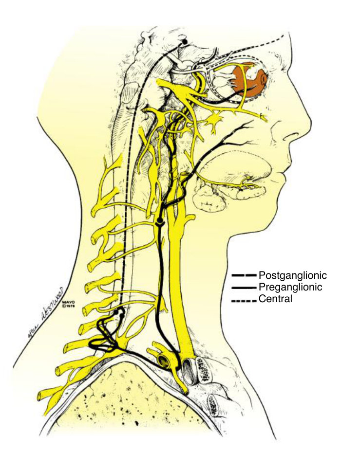
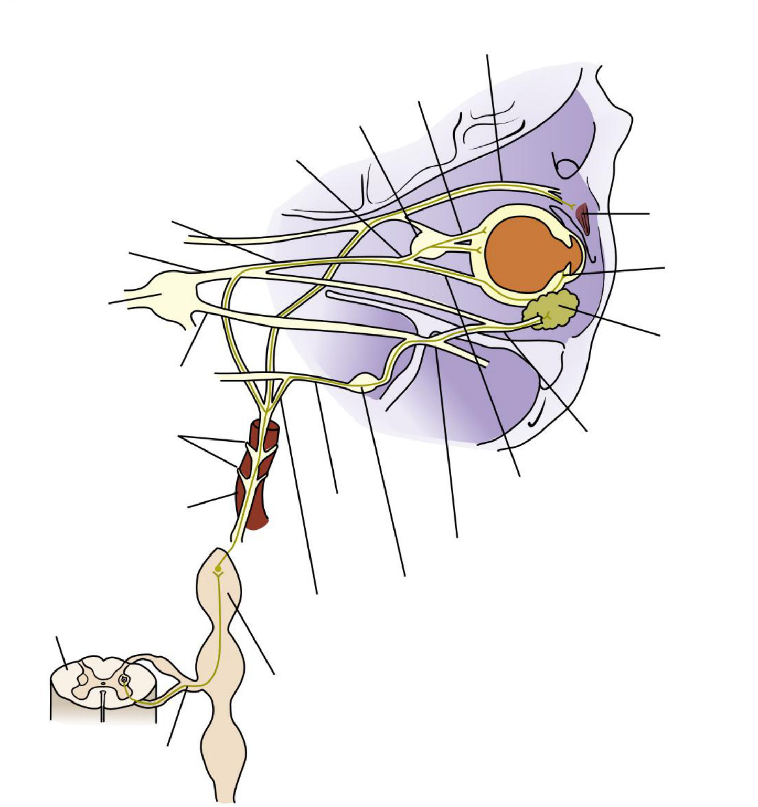
Answer: Fig. 14.2 with labels
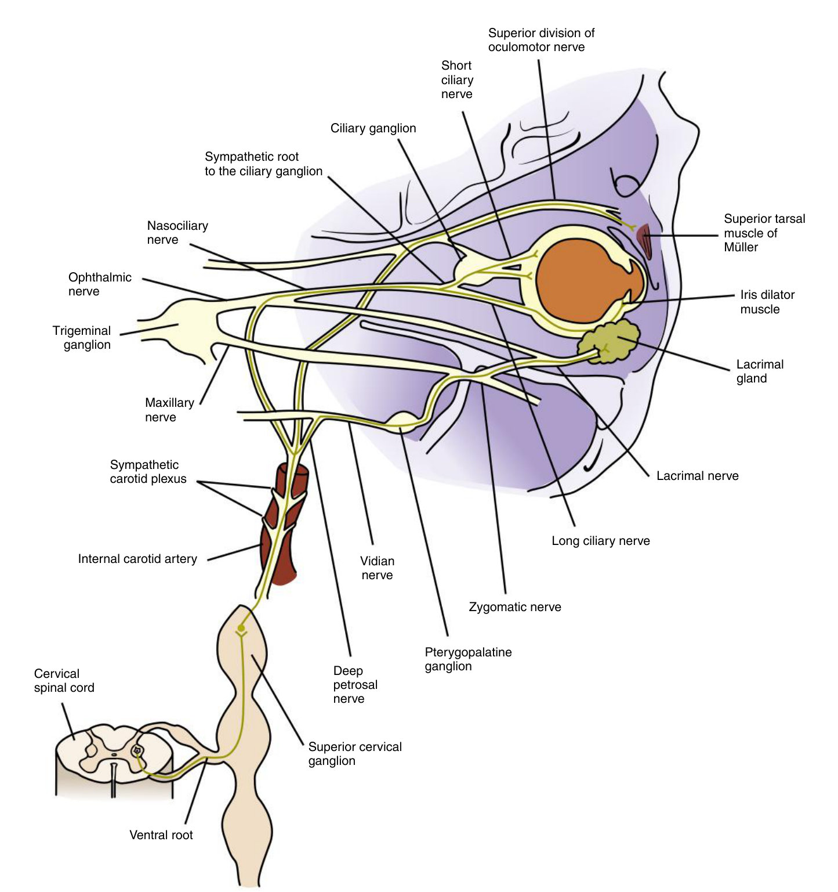
Top, left to right: sympathetic root to the ciliary ganglion · ciliary ganglion · short ciliary nerve · superior division of oculomotor nerve. Left, top to bottom: nasociliary nerve · ophthalmic nerve · trigeminal ganglion · maxillary nerve · sympathetic carotid plexus · internal carotid artery · cervical spinal cord · ventral root. Bottom: superior cervical ganglion · deep petrosal nerve · vidian nerve · pterygopalatine ganglion · zygomatic nerve · long ciliary nerve. Right, top to bottom: superior tarsal muscle of Müller · iris dilator muscle · lacrimal gland · lacrimal nerve.
6 · The parasympathetic pathway
Handout 10 · p. 6 · TB 14 · p. 223–224 · Fig. 14.3 (Slides 10 · #10)
- Central pathway. Your notes put the hypothalamus first ("hypothalamus (H) ↓ midbrain (Edinger-Westphal nucleus (CN3))", also on the guidelines) Your notes. The textbook does not name the hypothalamus for this route; it describes the inputs to the Edinger-Westphal cells from the pretectal nucleus (light) and from the cortex via the frontal eye fields (near). Those reflexes are chapter 11. TB 14 · p. 229
- Name trap. In animals the Edinger-Westphal nucleus itself holds the preganglionic cells. In humans they lie just dorsal to it and are called the Edinger-Westphal preganglionic cells; the nucleus sits in the rostral part of the oculomotor nucleus. TB 13 · p. 214 · TB 14 · p. 223
- Inside CN III the pupil fibres lie superficially as the nerve leaves the midbrain, move to the centre near the orbit, and run in the inferior division. This is why compression dilates the pupil (§8). TB 13 · p. 215 · TB 14 · p. 229
The ciliary ganglion
| Feature | Fact |
|---|---|
| Size and place | flat, about 2 mm long, 1 mm high; inside the muscle cone between the lateral rectus and the optic nerve, about 1 cm in front of the optic canal and common tendinous ring |
| Three roots (back edge) | parasympathetic (from the inferior division of CN III) · sensory (from the globe, to the nasociliary nerve) · sympathetic (to the vessels of the globe) |
| Synapse | only the parasympathetic fibres; sensory and sympathetic fibres pass straight through |
| Front edge | short ciliary nerves, each carrying all three fibre types |
| Where the fibres go | most to the ciliary muscle; only about 3% to the iris sphincter |
TB 14 · p. 224 · Fig. 14.3 inset
| Target (handout) | Effect of parasympathetic stimulation |
|---|---|
| Iris sphincter | contracts → miosis: less retinal illumination, less chromatic and spherical aberration |
| Ciliary muscle | contracts → accommodation (focus on near objects) |
Handout 10 · p. 6 · TB 14 · p. 224. Your notes: "miosis · accommodation"; guidelines: "more accommodation and miosis" Your notes. The iris is a balance of both systems: dilator (sympathetic) against sphincter (parasympathetic). TB 14 · p. 225
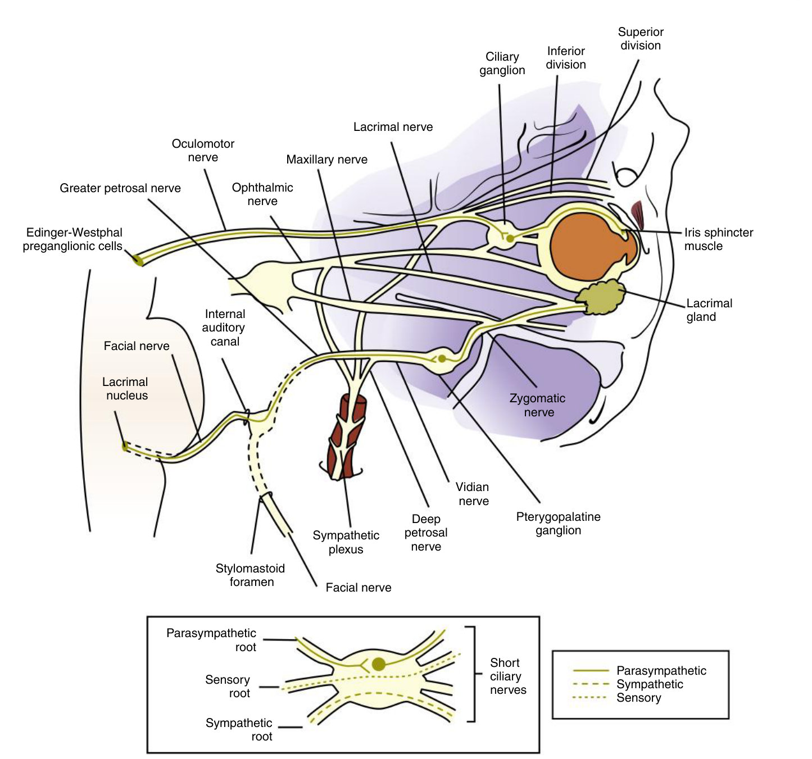
7 · The autonomic pathway to the lacrimal gland
Parasympathetic (secretomotor)
Sympathetic (vasomotor)
Handout 10 · p. 7 · TB 14 · p. 225–226 · Figs. 14.2, 14.3. The pterygopalatine ganglion is also called the sphenopalatine ganglion; it is a parasympathetic ganglion.
| Innervation (handout) | Acts on | Effect |
|---|---|---|
| Parasympathetic | secretory cells | secretomotor → more tears |
| Sympathetic | blood vessels of the gland | less blood flow → indirectly less secretion; a zygomatic branch also reaches Müller muscle of the lower lid |
TB 14 · p. 226 · TB 2 · p. 24
Touching the cornea sets off three protective responses in both eyes: blink, tearing and miosis. The afferent arm is the trigeminal nerve; the blink is the facial nerve. A lesion of either CN V or CN VII weakens the reflex. TB 14 · p. 227 · TB 13 · p. 220 · Handout 10 · p. 7
TB 14 · p. 227 (Fig. 14.4). Irritating other trigeminal branches also causes reflex tearing, for example plucking a nose hair.
8 · Oculomotor nerve (CN III)
| Fact | Your notes | |
|---|---|---|
| Innervates | SR, MR, IR, IO, levator · carries the parasympathetic fibres (sphincter, ciliary muscle) and sympathetic fibres (smooth muscle of the lid) TB 13 · p. 213 | SR, MR, IO, IR, levator · "they go to sphincter, CB to accommodation" |
| Nucleus | midbrain, at the level of the superior colliculus, ventral to the cerebral aqueduct, dorsal to the medial longitudinal fasciculus. One subnucleus per muscle: the SR fibres cross (supply the contralateral eye); the single central levator nucleus supplies both levators; MR, IR, IO are ipsilateral TB 13 · p. 213–214 | "superior midbrain" |
Handout 10 · p. 8–9 · TB 13 · p. 214 · Fig. 13.10 (Slides 10 · #15). Your note: "Superior goes Müller through superior branch, everything else goes through inferior branch?" Your notes: yes for the autonomic fibres. Sympathetic fibres to Müller follow the superior division; parasympathetic fibres follow the inferior one. TB 14 · p. 222–223
CN III is most often hit by an aneurysm of the posterior communicating artery, but any of the neighbouring arteries (superior cerebellar, posterior cerebral) can compress it. Handout 10 · p. 8 · TB 13 · p. 215
| Sign (handout list) | Why |
|---|---|
| Ptosis | levator paralysed |
| Eye down and out | SO and LR work unopposed. The textbook: the eye is always out; down should follow from the SO but is not always visible clinically |
| Cannot adduct | MR |
| In abduction: cannot move up or down | SR, IR |
| In adduction: cannot move up | IO |
| Pupil dilated | sphincter paralysed |
| Decreased accommodation | ciliary muscle paralysed |
Handout 10 · p. 9 · TB 13 · p. 215. Your notes on Slides 10 · #19: "levator muscle / SO LR still working · → MR not working" Your notes
Pupil involved or spared? The pupil fibres lie on the surface of the nerve as it leaves the midbrain. A compressive lesion (aneurysm) damages them first: a fixed, dilated pupil plus the muscle palsy. Being superficial, they are also closest to the nerve's own blood supply, so an ischaemic lesion (diabetes) usually spares the pupil. A CN III palsy with a dilated pupil is highly suspicious of a compressive intracranial lesion. The pupil detail is chapter 11. TB 13 · p. 215 · TB 14 · p. 233

9 · Trochlear nerve (CN IV)
| Fact | Your notes | |
|---|---|---|
| Innervates | superior oblique only | superior oblique |
| Nucleus | midbrain, at the level of the inferior colliculus, below the oculomotor nucleus; its fibres cross, so each nucleus supplies the contralateral SO | "inferior midbrain" |
| Special | the only cranial nerve leaving the dorsal (back) side of the brainstem; the most slender cranial nerve |
Handout 10 · p. 10 · TB 13 · p. 216 · Fig. 13.13 (Slides 10 · #20)
Eye deviation in primary position: the affected eye is elevated (hyperdeviation). Restriction: it cannot move down when adducted. Head posture: tilted toward the opposite shoulder (against the unopposed extorsion of the IO), chin down, face turned to the opposite side; a right SO palsy gives a head turned left, down, tilted to the left shoulder. Under 10 years the cause is usually congenital, at 21–40 years trauma. A nuclear lesion hits the contralateral SO; a nerve lesion the ipsilateral one. Handout 10 · p. 10 · TB 13 · p. 217 · Slides 10 · #24 Your notes: "hyperdeviation · would not be able to depress in adduction" Your notes

10 · Abducens nerve (CN VI)
| Fact | Your notes | |
|---|---|---|
| Innervates | lateral rectus | lateral rectus (LR) |
| Nucleus | pons, near the dorsal midline in the floor of the fourth ventricle. It also holds internuclear neurons that reach the contralateral MR subnucleus through the medial longitudinal fasciculus, so both eyes turn to the same side together | pons |
Handout 10 · p. 11 · TB 13 · p. 217–218 · Fig. 13.16 (Slides 10 · #25). In the sinus, sympathetic fibres travel with CN VI for a short way before joining V1. Your guidelines note: "6 is in pons into the sinus cavernosus" Your notes
The long course and the bend over the petrous ridge make CN VI susceptible to trauma and raised intracranial pressure: the brainstem is pushed back or down and the nerve is stretched over the bone. Skull-base fractures and basilar or carotid aneurysms also damage it. It is the most common acquired isolated extraocular-muscle nerve palsy in adults (in children under 18 the most common is CN IV). Handout 10 · p. 11 · TB 13 · p. 218
Eye deviation in primary position: esotropia (eye turned in by the unopposed MR), worse at distance. Restriction: cannot abduct. The patient may turn the face toward the paralysed side. A lesion of the nucleus instead gives a gaze palsy: neither eye can look toward that side. TB 13 · p. 218 · Slides 10 · #29 Your notes: "eso · abduction defect" Your notes

11 · Where the nerves run together: cavernous sinus and superior orbital fissure

Answer: Fig. 13.7 with labels

In the lateral wall, top to bottom: oculomotor n. · trochlear n. · ophthalmic n. (V1) · maxillary n. (V2). Free in the sinus beside the internal carotid a.: abducens n. Also: angle of section · cavernous sinus · pituitary gland · temporal lobe · sphenoid bone · sphenoid sinus · nasal cavity. You labelled the same on Slides 10 · #21: "ICA / CN6 / CN3 / CN4 / V1 / V2" Your notes.
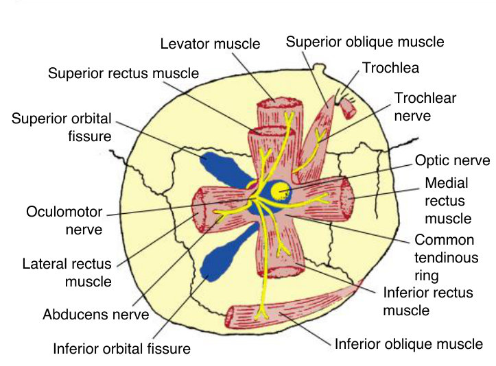
| Lesion site | What it does |
|---|---|
| CN III nucleus | ipsilateral MR, IR, IO, both levators (bilateral ptosis), both SR; ipsilateral dilated pupil and loss of accommodation TB 13 · p. 215 |
| Cavernous sinus | III, IV, V1, V2 in the wall, VI and the sympathetic fibres around the carotid: total ophthalmoplegia, pupil and accommodation may be affected, numb V1/V2 skin. CN VI is often first hit by a carotid aneurysm here; LR palsy + Horner syndrome on the same side = cavernous sinus lesion TB 13 · p. 215, 217, 218 |
| Orbit, inside the cone | III, VI and nasociliary together: only the SO still works, eye slightly down and out and nearly immobile, reduced corneal sensation; usually vision loss from the optic nerve TB 13 · p. 215, 218 |
| Orbit, above the cone | CN IV with the frontal nerve: SO weakness plus numb forehead and scalp TB 13 · p. 217 |
Your note beside "Cavernous sinus" on Handout 10 · p. 8: "if something happens here, eye stays straight and we don't feel anything" Your notes: that is the textbook's total ophthalmoplegia plus V1/V2 anaesthesia.
The three palsies side by side
| CN III | CN IV | CN VI | |
|---|---|---|---|
| Muscles lost | SR, MR, IR, IO, levator + sphincter, ciliary muscle | SO | LR |
| Primary position | ptosis · eye out (and down) | eye up (hyperdeviation) | eye in (esotropia), worse at distance |
| Cannot | adduct · elevate or depress in abduction · elevate in adduction | depress in adduction | abduct |
| Pupil, accommodation | dilated · reduced | normal | normal |
| Head posture | tilt to the opposite shoulder, chin down, face to the opposite side | face turned toward the paralysed side | |
| Typical cause (handout) | posterior communicating artery aneurysm | congenital (children), trauma | trauma, raised intracranial pressure |
Handout 10 · p. 8–11 · TB 13 · p. 215–218
12 · Facial nerve (CN VII) to the muscles around the eye
Not in the handout's outline, but a guideline objective. CN VII has a large motor root (facial muscles) and a smaller root with taste and parasympathetic fibres (lacrimal gland, §7). TB 13 · p. 219 · Review · p. 6
TB 13 · p. 219 · Fig. 13.18
| Branch | Muscle | Function of the muscle |
|---|---|---|
| Temporal (its frontal branch) | frontalis · upper orbicularis oculi | frontalis raises the brow (surprise, attention) · orbicularis closes the lid |
| Temporal, zygomatic, buccal (together) | procerus · corrugator superciliaris | procerus pulls the medial brow down (horizontal furrows over the nose) · corrugator pulls the brow down and medially (vertical furrows between the brows) |
| Zygomatic | lateral lower orbicularis | lid closure; orbicularis also lowers the brow |
| Buccal | medial lower orbicularis | lid closure |
TB 13 · p. 219 · TB 2 · p. 10, 13. The eyelid chapter puts it more simply: orbicularis by the temporal and zygomatic branches (TB 2 · p. 22); the cranial-nerve chapter adds the buccal branch for the medial lower lid. Know both.
The upper part of the facial nucleus (frontalis, procerus, corrugator, orbicularis) gets input from both motor cortices, the lower part only from the opposite one. So a one-sided cortex lesion spares the forehead and lids, while a lesion of the nucleus or the nerve paralyses the whole face on that side. TB 13 · p. 219 A paralysed orbicularis cannot close the lid: paralytic lagophthalmos, with drying of the inferior cornea, worst during sleep. TB 2 · p. 11 Your guidelines note: "CN7 lagophthalmos" Your notes. CN VII is also the efferent arm of the blink in the corneal reflex (§7).
- Long ciliary nerves from the "ant. sclera, iris, CB, cornea + TM" (you added "AI shorts check"). The textbook says only "cornea and other anterior segment structures"; the trabecular meshwork is not named. TB 13 · p. 208
- Infratrochlear nerve to the medial lids "+ conj.": the textbook names the medial eyelids, caruncle, canaliculi, lacrimal sac and side of the nose, not the conjunctiva. TB 13 · p. 208
- Parasympathetic central pathway starting in the hypothalamus: not in the textbook (see §6).
- You crossed out the lacrimal-gland page of the handout (Handout 10 · p. 7) and wrote "is innervated by sympat. system". If the lecture skipped it, §7 is lower priority, but know that the textbook gives the gland both systems and that the parasympathetic one makes the tears.
Left out because neither the handout nor the guidelines ask for them: the three corneal nerve plexuses and their numbers (chapter 3 territory), nerve loops of Axenfeld, the oculocardiac reflex, the exact layout of the subnuclei inside the CN III nucleus, fascicular CN III lesions (red nucleus, cerebral peduncle), aberrant regeneration of CN III, the tracts that coordinate eye movements, intrinsic choroidal neurons and parasympathetic vasodilation of the uvea, receptor types and eye-drop pharmacology. The pupillary light and near pathways, RAPD, tonic pupil, Horner syndrome and its drug tests are taught in chapter 11.
Key facts
5 branches form the nasociliary nerve (infratrochlear, anterior ethmoid, posterior ethmoid, long ciliary, sensory root/short ciliary) · 2 form the frontal (supratrochlear, supraorbital) · lacrimal has none · 3 nerves form V1
2 long ciliary nerves, ~3 mm each side of the optic nerve, seen at 3 and 9 o'clock · 6–10 short ciliary nerves
V2 orbital branches: infraorbital and zygomatic, both leave through the inferior orbital fissure; V2 enters the skull through the foramen rotundum
Sympathetic outflow T1–T3 · synapse in the superior cervical ganglion at C2–C3 · 3 neurons: central, preganglionic, postganglionic
Ciliary ganglion 2 × 1 mm, between LR and optic nerve, ~1 cm in front of the optic canal · 3 roots · only parasympathetic fibres synapse · ~3% of them go to the sphincter
Lacrimal: parasympathetic synapse in the pterygopalatine ganglion · greater petrosal + deep petrosal = vidian nerve
CN III divides 2–3 mm behind the SOF · nucleus at the superior colliculus · CN IV at the inferior colliculus, the only dorsal exit · CN VI and CN VII nuclei in the pons
Through the common tendinous ring: III (both divisions), VI, nasociliary · above it: IV, frontal, lacrimal
Self-check
Name the five branches that form the nasociliary nerve and one structure each one serves.
What is Hutchinson sign, and why does it work?
Which nerves form the frontal nerve, what do they supply, and where does it leave the orbit?
Trace a pain signal from the lower eyelid to the brainstem.
Give the central, preganglionic and postganglionic parts of the sympathetic route to the iris dilator.
Name three sympathetic targets in and around the eye, the route of each from the cavernous sinus, and the effect.
What are the three roots of the ciliary ganglion, and which fibres synapse there?
Describe the parasympathetic route to the eye and what it does.
Where do the parasympathetic fibres to the lacrimal gland synapse, and which nerves carry them before and after?
A patient has ptosis, the right eye turned out, cannot adduct, and the right pupil is dilated. Which nerve, which likely cause, and why the pupil?
Compare the deviation and restriction of a CN IV and a CN VI palsy, and say why CN VI is so vulnerable.
Trace CN VII to the orbicularis oculi and name which branch supplies which part of the muscle.
Sources for this chapter: Review slide "Cranial Nerves" and "Cranial Nerves (cont.)" objectives (with your typed notes) · Handout 10 "Cranial Nerve Innervation to Ocular Tissues" (with your notes) · Slides 10 (with your notes) · Textbook ch. 13, Cranial Nerve Innervation of Ocular Structures, pp. 208–220 · Textbook ch. 14, Autonomic Innervation of Ocular Structures, pp. 222–236 · Textbook ch. 2, pp. 10–24 (eyelid muscles, lagophthalmos).
The pupillary pathways
How light and a near target make the pupil constrict, and how to tell from the pupils where a lesion is.
Four guideline slides, "Pupils" and "Pupils (continued)" ×3, list these objectives: Review handout · p. 7–8
- Exam "Describe the afferent, central, and efferent structures involved in the pupil reflex" → §1
- Exam "Describe the characteristics of a relative afferent pupillary defect and how the pupils would respond when there is an afferent pupillary defect." → §2
- Exam "List the causes of a relative afferent pupillary defect and describe how these conditions would present clinically" → §2
- Exam "Describe the pathway for the near pupillary response and how that differs from the light pupillary pathway." → §3
- Exam "Describe the pupil characteristics when there is a lesion in the area of the central pupillary fibers." → §3
- Exam "Describe the pupillary responses and general characteristics when there is a lesion affecting any part of the parasympathetic pupillary pathway" → §4
- Exam "Describe the pupillary responses and general characteristics when there is a lesion affecting the sympathetic pupillary pathway" → §5
- Exam "Describe the pharmacologic testing used to diagnose Horner syndrome" → §5
- Exam "Describe the characteristics of physiologic anisocoria" → §6
- Exam "Describe how lesions in the afferent, central, and efferent pupillary pathways will affect the direct, consensual, and near responses, as well as normal and abnormal pupillary reactions that occur during the swinging flashlight test" → §7, the summary table
The general autonomic routes (sympathetic and parasympathetic supply of the eye, ciliary ganglion) are in chapter 10. This chapter adds only what the reflexes and lesions need.
1 · The pupillary light pathway
Light into one eye makes both pupils constrict. The fibres that carry this signal are called pupillary fibres, as distinct from the visual fibres that carry the image. TB 14 · p. 229 Afferent = sensory, carrying information in; efferent = motor, carrying it away. Your notes
| Limb | Structures, in order | Detail to know |
|---|---|---|
| Afferent | retina → optic nerve → chiasm → optic tract → brachium of the superior colliculus → pretectal (olivary) nucleus of the midbrain | Signal starts in intrinsically photosensitive retinal ganglion cells, with input from rods and cones. Pupillary fibres run with the visual fibres (nasal fibres cross in the chiasm), then leave the posterior third of the optic tract before the LGN. Synapse in the pretectal nucleus. Handout 11 · p. 1 · TB 14 · p. 229 |
| Central | pretectal nucleus → Edinger-Westphal preganglionic cells of both sides | Fibres go about equally to both sides; the crossing ones travel in the posterior commissure. Handout 11 · p. 1 · TB 14 · p. 229 |
| Efferent | Edinger-Westphal cells → oculomotor nerve (CN III), inferior division → ciliary ganglion (synapse) → short ciliary nerves → iris sphincter | The parasympathetic route of chapter 10. In CN III the pupil fibres lie superficially as the nerve leaves the midbrain, then move centrally and inferiorly in the orbit. Handout 11 · p. 1 · TB 14 · p. 223–224, 229 |
Handout 11 · p. 1 · TB 14 · p. 229 · Fig. 14.10. The handout says "pretectal nucleus / pretectal area", the textbook "pretectal olivary nucleus": the same structure.
Direct response: the illuminated eye constricts. Consensual response: the other eye constricts too. The consensual response exists because the pathway crosses twice: nasal fibres in the chiasm, and about half the fibres of each pretectal nucleus in the posterior commissure. Handout 11 · p. 2 · TB 14 · p. 231
Label the light pathway

Answer: Fig. 14.10 with labels

Short ciliary nerve · ciliary ganglion · optic nerve · optic chiasm · oculomotor nerve · optic tract · cerebral aqueduct · Edinger-Westphal preganglionic cells · brachium of the superior colliculus · pretectal olivary nucleus · posterior commissure.
2 · Disruption of the afferent pathway: the RAPD
| Feature | What you see |
|---|---|
| Rule | An afferent lesion weakens the direct response of the same eye and the consensual response of the other eye. Light into the healthy eye gives normal responses in both. Handout 11 · p. 2 · TB 14 · p. 231 |
| Complete lesion | All fibres of one eye lost: light into that eye gives no direct and no consensual response. TB 14 · p. 231–232 |
| Partial lesion = RAPD | More often only some fibres are damaged; the defect shows only when one eye is compared with the other, hence relative afferent pupillary defect. TB 14 · p. 232 |
| Pupil size | Pupils stay equal, with no anisocoria: the weakened signal still reaches both Edinger-Westphal nuclei equally. Your notes follows from TB 14 · p. 229, 232 |
| Near response | Normal: the near pathway does not use the pretectal route (§3). |
Swinging flashlight test

- Patient fixates a distance target (so no near response).
- Swing the light from eye to eye, several times, rhythmically.
- Light each pupil equally: same brightness, same time (about 2–3 s).
- Normal: little or no change in pupil size as the light switches.
- RAPD: when the light swings to the affected eye, both pupils dilate (or dilate quicker); when it swings back to the healthy eye, both constrict.
Handout 11 · p. 2 · TB 14 · p. 232. Brighter light shows subtle defects; record the light level, because the RAPD measured depends on it. TB 14 · p. 232
Causes of an RAPD and how they present
| Site | Which eye has the RAPD | Clinical picture |
|---|---|---|
| Retina | same eye | Must involve a large amount of retina to cause an RAPD. Your notes Handout 11 · p. 3 |
| Optic nerve | same eye | The most common site; e.g. optic neuritis: light into the affected eye → neither pupil constricts well; light into the other eye → both constrict normally (Fig. 14.12). A small nerve lesion can give a large RAPD. Your notes Handout 11 · p. 3 · TB 14 · p. 232 · Slides 11 · #4 |
| Chiasm | depends on the fibres lost | Listed by the textbook, not by the handout. TB 14 · p. 232 |
| Optic tract | contralateral eye | Behind the chiasm each tract carries fibres from both eyes, so an RAPD shows only if many more fibres of one eye are lost. The tract holds more crossed than uncrossed fibres, so a complete tract lesion gives an RAPD in the eye opposite the lesion. Visual field: homonymous hemianopia, the same side in both eyes (chapter 12). Your notes Handout 11 · p. 3 · TB 14 · p. 232 |
| Superior brachium | contralateral eye Your notes | Pupillary fibres only, after the visual fibres have left for the LGN, so an RAPD with a normal visual field. Your notes Handout 11 · p. 3 · TB 14 · p. 232 |
A cataract or other media opacity does not cause an RAPD in its own eye. A dense cataract may even cause an RAPD in the other eye: light scattered across the retina probably gives a stronger response on the cataract side. An RAPD in a cataract eye therefore means a retinal or optic nerve problem as well: you cannot blame the poor vision on the cataract. Handout 11 · p. 3 · TB 14 · p. 232 Lecture: "important to know!"
3 · Disruption in the central pathway, and the near response
| Midbrain lesion of … | Result |
|---|---|
| one pretectal nucleus | Possibly no pupil defect: the other pretectal nucleus still supplies both Edinger-Westphal nuclei. TB 14 · p. 232 |
| fibres pretectal → Edinger-Westphal (dorsal midbrain) | Both pupils show a poor direct and consensual response to light but a brisk near response: light-near dissociation. Handout 11 · p. 4 · TB 14 · p. 232 |
The near response (accommodation-convergence reaction)
Not a true reflex but a synkinesis of three actions when a target comes near along the midline: convergence (medial recti), accommodation (ciliary muscle) and miosis (sphincter, for depth of field). Each can occur without the others: plus lenses → miosis + convergence without accommodation; base-in prisms → miosis + accommodation without convergence; bright light → miosis alone. TB 14 · p. 228–229
Handout 11 · p. 4 (afferent · CNS · efferent) · TB 14 · p. 229 · Fig. 14.9. The parasympathetic part runs via the ciliary ganglion and short ciliary nerves, as for light.
| Light response | Near response | |
|---|---|---|
| Afferent | leaves the optic tract before the LGN → brachium → pretectal nucleus | full visual pathway: LGN → optic radiations → striate cortex |
| Central | pretectal nucleus → Edinger-Westphal, both sides, through the dorsal midbrain (posterior commissure) | striate cortex → frontal eye fields → Edinger-Westphal + medial rectus subnucleus; reaches Edinger-Westphal from a more ventral direction, bypassing the pretectal route |
| Efferent | CN III → ciliary ganglion → short ciliary nerves → sphincter | the same, plus the ciliary muscle and, through CN III, the medial rectus |
| Result | miosis only | miosis + accommodation + convergence |
Handout 11 · p. 4 · TB 14 · p. 229, 232
Label the near pathway
Answer: Fig. 14.9 with labels
Medial rectus muscle · short ciliary nerve · ciliary ganglion · optic nerve · frontal eye fields · optic tract · oculomotor nerve · Edinger-Westphal preganglionic cells · oculomotor nucleus (medial rectus subnucleus) · lateral geniculate nucleus · visual fibres of the optic radiations · striate cortex.
Light-near dissociation
The near response is retained and exceeds the best light response; looking back to distance, the pupils redilate briskly. A near response greater than the light response is always pathological. TB 14 · p. 232 · Fig. 14.13 · Slides 11 · #7–8
| Argyll Robertson pupil | Dorsal midbrain syndrome | |
|---|---|---|
| Pupils | very small without a light stimulus; irregular (TB) | normal to mid-dilated (handout) · "fixed, mid-dilated" (TB) |
| Light / near | bilateral light-near dissociation | |
| Cause | most commonly neurosyphilis; also reported with diabetes, multiple sclerosis, stroke, Wernicke encephalopathy | most commonly a pineal gland abnormality: a tumour pressing on the back of the midbrain and the crossing pupillary fibres. Slide 9: "Parinaud's syndrome – pineal GBM" |
Handout 11 · p. 6 · TB 14 · p. 233 · Slides 11 · #9. Other causes of light-near dissociation (TB): blindness from bilateral afferent damage, aberrant regeneration of medial rectus fibres to the sphincter, tonic pupil.
4 · Disruption of the efferent parasympathetic pathway
A parasympathetic lesion makes the affected eye show poor direct, consensual and near responses: the sphincter cannot be driven. Result: ipsilateral mydriasis and anisocoria worse in bright light (the healthy pupil constricts, the affected one cannot). The larger pupil is the abnormal one. Handout 11 · p. 7 · TB 14 · p. 233
| Cause | Site | Characteristics |
|---|---|---|
| CN III palsy | oculomotor nucleus or nerve | Large pupil, poor light and near responses, plus other CN III signs: ptosis (levator), weak superior, medial and inferior rectus and inferior oblique: check motility. Pupil fibres lie superficially, so compressive lesions (aneurysm) involve the pupil early, while ischaemic ones (diabetes) often spare it. A third nerve palsy with a dilated pupil is highly suspicious of a compressive lesion. Handout 11 · p. 7 · TB 14 · p. 229, 233 |
| Tonic pupil | ciliary ganglion or short ciliary nerves (postganglionic) | Dilated pupil, poor light response, loss of accommodation; near response kept but slow, with slow, long redilation (tonic). Segmental constriction: only sections of the sphincter work, so the border is irregular (Fig. 14.15, Slides 11 · #10–11). Decreased corneal sensitivity (corneal sensory fibres pass through the ganglion). Cholinergic denervation supersensitivity of the sphincter. Late: the pupil becomes small. Handout 11 · p. 7–8 · TB 14 · p. 233–235 |
| · causes | (1) autonomic dysfunction, e.g. diabetes; (2) orbital mass, trauma or surgery; (3) idiopathic = Adie tonic pupil: typically a woman of 20–40, 90% with diminished tendon reflexes. Handout 11 · p. 7 · TB 14 · p. 235 | |
| Pharmacologically dilated pupil | sphincter receptors blocked by a drug | Recent fixed, dilated pupil; ask about the job (pharmacist, nurse, farmer, exterminator). Some "get the red out" drops dilate by stimulating the dilator. Handout 11 · p. 8 · TB 14 · p. 235 |
Pilocarpine testing
Pilocarpine is a direct-acting cholinergic agonist: it acts on the sphincter itself, not on the nerve. TB 14 · p. 228
| Drop | Normal pupil | Tonic pupil | CN III palsy | Pharmacologic dilation |
|---|---|---|---|---|
| 0.125% pilocarpine (dilute) | little or no effect | constricts much more than the normal eye (supersensitive) | — | no constriction |
| 1% pilocarpine | constricts | constricts | constricts | no constriction: the receptors are blocked |
Handout 11 · p. 8 (1% for the pharmacologically dilated pupil) · TB 14 · p. 234–235 (0.125% for tonic; drug-dilated pupil responds to neither) · Fig. 14.16. The handout lists only the 1% test; the 0.125% test is the textbook's.
5 · Disruption of the efferent sympathetic pathway: Horner syndrome
| Sign | Why |
|---|---|
| Miosis | No dilator tone against the sphincter. Handout 11 · p. 9 · TB 14 · p. 235 |
| Anisocoria greater in dim light | In the dark the healthy pupil dilates, the Horner pupil hardly; the smaller pupil is the abnormal one. Handout 11 · p. 9 · TB 14 · p. 233, 235 |
| Normal reaction to light | The parasympathetic pathway is intact: brisk direct, consensual and near responses; swinging flashlight test normal. Handout 11 · p. 9 · TB 14 · p. 235 |
| Dilation lag | Normal pupil dilates within 5 s of lights off (dilator active + sphincter relaxed). Horner pupil dilates only by sphincter relaxation: 10–20 s. So anisocoria is greater at 5 s than at 15 s (Fig. 14.19). Distinguishes Horner from physiologic anisocoria. Handout 11 · p. 9 · TB 14 · p. 236 |
| Ptosis | Mild: loss of the smooth Müller muscle, not the levator. The lower lid rises slightly, so the fissure narrows (pseudo-enophthalmos). Handout 11 · p. 9 · TB 14 · p. 235 |
| Facial anhidrosis | No sweating on that side, with central and preganglionic lesions. Postganglionic: only the medial forehead, because most facial sweat fibres leave with the external carotid artery. Handout 11 · p. 9 · TB 14 · p. 222, 235 |
Congenital Horner also gives iris heterochromia (Fig. 14.17, Slides 11 · #15). TB 14 · p. 236
The three-neuron pathway and where it breaks
Handout 11 · p. 10 (⇒ marks a synapse) · TB 14 · p. 222, 235 · Fig. 14.18. Müller muscle is reached via the oculomotor nerve's superior division (chapter 10).
| Neuron | Causes |
|---|---|
| 1st · central | stroke, multiple sclerosis |
| 2nd · preganglionic | thoracic injury or surgery, metastatic disease in the chest (the fibres cross the lung apex and loop around the subclavian artery) |
| 3rd · postganglionic | skull base fracture, internal carotid injury; painful Horner = internal carotid dissection: an emergency · Horner + CN VI paresis = cavernous sinus lesion |
Handout 11 · p. 10 · TB 14 · p. 235
The handout and the textbook's Horner section say the first neuron ends in the cervical spinal cord. The textbook's general pathway places the ocular preganglionic cells in the lateral horn of T1–T3, leaving in the first three thoracic nerves (chapter 10). Know both: "cervical cord" for the Horner chain, T1–T3 for the segments. Handout 11 · p. 10 · TB 14 · p. 222, 235


Pharmacologic testing for Horner syndrome
| Drug | Type | Normal eye | Horner eye | Tells you |
|---|---|---|---|---|
| Apraclonidine 0.5 or 1% Lecture | direct-acting alpha-adrenergic agonist: mostly alpha 2, weak alpha 1 | no change or slight miosis | dilates, and the ptosis improves: denervation up-regulates alpha 1 receptors on the dilator, which become supersensitive. Needs time: usually 1–2 weeks (reported from 36 h) | Horner: yes / no |
| Cocaine 2–10% TB | indirect agonist: blocks norepinephrine reuptake | dilates in 30–60 min | little or no dilation (no norepinephrine being released) | Horner: yes / no |
| Hydroxyamphetamine 1% TB | indirect agonist: releases stored norepinephrine | dilates | preganglionic lesion: dilates (3rd neuron intact) · postganglionic: no dilation | where the lesion is; give it 24–48 h after cocaine |
Handout 11 · p. 11 (apraclonidine only) · TB 14 · p. 228, 236–237 · Fig. 14.20, 14.21. The lecture taught apraclonidine; the textbook adds cocaine and hydroxyamphetamine.
6 · Physiologic anisocoria
| Feature | Physiologic (simple, benign) anisocoria |
|---|---|
| How common | about 20% of people |
| Size | difference usually < 1 mm; more apparent in dim than bright light |
| Side | may switch sides; fluctuates, e.g. with stress Your notes |
| Reactions | both pupils round, react well to all stimuli, dilate equally in the dark: no dilation lag |
| Why | asymmetric sympathetic/parasympathetic balance; possibly asymmetric supranuclear inhibition of the Edinger-Westphal cells |
Handout 11 · p. 11 · TB 14 · p. 233
Which pupil is abnormal? Sorting anisocoria
- Anisocoria greater in dim light? The smaller pupil is abnormal.
- dilation lag, ptosis, anhidrosis, apraclonidine dilates it → Horner syndrome
- < 1 mm, no dilation lag, equal dilation in the dark → physiologic anisocoria
- Anisocoria greater in bright light? The larger pupil is abnormal: a parasympathetic defect.
- ptosis + motility problems → CN III palsy
- slow tonic near response, segmental constriction, 0.125% pilocarpine constricts → tonic pupil
- no response even to 1% pilocarpine → pharmacologically dilated pupil
TB 14 · p. 233–236 · Handout 11 · p. 7–11
7 · Putting it together: lesion → responses
Example lesions on the right (OD). "Light OD" = light shone into the right eye.
| Lesion | Light OD: direct OD / consensual OS | Light OS: direct OS / consensual OD | Near | Swinging flashlight | Pupil size |
|---|---|---|---|---|---|
| Normal | brisk / brisk | brisk / brisk | normal | no change on switching | equal |
| Afferent, partial: R optic nerve or retina | weak / weak | normal / normal | normal | both dilate when the light reaches OD: RAPD OD | equal |
| Afferent, complete: R optic nerve | none / none | normal / normal | normal | both dilate fully at OD | equal |
| R optic tract or R superior brachium | normal / normal | weaker / weaker | normal | RAPD OS (contralateral) | equal |
| Central: dorsal midbrain (pretectal → Edinger-Westphal fibres) | poor / poor | poor / poor | brisk in both: light-near dissociation | no relative difference | Argyll Robertson: small · dorsal midbrain: normal to mid-dilated |
| Efferent parasympathetic: R CN III | poor / normal | normal / poor | poor OD | not usable for an RAPD (the R pupil hardly moves); the L pupil shows the afferent input | OD larger; worse in bright light; + ptosis, motility |
| Efferent parasympathetic: R tonic pupil | poor / normal | normal / poor | OD slow, tonic, slow redilation | as above | OD larger; worse in bright light |
| R pharmacologic dilation | none / normal | normal / none | none OD | as above | OD large; no response to 1% pilocarpine |
| Efferent sympathetic: R Horner | brisk / brisk | brisk / brisk | normal | normal | OD smaller; worse in dim light; dilation lag; ptosis |
| Physiologic anisocoria | brisk / brisk | brisk / brisk | normal | normal | < 1 mm, more in dim light; no dilation lag |
Built from Handout 11 · p. 2–11 · TB 14 · p. 231–236. The swinging-flashlight column for efferent lesions is reasoned from the rules above, not stated in either source: an efferent lesion does not cause an RAPD.
- "Hippus should be the same in both eyes (AI check)". The textbook defines hippus as the normal, constant, rhythmic change of pupil size that reflects the autonomic balance, independent of light; it does not say whether it is equal in both eyes. During sleep the pupils are small (parasympathetic predominates). TB 14 · p. 225
- Retinal detachment surgery is "one of the most common" causes of tonic pupil. The textbook says only "orbital surgeries". Your notes
- Pancoast tumour as a preganglionic Horner cause ("starting in liver"). The textbook says only "metastatic disease involving the chest": the "liver" part is not in the sources, so check it. Your notes
- "Vasculopathic" as a postganglionic cause; patients rarely notice the anhidrosis themselves; a Horner with headache or neck pain should go to the emergency room, "hours away from a stroke". Your notes (the emergency is in TB 14 · p. 235)
- Scopolamine patches (motion sickness) and farm chemicals as causes of a pharmacologically dilated pupil. The textbook names farmers, crop dusters, exterminators. Your notes
- "Anisocoria is a sign of Horner syndrome, but you do not have to have it." Your notes
- Review notes: "dilation lag is normally not tested; do it after the swinging flashlight test by taking the light away", then compare at 5 s and 15 s. Your notes
Left out because no objective or handout point needs it: the autonomic supply of the lacrimal gland and of the choroidal and conjunctival vessels, the corneal reflex (Fig. 14.4), neurotransmitter and receptor details beyond what the drug tests need, drug-induced mydriasis for fundus examination, the inhibitory pathway to the dilator through the accessory optic system, theories of why the tonic pupil keeps a near response, and the 1% phenylephrine alternative for localising Horner. The general sympathetic and parasympathetic routes and the ciliary ganglion are taught in chapter 10.
Key facts
2 crossings make the consensual response: nasal fibres in the chiasm · about half the pretectal fibres in the posterior commissure
Pupillary fibres leave the optic tract's posterior third, before the LGN
Swinging flashlight: about 2–3 s per eye, distance fixation, equal light
Normal pupil dilates within 5 s in the dark; Horner pupil takes 10–20 s; compare at 5 s and 15 s
Physiologic anisocoria: about 20% of people, < 1 mm, no dilation lag
Pilocarpine 0.125% → tonic pupil constricts · 1% → every pupil except a drug-dilated one constricts
Apraclonidine 0.5–1%: Horner pupil dilates; needs about 1–2 weeks of denervation · Cocaine 2–10%, 30–60 min · Hydroxyamphetamine 1%, 24–48 h after cocaine
Adie tonic pupil: woman 20–40 years, 90% with diminished tendon reflexes
Sympathetic chain: 3 neurons: central (hypothalamus → cord) · preganglionic (cord → superior cervical ganglion) · postganglionic (→ dilator)
Self-check
Trace the pupillary light pathway from the retina to the sphincter, naming the afferent, central and efferent parts.
Why does light into one eye constrict the other pupil?
Right optic neuritis: what happens to each pupil when light is shone into the right eye, then into the left, and during the swinging flashlight test?
List the sites that can cause an RAPD. Which eye has the RAPD with a complete right optic tract lesion, and why?
A patient has a dense cataract in the right eye and an RAPD in the right eye. Can the cataract explain it?
How does the near pupillary pathway differ from the light pathway, and why does that allow light-near dissociation?
Compare Argyll Robertson pupils with dorsal midbrain syndrome.
A left pupil is large, reacts poorly to light and slowly to near, and the iris border constricts only in segments. Name the condition, its site, and the drop test.
Why is a dilated pupil with a third nerve palsy more worrying than a pupil-sparing one?
Give the six features of Horner syndrome, and the three neurons of the pathway with one cause each.
What does apraclonidine do in a normal eye and in a Horner eye, and why?
How do you tell physiologic anisocoria from Horner syndrome?
Sources for this chapter: Handout 11 "Pupillary Pathway" (with your notes) · Slides 11 "Pupillary Pathways" · Review handout p. 7–8 (exam guidelines, with your typed notes) · Textbook ch. 14, Autonomic Innervation of Ocular Structures, pp. 222–237.
The visual pathway
From the retina to the occipital cortex: where the fibres run at every level, and how to read the lesion site from the visual field.
Two guideline slides, "Visual Pathway" and "Visual Pathway (cont.)", list these objectives: Review handout · p. 8
- Exam "Describe how areas of the visual field are represented on the retina" → §8
- Exam "Describe how the visual fibers exit the eye through the optic disc and how this would affect the visual field" → §9, §11
- Exam "Describe where the visual fibers are located in the optic nerve" → §9
- Exam "Describe how the fibers travel through the chiasm and how this affects the visual field" → §3, §9, §11
- Exam "Describe the location of inferior, superior, and macular fibers in the optic tract, lateral geniculate nucleus, optic radiations, and occipital lobe." → §10, the summary table
- Exam "Describe the location of the macular and peripheral vision representation on the visual cortex and how this affects the visual field." → §7, §11
- Exam "Correlate lesions in areas of the visual pathway with the visual field and vice versa" → §11, the lesion table and the three questions
Your note on the first page of the handout: "one of the most important one!" Your notes Retina and optic disc anatomy are in chapter 7; the pupillary fibres that leave the tract are in chapter 11.
1 · Overview: the retinogeniculocortical pathway
The name gives the three stations: retino- (retina) · geniculo- (lateral geniculate nucleus) · cortical (visual cortex). Handout 12 · p. 1 Photoreceptor → bipolar (and amacrine) cell → ganglion cell: all these synapses lie in the retina. The ganglion cell axons are the fibres of the optic nerve, chiasm and tract; the next synapse is in the LGN. TB 15 · p. 239
Handout 12 · p. 1–2 · TB 15 · p. 239 · Fig. 15.1
2 · Optic nerve (cranial nerve II)
Visual fibres: about 90% end in the LGN; the other ~10% go to centres for the pupil, circadian rhythm and orienting head and eyes. 1 to 2.22 million fibres. Length 5–6 cm, in four segments. TB 15 · p. 240
| Segment | Length | What to know |
|---|---|---|
| 1 · Intraocular | 0.7–1 mm | = optic disc / optic nerve head. Ganglion cell axons from all over the retina converge on the disc and turn 90° to leave the globe. Prelaminar and laminar parts, named by the lamina cribrosa. Handout 12 · p. 3 · TB 15 · p. 240 Physiologic cup: a depression in the disc surface, size varies widely. TB 8 · p. 132 It enlarges when nerve fibre tissue is lost in glaucoma. TB 4 · p. 54 Blind spot: the disc has no photoreceptors, so it gives the physiologic blind spot. TB 8 · p. 132 |
| 2 · Intraorbital | 30 mm | Longer than the globe-to-apex distance: a slight S-curve lets the eye move without stretching it. Surrounded by the rectus muscles; the superior and medial rectus sheaths adhere to it (pain on eye movement in optic neuritis). Three meningeal sheaths: dura (outer) · arachnoid · pia (inner); the subarachnoid space holds CSF and is continuous with the intracranial one. Handout 12 · p. 4 · TB 15 · p. 240 Myelination: behind the lamina cribrosa, by oligodendrocytes (the CNS myelin cells); the lamina is thought to bar them, so the retina is unmyelinated. Diameter 1.5–1.8 mm at the retina → 3 mm after leaving the globe → 4–5 mm with sheaths. Handout 12 · p. 4 · TB 15 · p. 240 |
| 3 · Intracanalicular | 6–10 mm | In the optic canal, between the lesser wing and the body of the sphenoid (chapter 8). The ophthalmic artery enters the nerve's dural sheath here; the arachnoid merges with the pia in the canal. Handout 12 · p. 5 · TB 10 · p. 163 · TB 15 · p. 240 |
| 4 · Intracranial | 10–16 mm | Only the pia continues, through the subarachnoid space to the chiasm. Above: anterior perforated substance, olfactory tract root, anterior cerebral artery · medial: sphenoid sinus (thin bone) · below, then lateral: internal carotid artery. Handout 12 · p. 5 · TB 15 · p. 240 |
Raised intracranial CSF pressure is passed into the optic nerve sheaths, compresses the nerve and stops axoplasmic flow in the prelaminar fibres: bilateral swelling of the optic disc. Disc swelling caused by raised intracranial pressure is called papilledema (Fig. 15.3). Handout 12 · p. 4 · TB 15 · p. 240 · Slides 12 · #9 Your notes: the disc margins blur because of the fluid pressure. Your notes
3 · Optic chiasm
Roughly rectangular, ~15 mm wide × 8 mm front-to-back × 4 mm high, in the subarachnoid space bathed in CSF. TB 15 · p. 240 "Important to know what is around it" Your notes: the pituitary gland below it is the commonest source of a bitemporal defect (§11). TB 15 · p. 250
| Direction | Neighbour |
|---|---|
| Around | lies within the circle of Willis (a common site of aneurysms) |
| Anterior and superior | anterior cerebral and anterior communicating arteries |
| Each lateral side | internal carotid artery |
| Above | hypothalamus and the floor of the third ventricle |
| Below (~1 cm) | pituitary gland in the sella turcica |
| Immediately posterior | infundibulum (pituitary stalk) |
Handout 12 · p. 6 · TB 15 · p. 241 · Figs. 15.4, 15.5 (Slides 12 · #10). Position over the sella: directly above in 75%; prefixed (short nerves, over the front of the pituitary) or postfixed (long nerves, over its back). TB 15 · p. 241–242
Arrangement of fibres: nasal fibres cross (decussate) to the contralateral tract; temporal fibres stay ipsilateral. Crossed : uncrossed ≈ 53 : 47. Result: everything in the left visual field ends up in the right brain, and the right field in the left brain. Handout 12 · p. 6 · TB 15 · p. 247, 249 Fibre details are in §9.
4 · Optic tract
A flattened band (~3.5 mm high, 5.1 mm long) from the posterolateral corner of the chiasm to the LGN, along the cerebral peduncle. Behind the chiasm the pathway runs on both sides of the brain. TB 15 · p. 242–243
| Destination | Function |
|---|---|
| LGN (most fibres) | conscious vision: the visual pathway proper Handout 12 · p. 7 · TB 15 · p. 242 |
| Superior colliculus | visual orientation, foveation, control of saccades (does not analyse for perception) TB 15 · p. 244 · your notes: "reflex head + saccadic movements" Your notes |
| Suprachiasmatic nucleus (hypothalamus) | synchronises the circadian rhythm TB 15 · p. 248 |
| Pretectum (pretectal nucleus) | afferent limb of the pupillary light reflex, via the superior brachium (chapter 11) TB 15 · p. 242 |
The handout lists all three side branches as leaving the optic tract (Handout 12 · p. 7). The textbook says the same for the tract (TB 15 · p. 242) but also describes the suprachiasmatic fibres as leaving the back of the chiasm (TB 15 · p. 248). Know both.
5 · Lateral geniculate nucleus (LGN)
On the dorsolateral thalamus; all senses except smell pass through the thalamus. The ganglion cell axons end here, and most LGN output goes to the visual cortex. It is not a simple relay: it also gets cortical feedback and regulates what is sent on. TB 15 · p. 243
| Pathway | LGN layers | Cells | Carries |
|---|---|---|---|
| M · magnocellular | 1, 2 (inferior) | large | movement detection, low-spatial-frequency contrast TB 15 · p. 244 · "flicker of light" Your notes |
| P · parvocellular | 3, 4, 5, 6 | medium | colour, high-spatial-frequency contrast TB 15 · p. 244 · "visual acuity" Your notes |
| K · koniocellular | a thin layer below each of the six | small | input from short-wavelength (blue) cones TB 15 · p. 243 · "blue and yellow colour" Your notes |
Handout 12 · p. 8 names only P and M cells; the koniocellular layers are from the textbook and your notes.
Each layer holds a retinotopic map of the contralateral hemifield, and the maps are stacked: a line through all six layers hits cells for the same point of the field. The fibres leave through the posterior limb of the internal capsule as the optic radiations. TB 15 · p. 248
6 · Optic radiations (geniculocalcarine tract)
They fan out from the LGN deep in the white matter to the striate cortex. TB 15 · p. 243
| Bundle | Route | Carries |
|---|---|---|
| Inferior (anterior bundle) | from the lateral LGN, sweeps forward around the tip of the temporal horn of the lateral ventricle = Meyer loop, through the temporal lobe | inferior retina → superior field |
| Superior (posterior bundle) | from the medial LGN, through the parietal lobe, lateral to the occipital horn | superior retina → inferior field |
| Macular | between the two | macula |
Handout 12 · p. 9 · TB 15 · p. 243, 249 · Figs. 15.8, 15.17
7 · Visual cortex
Also called the primary visual cortex, V1, or striate cortex (from the white myelinated stria of Gennari). It lies almost entirely on the medial surface of the occipital lobe, about 1 cm wrapping round the posterior pole onto the lateral surface; most of it is buried in the calcarine fissure. Handout 12 · p. 9 · TB 15 · p. 243–244
| Part | Where | Receives | Lesion gives |
|---|---|---|---|
| Calcarine fissure | from the parieto-occipital sulcus to the posterior pole; divides V1 | the horizontal meridian runs along its base | |
| Cuneus gyrus | above the calcarine fissure | superior radiations = superior retina | inferior field defect |
| Lingual gyrus | below the calcarine fissure | inferior radiations (Meyer loop) = inferior retina | superior field defect |
| Most posterior part (occipital pole) | tip of the lobe | macula (superior macula in the cuneus, inferior in the lingual gyrus); a large share of V1 for a small retinal area | central (macular) homonymous defect |
| Anterior part | toward the parietal lobe | peripheral retina; the most anterior strip = periphery of the nasal retina = the temporal crescent | peripheral defect, macula spared |
Handout 12 · p. 9–10 · TB 15 · p. 244, 249, 252, 254 · Fig. 15.9 (Slides 12 · #15, #23)

Answer: Fig. 15.9 with labels

Arrow: calcarine fissure · 1 cuneus gyrus (above) · 2 lingual gyrus (below).
A homonymous defect from an occipital lesion may leave central vision intact: macular sparing, accepted only if at least 3° is spared (fixation wobbles 1–2°). Explanations: the occipital pole may have a dual blood supply (posterior and middle cerebral arteries), and the macular projection covers a very large area. TB 15 · p. 246, 254
8 · The visual field on the retina
The eye's optics invert and reverse the image: TB 15 · p. 249 · Fig. 15.18
| Part of the field | Is imaged on | Reaches the cortex |
|---|---|---|
| Superior field | inferior retina | below the calcarine fissure (lingual gyrus) |
| Inferior field | superior retina | above the calcarine fissure (cuneus) |
| Nasal field | temporal retina | ipsilateral hemisphere (temporal fibres do not cross) |
| Temporal field | nasal retina | contralateral hemisphere (nasal fibres cross) |
| Fixation point | fovea | occipital pole |
TB 15 · p. 249. Your notes: "Gesichtsfeld vs. Netzhautfeld": fibres and fields both use nasal/temporal/superior/inferior, so always say which one you mean. TB 15 · p. 249 gives the same warning.
- The disc is always nasal to the macula on the retina, so the blind spot lies in the temporal field of each eye. Handout 12 · p. 12 · TB 15 · p. 249 · Fig. 15.19
- Aligning the fields: each eye is tested alone, looking at a fixation point; the field is split into four quadrants by a vertical and a horizontal line through fixation. TB 15 · p. 249 On the printouts the left eye's field sits on the left and the right eye's on the right, so each blind spot is on the outer (temporal) side: "right eye blind spot on the right, left eye blind spot on the left". Slides 12 · #6, #18 Your notes
- The temporal field is slightly larger than the nasal. The nasal field of one eye overlaps the temporal field of the other, except the far-temporal temporal crescent, seen by one eye only (nose and orbit block it for the other). TB 15 · p. 249
- "Right visual field" means the right side of the field (of both eyes), not the right eye's field. The right side of the field is seen by the left cortex. Handout 12 · p. 11 · TB 15 · p. 249 Exam
9 · Fibres at the disc, in the optic nerve and in the chiasm
Retina and disc
| Fibre group (Fig. 15.12 colour) | Course in the retina | Enters the disc at |
|---|---|---|
| Papillomacular bundle (blue) | straight from the macula | temporal side; about ⅓ of the disc for only 1/20 of the retinal area |
| Temporal fibres (yellow) | cannot cross the horizontal raphe (a line through the fovea): they arch above and below the macula | superior and inferior poles (ST above, IT below); about ⅓ of the disc |
| Nasal to macula, temporal to disc (green) | radiate to the disc | superior and inferior disc, nasal to the temporal fibres (the temporal fibres pass through them) |
| Nasal to the disc (red) | radiate straight | nasal side; about ⅓ of the disc |
Handout 12 · p. 13 · TB 15 · p. 246 · Fig. 15.12 (Slides 12 · #4, #19). Nasal and temporal retina are split by a vertical line through the fovea. Peripheral fibres lie more superficial (vitread) than central ones. TB 15 · p. 246–247
Optic nerve
Just behind the lamina cribrosa the fibres keep the disc arrangement; within a short distance the macular fibres move to the centre, and the rest take their logical quadrants: ST superotemporal, IT inferotemporal, SN superonasal, IN inferonasal. Handout 12 · p. 14 · TB 15 · p. 247 · Fig. 15.13B (Slides 12 · #8, #20)

Answer: Fig. 15.13 with labels

A (disc): M on the temporal third · ST superior pole · IT inferior pole · SN and IN on the nasal side. B (nerve): M in the centre, ST · SN · IN · IT in the four quadrants.
Chiasm
| Fibres | Course through the chiasm |
|---|---|
| Temporal (ST, IT) | do not cross; run straight back on the lateral side into the ipsilateral tract |
| Inferior nasal | cross anteriorly, at a large almost 90° angle (most easily compressed). They were said to loop 1–2 mm into the opposite optic nerve (Wilbrand knee), but that is controversial |
| Superior nasal | cross more posteriorly, at a shallower angle |
| Nasal macular | cross; spread through most of the chiasm |
Handout 12 · p. 6 · TB 15 · p. 247–248 · Fig. 15.14 (Slides 12 · #11, #21). Nasal fibres stay central even after crossing; most cross paracentrally.

Answer: Fig. 15.14 with labels

Optic nerve · optic chiasm · optic tract. Arrows, left to right: inferior nasal fibres (red, cross) · superior nasal fibres (purple, cross) · superior temporal fibres (green dashed, stay) · inferior temporal fibres (blue dashed, stay).
10 · Superior, inferior and macular fibres behind the chiasm
Behind the chiasm, crossed and uncrossed fibres from the same part of the field intermingle. The rule all the way to the cortex: superior retina medial/upper, inferior retina lateral/lower, macula in between. TB 15 · p. 248–249
| Level | Superior retinal fibres | Inferior retinal fibres | Macular fibres |
|---|---|---|---|
| Disc | superior pole (ST) + superior nasal | inferior pole (IT) + inferior nasal | temporal third |
| Optic nerve | superior quadrants (ST, SN) | inferior quadrants (IT, IN) | centre |
| Chiasm | SN cross posteriorly | IN cross anteriorly | nasal macular cross, spread throughout |
| Optic tract | medial (ipsilateral ST + contralateral SN) | lateral (ipsilateral IT + contralateral IN) | between |
| LGN | medial | lateral | dorsal wedge, ⅔–¾ of the LGN |
| Optic radiations | superior, through the parietal lobe | inferior, Meyer loop through the temporal lobe | between |
| Occipital cortex | cuneus, above the calcarine fissure | lingual gyrus, below it | most posterior (occipital pole); periphery anterior |
TB 15 · p. 246–249 · Handout 12 · p. 9–10 Exam
11 · Lesion ↔ visual-field defect
A lesion anywhere along the pathway leaves a field defect whose shape follows the fibre pattern at that site. Handout 12 · p. 13–17 · TB 15 · p. 246, 250
| Lesion site | Field defect | Clues |
|---|---|---|
| Choroid / outer retina | same shape as the lesion, in the matching place (inferotemporal retina → superonasal field) | one eye; may cross the horizontal and vertical midlines (Fig. 15.21) TB 15 · p. 250 |
| Nerve fibre layer, temporal fibres at the superior or inferior disc (glaucoma) | arcuate defect: curves round fixation from the blind spot to the horizontal nasal meridian, ending in a nasal step | one eye; respects the horizontal line (the raphe). Inferior disc → superior field (Fig. 15.22) TB 15 · p. 250, 252 · Handout 12 · p. 13 |
| Nerve fibre layer, a nasal bundle | wedge from the blind spot into the temporal field | one eye; less common TB 15 · p. 250 |
| Optic nerve | defect in the field of that eye only (complete lesion: blind eye, Fig. 15.20 #1) | RAPD on that side; later optic atrophy (disc pallor). Does not necessarily respect the horizontal line Your notes TB 15 · p. 250–251 |
| Junction of optic nerve and chiasm | junctional scotoma: depressed field of the eye on the lesion side + superior temporal defect of the other eye (#3) | the contralateral inferior nasal fibres cross anteriorly TB 15 · p. 250–251 |
| Chiasm (midline) | bitemporal hemianopia (#2) | both eyes; respects the vertical line. Commonest cause: pituitary tumour; the field defect is often the first sign. Crossed fibres suffer first (large crossing angle, maybe weak blood supply) (Fig. 15.23) TB 15 · p. 250 |
| Optic tract | contralateral homonymous hemianopia, often complete (#5); a partial one is incongruent (#4) | optic atrophy (pallor); complete tract lesion: RAPD in the contralateral eye (crossed fibres outnumber uncrossed) TB 15 · p. 250–251 |
| LGN | contralateral homonymous defect, moderate to complete, congruent | optic atrophy eventually TB 15 · p. 250 |
| Radiations, temporal lobe (Meyer loop) | contralateral homonymous defect, superior, incongruent (#6) | fibres spread out → incongruent, often one quadrant; no atrophy, no RAPD from here on TB 15 · p. 250–252 |
| Radiations, parietal lobe | contralateral homonymous defect, inferior, incongruent (#7); all radiations: total hemianopia (#8) | as above (Fig. 15.24) TB 15 · p. 251–252 |
| Occipital cortex | contralateral homonymous defect, congruent. Lingual gyrus → superior; cuneus → inferior. Anterior → peripheral, macular sparing (#9, #10) or a temporal crescent defect (#12); posterior → macular homonymous defect (#11) | corresponding fibres of both eyes lie side by side → congruent (Fig. 15.25) TB 15 · p. 251–252 |
Behind the chiasm, visual acuity is usually normal: half the fovea is enough for 20/20. TB 15 · p. 250 Homonymous = the defect is on the same side of the field in both eyes (nasal field of one eye + temporal field of the other); hemianopia = the whole half. Congruent = the two eyes' defects have the same shape. TB 15 · p. 249–250

From the field back to the lesion: three questions
Your notes, Handout 12 · p. 17 Your notes. The steps rest on TB 15 · p. 249–252: a one-eye defect must lie in front of the chiasm; postchiasmal defects are homonymous; radiations give incongruent, occipital congruent defects.
- Altitudinal defect: the whole upper or lower half of one eye's field, respecting the horizontal line; "blood vessel problem", nasal + temporal + macular fibres hit. Your notes Textbook ch. 15 does not describe it. Your typed guideline notes list it with the arcuate defect and nasal step as the three disc defects.
- Central / cecocentral defect from a lesion of the papillomacular bundle only. Your notes Not in textbook ch. 15.
- "Heteronymous hemianopia" for the bitemporal defect, marked "preveri" in your notes. Your notes The textbook only says bitemporal. It defines homonymous as nasal field of one eye + temporal field of the other, so a bitemporal defect is not homonymous.
- Blind spot about 17° temporal to fixation and slightly below it. Your notes Textbook ch. 15 places it in the temporal field but gives no number.
- MS attacks oligodendrocytes → optic neuritis. Your notes Not in textbook ch. 15, which mentions optic neuritis only for the painful eye movements.
- Disc 1.9 mm vertical × 1.7 mm horizontal: confirmed by TB 8 · p. 130 (chapter 7).
Left out because neither the handout nor the guidelines ask for them: the border tissues of Elschnig, Jacoby and Kuhnt and the fascicle counts of the optic nerve head; the layers and columns of V1 (ocular dominance and orientation columns); the extrastriate areas V2–V5 and the dorsal and ventral streams; agnosia, apraxia, aphasia and blindsight; the history of striate-cortex maps (Holmes, Horton) and the Wilbrand-knee studies; the blood supply of each part of the pathway (no objective covers it; only the occipital pole's dual supply is kept, for macular sparing); ageing of the pathway.
Key facts
Optic nerve 5–6 cm: intraocular 0.7–1 mm · intraorbital 30 mm · intracanalicular 6–10 mm · intracranial 10–16 mm
Fibres: 1–2.22 million; 90% to the LGN, ~10% to pupil, circadian and orienting centres
Nerve diameter: 1.5–1.8 mm at the retina → 3 mm behind the globe → 4–5 mm with sheaths
Disc thirds: macula ⅓ (from 1/20 of the retina) · temporal ⅓ · nasal ⅓
Chiasm 15 × 8 × 4 mm · pituitary ~1 cm below · crossed : uncrossed 53 : 47
LGN: magno 1, 2 · parvo 3–6 · crossed 1, 4, 6 · uncrossed 2, 3, 5 · macula ⅔–¾ (dorsal wedge)
Macular sparing: at least 3° spared
Self-check
Where on the retina is the superior nasal visual field imaged?
Why is the blind spot in the temporal field of each eye?
Where do the papillomacular bundle, the temporal fibres and the nasal fibres enter the disc?
Glaucoma damages the temporal fibres at the inferior disc. Which defect, and where?
Where are the macular fibres in the optic nerve, close behind the globe and further back?
Which fibres cross in the chiasm, and which of them cross most anteriorly?
A pituitary tumour presses on the chiasm from below. Which field defect, and why?
Where do superior, inferior and macular fibres lie in the optic tract and the LGN?
A left temporal lobe lesion involves Meyer loop. Describe the defect.
Lesion in the right posterior lingual gyrus: which defect?
A right homonymous hemianopia: name four findings that separate an optic tract lesion from an occipital one.
Why can a patient with a complete homonymous hemianopia still read 20/20?
Sources for this chapter: Handout 12 "Visual System" (with your notes) · Slides 12 "The Visual System" · Textbook ch. 15, Visual Pathway, pp. 239–254 (with TB 4 · p. 54, TB 8 · p. 130–132, TB 10 · p. 163) · Review handout · p. 8 (guidelines and typed notes).